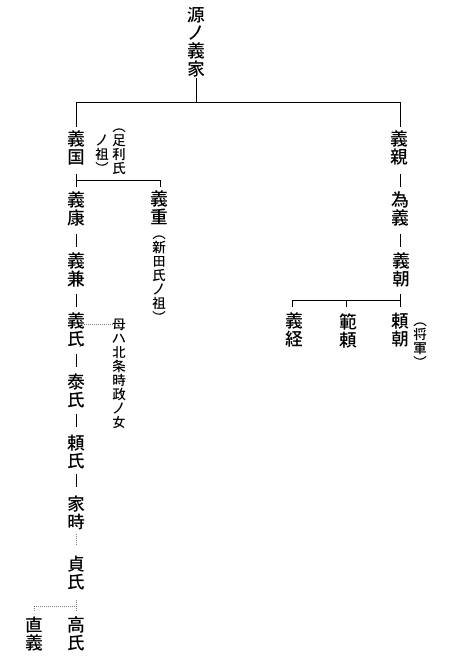

| 私本太平記 01 あしかが帖 | |
| 吉川 英治 | |
| (2013) | |
私本太平記
あしかが帖
吉川英治
まだ除夜の鐘には、すこし間がある。
とまれ、ことしも大晦日
まで無事に暮れた。だが、あしたからの来る年は。
洛中の耳も、大極殿
のたたずまいも、やがての鐘を、偉大な予言者の声にでも触
れるように、霜白々と、待ち冴えている。
洛内四十八ヵ所の篝屋
の火も、つねより明々と辻を照らし、淡い夜靄
をこめた巽
の空には、羅生門の甍
が、夢のように浮いて見えた。そこの楼上などには、いつも絶えない浮浪者の群れが、あすの元日を待つでもなく、飢
えおののいていたかもしれないが、しかし、とにかく泰平の恩沢
ともいえることには、そこらの篝番の小屋にも、町なかの灯にも、総じて、酒の香がただよっていた。都の夜靄は酒の匂いがするといってもいいほど、まずは穏やかな年越しだった。
「さ、戻りましょうず。......若殿、又太郎さま。......はて、これは困った。いつのまにやら、邪気も無う、ようお寝
みだわ」
一色右馬介
は苦笑した。ゆり起しても、若い主人の寝顔は、居酒屋の床几
に倚
ったまま、後ろの荒壁を背に、ぶらぶら動くだけなのである。
「これはちと、参らせすぎたな。やはりお年はお年」
右馬介は侍者
として、急に自分の酔
をさました。ここは錦小路の、俗に〝請酒屋
〟とも〝小酒屋〟ともよぶ腰かけ店だ。こんな所へ、ご案内したと知れただけでも、あとで上杉殿からどんなお叱りをうけるかと。
かつて、自分は六波羅の大番役も勤め、都は何度も見ていたが、又太郎ぎみには、初めてのご見物だ。すべてが、もの珍しくてならないらしい。
ところで、こんどの上洛では、彼も驚目したことだが、なんと都には、酒屋が殖
えたものだろう。――という感を、ここの亭主にただしてみたら、十年前には醸造元の〝本酒屋〟も百軒とはなかったものが、当今では洛中だけでも二百四、五十軒をこえ、その上、近江の百済寺
で造るのや、大和菩提寺の奈良酒だの、天野山金剛寺の名酒だの、遠くは、博多の練緯酒
までが輸入されてくる有様なので、請売りの小酒屋も、かくは軒を競っておりますので、ということだった。
なるほど、これは自分たちの国元、関東などでは見られない。
だが、この凄
まじい酒屋繁昌は、人心の何を語っているものか。ただ単に、これも泰平の余沢
といえる現象なのか。
主従しての、そんな話から浮いて、つい、
「何も土産ぞ。奈良酒とやら百済酒とやら、ひとつ、飲みくらべてみようではないか」
と、なったものだ。
これは、又太郎から、言い出したこととしても、こんなにまで飲ませてしまったのは、重々自分も悪かった、と思うしかない。
「若殿、若殿。もはや相客とて、たれ一人おりませぬ。さ、立ちましょう。除夜の鐘もそろそろ鳴る頃......」
又太郎は、やっと眼をさました。醒
めた顔は、いとどあどけ
ないほど若々しくて、ただまぶしげにニヤリと笑う。そして、直垂
の袖ぐちで、顎
のよだれを横にこすった。
「ああ、よいここちだった。右馬介、よほど長く眠ったのか、わしは」
又太郎は伸びをした。その手が、ついでに、曲がっていた烏帽子を直した。やっと現
に返った眼でもある。
その眼もとには、人をひき込まずにいない何かがあった。魔魅
の眸にもみえるし、慈悲心の深い人ならではの物にもみえる。どっちとも、ふと判別のつきかねる理由は、ほかの部分の、いかつい容貌
のせいかもしれない。
骨太なわりには、瘦肉
の方である。顎
のつよい線や、長すぎるほど長い眉毛だの、大きな鼻梁
が、どこか暢
びり間のび
しているところなど、これは西の顔でもなし、京顔でもない。坂東者
に多い特有な骨柄
なのだ。それに、幼いときの疱瘡
のあとが、浅黒い地肌に妙な白ッぽさを沈めており、これも女子には好かれそうもない損の一つになっている。
けれど今、従者の一色右馬介にゆり起されて、無言でニッと見せた羞恥
み笑いや、大どかな風貌の魅力さといったらない。きっとこの郎党は、この若いおあるじのためには、どんな献身も誓っているのではないかと思われる。
とにかく、醜男
の方ではあるが由緒
ある家の子息ではあろう。佩
いている太刀なども、こんな小酒屋の客には見ぬ見事な物と、亭主もさっきから、眼をみはっていた様子だった。
「されば、お眠りはつかのまでしたが、昼、六波羅を出たばかり。さだめし、上杉殿のお内でも、この深夜まで、どこを何して歩いてぞと、お案じのことに相違ございませぬで」
右馬介の分別顔を、一方は屈託もなく笑い消した。
「ばかな、そんな心配をだれがするものかよ。こたびの上京こそは、せっかく、よい見学として、諸所、くまなく見て帰れとは、国元の父上のみならず、六波羅の伯父上も、くどいほど申されたことだ。まして、右馬介も付いておることと」
「その儀は、とく心得ておりまするが、程なく元旦にもなりますことゆえ」
「そうだ、除夜だなあ。ことしの除夜の鐘を、都で聞こうとは思わなんだぞ。明くれば、又太郎も十八歳。右馬介、おまえとは幾つちがいだっけな」
「ちょうど、十歳上に相成ります」
「十の違いか。わしがその年になるまでには、きっともう一度、都へ上
る日があろうぞ。鎌倉のありかたと言い、眼に見た都のさまと言い、これがこのままの世でいるわけはない。おやじ、もう一壺
、酒を持ってまいれ」
「や。そのように、お過ごしなされては」
「なぜか今夜は、腸
がわしへ歌うのだ。飲むべき夜なれと、腸が申す。まあ、そういうなよ右馬介」
分別は、こちら以上にあるお人である。きかないご気性である点も、日頃の練武修学、すべてにおいてなのだから、かくなってはお守役の右馬介も、黙って控えてしまうしかない。
と、そのとき、まるで木枯しでも吹きこんで来たように、この小酒屋の軒ばから、
「オオ。ここはまだ開
いていたぞ。酒だ、酒だ。おやじ、それに何ぞ温い物でもないか」
と、凄まじい人々の吐く白い息が、どやどやと、土間いっぱいに込み入って来た。
たちどころに、土間は小酒屋らしい混雑と雑言
で、埋まった。
十数名の武者は、みな小具足
の旅姿だった。といってもあらましは、足軽程度の人態
にすぎない。争いあって、一碗ずつの酒を持ち、干魚か何かを取ってはムシャムシャ食う。そしてやや腹の虫がおさまり出すと、こんどは野卑な戯
れ口
で果てしもない。
彼らには、片隅の先客など、眼の外だった。又太郎の方でも、思わぬ光景を肴
として、声も低めに、ひそと、ただ杯を守っていた。
「右馬介。......どうやら鎌倉者らしいな」
「さようで。話ぶりでは、鎌倉から紀州熊野へ、何かの御用で行った帰路の者かと察しられますが」
「む。うなずかれることがある。先ごろ、熊野新宮へ御寄進の大釜
一口に、大檀那
鎌倉ノ執権
北条高時と、御銘
を鋳
らせたものを運ばせたとか伺っていた。それの帰りの一と組だろう、この輩
も」
「さてこそです。どうも最前から、犬を連れているのは妙だなと、見ておりましたが」
「なに犬を。どこに」
――犬の一語が、ふと彼らの耳を刺したとみえる。大勢の眼が初めて、ぎょろと、二人を見た。
だが、又太郎の視線とは、ぶつかり合うよしもない。
なるほど、立派な犬が人々の蔭にいたのだ。紀州犬としても優
れた名犬にちがいなかろう。琥珀色
にかがやく眼、黒く濡れ光っている鼻頭
のほか、全身の毛は雪を思わせる。そして大きなこと、白熊のようなといってもよい。
「ははあ、御献上物だな、この犬殿も」
酒板に頰杖
ついて眺めつつ、彼の酔眼にはその犬が、だんだん、北条高時その人みたいに見えてきた。
高時が、鎌倉御所のうちで、そうであるように、この犬も、武者足軽の群臣をしたがえ、旅路にも持ち歩かせているらしい高麗縁
の半畳
を土間に敷かせ、その上へ、ゆったりと、尻をすえているのである。
首輪は太縒
の紅白の絹づな、銀のかざり鎖
。わきには、布直垂
の犬飼が二人、主に仕えるごとく付添っていた。そしてここへ着くやいな、犬殿への供御
の物を、まず第一にと、ささげていた。
「............」
滑稽である。じつにおかしい。おそらく又太郎には、犬好きな執権の有名なる犬痴性
が、この奇妙な実在によって、よけいおかしく思い出されていたものだろう。
現執権高時の田楽
（土俗的な歌舞）ずきも、狂
に近いが、闘犬好みは、もっと度をこしたものである。鎌倉府内では、月十二回の上覧闘犬があり、武家やしきでさえ闘犬を養って、それを美食で肥えさすのに、憂身
をやつさぬ者は少ないとか。だから名犬といえば、銭
百貫から数百貫の高値をよび、わけて高時自身の愛犬が、あまたの家来に護られて道を行けば、往来人は笠をぬいで、路傍にひざまずくといった風な奇観も珍しくはないという。
「......ふ、ふふふふ」
つい、又太郎は、独り笑いを杯に咽
ばせてしまった。と共に、酒に酔った犬飼の手綱
を抜け、いつのまにか側へ来て、自分の足もとを嗅いでいた紀州犬の鼻ヅラを見たので、いきなり足をあげて蹴飛ばした。――それは、まったく彼の意識なき衝動か、酒興
の発作
ではあったらしいが。
人間どもに仕えられて、近ごろ驕
っていた犬である。
けんっ――
と、するどく悲鳴して、四肢を退くと、怒りを眸に示して、ひくく唸
った。
犬以上にも驚いたのは、飲みはしゃいでいた人間どもの方である。場所はせまい小酒屋の土間。「――すわ」といっても、小早い身うごきは出来ッこない。どっと、壁を背にした空間を前に作って、さて、あらためて一せいに相手の在る所を睨
めすえた。
「やいっ。――蹴ったな、蹴りおったな。神宮の禰宜
どのから、鎌倉殿へ御覧に入れようがため、おれどもが預かって、道中これまで護って来た大切な、おん犬をば」
宰領
は、足軽頭か。
太刀のつかを叩いて、犬の代りに、吠えている。
「は、は、は、は。......おん犬とは」
またしても、又太郎が嘲笑するので、右馬介は気が気でなく、酒板の下で、その袖を、引っ張った。そして、自分が詫
びようとでも思ってか、床几の腰を浮かしかけると、
「右馬介、おまえは黙っておれ。わしのしたことだ、わしが物申す」
すると、返辞は、足軽頭が奪い取って。
「なに、物申すだと。御献上のおん犬に、土足をくれて、なんの言い条がある」
「ある」
又太郎は、残りの一杯を、ゆっくり飲みほした。
「犬に訊け。蹴ったのではない。足で頭をなでてやったまでのことだ」
「ば、ばかな言い抜けを。蹴られもせぬおん犬が、なんであんな声を立てるものか」
「いや、獣
がしんによろこぶと、ああいう声を出すものだ」
「こいつめが、人を小馬鹿にするもほどがある。酔うての上の悪戯
かと思えば、さては故意にやったな。検断所
へつき出してやる。さあ立て。者ども、そいつらを引っぱり出せ」
「まあ、待て、わしの言が、うそかほんとか、見た上にしても遅くあるまい。これこれ、そこな犬殿の家来。もいちどわしの前へそれを曳いて来い」
「どうする」
言ったのは、大勢の端で、犬を抑
えていた布直垂
の犬使いらしい男だった。
「――おれが抑えていればこそだが、押ッ放したら、汝
れのどこへ嚙ぶりつくかも知れぬぞよ」
「おおよいとも。もいちど足であやしてやる。放せ」
放されたが、犬は一気にバッとは来ない。要心ぶかく、のそのそと近づいた。そして、底知れぬ獰猛
さを雪白の毛並みにうねらせた。だのに又太郎は、われから革足袋
の片方を上げて、彼の鼻ヅラへ見せている。
犬は疑った。ちょっと、姿勢を低くした。が、それは支度か、いきなり桃色の口をかっと裂き、相手の足首へ咬
ぶりついた。咄嗟
に、又太郎はその足を引くことなく、逆に、足のツマ先へ槍のごとき迅さを加え、犬の喉ふかくまで突ッこんだ。それは、あるまじき光景だった。異様な絶叫が人の耳を打ち、白い尾も胴体も意気地なくころがッた。
いや、それも見ず、又太郎は小酒屋を飛び出していた。幾人かを刎
ね飛ばした覚えはある。だが、振向いて後ろへ呼ぶには、数百歩の宙を要した。
「右馬介、右馬介っ。早く来い。逃げるが一手だぞ」
わざと五条橋を避け、主従とも、七条河原へまぎれたのは、相手の追尾
よりも、帰る先と、身分を知られることの方が、より恐
かったからにちがいない。
「いやどうも、若殿のお悪戯
には、驚きまいた。物にもよりけり、相手にもよるものを」
「やはり酒のなせる業
だったな」
「そんなお悪いご酒癖
とは、ついぞ今日まで、右馬介も存じませんでしたが」
「はははは。犬も悪かった。あの傲慢
な生き物が、わしには、まざと、鎌倉の執権殿そッくりに見えてきたのだ。そこが酒だな。もう余りは過ごすまい」
「ここは闇の河原、ご放言も、まず大事ございませぬが、そんなお胸の底のものは、他所では、ゆめ、おつつしみなされませ。先刻の小酒屋でのお振舞なども、金輪際
、ご口外は」
「右馬介は、いつまでわしを子供と思うてぞ。知っている。心得ておるよ。......ところで、除夜の鐘はまだか」
「はて。除夜はとうに過ぎておりまする。やがて東山の空も白みましょうず」
「では、はや元日か。さても、おもしろい年を越えたな。今年は初春
の夢占
もよからん気がするぞ。なあ右馬介、もう寝るまもあるまい。宿所へ戻って、若水
でも汲むとしようよ」
やがて二人の姿が帰って行った先は、北ノ六波羅の一郭
だった。
むかしは平家一門の車駕
が軒なみの甍
に映えた繁昌のあとである。平家亡んで、源ノ頼朝、実朝
の幕府下にあったのもわずか二、三十年。――以後、北条氏がとって代ってからは、中興のひと北条泰時
の善政、最明寺時頼
の堅持、また、元寇
の国難にあたった相模太郎
時宗などの名主
も出て、とまれ、北条家七代の現執権高時の今にいたるまで、南北の六波羅探題以下、評定衆
、引付衆
、問注所
執事、侍どころ所司
、検断所、越訴
奉行などのおびただしい鎌倉使臣が居留しているその政治的聚落
も、いつか百年余の月日をここにけみしていた。
夜はしらむ。
年輪をかさねた六波羅松の松の奏
でに。
近くの八坂
ノ神の庭燎
、祇園
の神鈴など、やはり元朝は何やら森厳
に明ける。
明けて、ことしは元亨
二年だった。
ただしく過去をかぞえれば、武家幕府の創始者、頼朝の没後から百二十二年目にあたる初春
である。
又太郎は一室で、清楚な狩衣
に着かえ、烏帽子も新しくして、若水を汲むべく、庭の井筒
へ降り立っていた。
彼の伯父なる人とは、六波羅評定衆の一員、上杉兵庫頭
憲房
である。ここはその邸内だったのはいうまでもない。
「アア都は早いな」
井筒のつるべ
へ手をかけながら、又太郎はゆうべの酔の気
もない面
を、梅の梢
に仰向けた。
「――国元のわが家の梅は、まだ雪深い中だろうに。......右馬介、ここのはもうチラホラ咲いているの」
「お国元のご両親にも、今朝は旅のお子のために、朝日へ向って、ご祈念でございましょうず」
又太郎に、返辞はなかった。彼も若水の第一をささげて、まず東方の人に、拝
をしていた。
彼にとれば、ここは旅先の仮の宿所だ。ひまで、のんきで、身をもてあますほどである。
が、伯父の上杉憲房には寸暇も見えない。元日の朝、大書院から武者床
を通した広間で、家臣の総礼をうけたさい、共に屠蘇
を祝ったりはしたが、あとは顔を合せる折すらなかった。
次々の賀客を迎え、客がとぎれると、彼自身、駒飾
りした騎上の人となって出て行くし、夜は夜で、探題からの迎えがくる。
「いや、六波羅勤めも忙しいものだな。伯父上が口ぐせに、帰国の日を待つお気持ちもわかる」
二日の昼。
彼は一ト綴
の和歌の草稿をふところに、冷泉為定
の四条の住居を訪ねていた。為定は後に〝新千載和歌集〟を撰した当代著名な歌人である。東国育ちの武家の子又太郎にしては、そんな文雅な人を訪うのはためらわれたが、これは母との約束だった。
元来、母系は勧修寺家
の公卿
出であったから、彼の母もわが子をただあじけない坂東骨
一辺の粗野な武人には仕立てたくはなかったのだろう。兵家必修の日課のほか、つねづね彼へ和歌の学びをもすすめていた。そしてこんどの上京には、ぜひ冷泉どのの門をたたいて、末長く詠草を見ていただくようにお願いせよと、手紙まで持たせられて来たのであった。
折よく、在宅していた為定は、
「おう、めずらしいお文」
と、手にした仮名文
をなつかしみ、さてまた、これがその人の子息かと、ひと間のうちに、しげしげと見て。
「ほ。其許
がこのお便りにある足利清女
どのの御嫡男
かの」
「いえ......」と又太郎は、うすらあばたの頰を、どぎまぎ紅くして、さらに居ずまいを改めた。
「――早逝
でしたが、兄義高があり、私は次男にございまする」
「が、まあ、兄君がおわさねば、其許がお世継じゃろうが。して御官位は」
「申しおくれました。――下野国
足利ノ庄の住
、貞氏
の次男、足利又太郎高氏
といいまする。十五で元服の折、治部大輔
、従五位下をいただきましたが、何もわからぬ田舎者で」
「御卑下
にはおよばぬ」
為定は、うちけして。
「下野足利ノ庄といえば、天皇領の御住人」
「はい。足利ノ庄の内には、世々、八条院の御旧領があり、それが今上
の御料に移されておりますゆえ、畏
れあれど、申さばわが家は、朝廷の一被官
でもござりまする」
「それ御覧
じ。お血筋といえば北条殿には劣らぬ正しい源家の流れ。家職といえば現帝の御被官。なぜ、遠いお旅をば、供人も召されずに」
「とかく、故なき上洛は、鎌倉の幕府の忌
むところでございまする。が、父貞氏の健やかなうち、少しなと世上の見聞
を広うしておきたいものと、たって父母にねだって出て参ったのです。忍びやかでこそ、六波羅の身寄りの家にも置かれますので」
「なるほど、朝家
の御被官であるだけでなく、幕府の御家人でもおわせられたの。こりゃ、むずかしかろ」
やはり世事にはうと
そうな老歌人の言である。為定は抜け歯の多い口をあいて笑った。
老歌人の為定から「......お供も召されずお一人でか」と、いぶかられたのもむりはない。
いつもの右馬介さえ今日は連れていなかったのだ。都は知らず東国では源氏の名流、武門の雄と見なされている足利氏の曹司
である。ゆらい遠国者の上洛ほど派手をかざって来るものといわれているのに、飄
として、一人で門を叩くなどはおかしい。先で偽者と過
られなかったのも、思うに、彼にはこんな場合もあろうかと、とくに心をつかってくれたらしい母の添文
のお蔭だった。
彼にもそれが分っていよう。やがて為定の門を辞して、あてどなく町を行くうち、ふと、石の地蔵尊を路傍に見かけると、何やら袂の物を供物にささげてそれへ額
ずいていた。それは為定の家で茶菓子に出た粉熟
であったが、甘葛
と餅で作った美しい五色の菓子は、彼がまだ手を合せているうちから、そこらにいた貧しげな童
たちが、互いに翡翠
みたいな鋭い眼でねらっていた。もちろん又太郎は、自分が十歩とも去らないうちに、供物が消えてしまうであろうことも知っていた。
――が、又太郎には快かった。いつからか、母は地蔵尊を信仰していて。「そなたを生んだ難産の折もお救いであったし、そなたの疱瘡
の軽うすんだのもお蔭であったぞや。どうぞ、そなたも生涯の守護仏として給
べ」と、何度聞かされていたことかしれない。
でも、これまでは、そんな心にもなれなかったものが、ふと旅の路傍で、こだわりもなく、今のような姿を神妙に彼が見せたのは、これも母と離れて、かえって、子の中に、母がほんとに分っていたからであろう。――で、彼は途々、母がよく夜語りにした地蔵尊の仏説などを、独り想いつづけながら歩いた。
羅刹
地獄の六道の娑婆苦
も能く救うというお地蔵さまも、まことは、一仏二体がその本相であり、半面は慈悲をあらわしているが、もう半面の裏のおすがたは、忿怒
勇猛な閻魔王
であって、もともと一個のうちに、大魔王と大慈悲との、二つの性
を象
っているものですよ、と母はよく言った。――幼い耳に沁
みたそのふしぎさやら怪しさが、彼にはいまだにこびりついている。
「......そうか。地蔵の両面とは、つまりは、そのままこの又太郎高氏のことだった。わが子の両面をよう知っている母上が、それで、たびたびこのわしに」
彼はその日、心にきめた。母のことばに従って、地蔵菩薩を以て終身の守護にしようと思ったのである。
六波羅はもう夕
の灯だった。彼の姿を見ると、右馬介はすぐ侍部屋から走り出て迎えたが、なにか冴えない容子ですぐ告げた。
「若殿。ついにここのご宿所を嗅
ぎつけてまいりましたぞ」
「嗅ぎつけて。......誰がだ」
「大晦日
の小酒屋での」
「あ。あの犬家来どもか。それが」
「探題殿へ訴え出たため、検断所から何やら御当家へきついお沙汰のようです」
「足利又太郎と知ったのか」
「そこのほどは分りませぬが、上杉殿には、甥
どのが立帰ったら、すぐにも旅支度して、東
へ帰れとの仰せなので」
「伯父上は、奥か。――いや旅支度など急がずともよい。ちょうどおいでなれば、ほかにお願いもある。さは案じるな、右馬介」言いすてて、彼はすぐ奥へ入った。
「和殿
の六波羅泊りも、はや二十日余りだの。洛中洛外の見物も、まずは、あらましというところか」
「はい。ここをわが家のように、わがままばかりして」
「なんの、他人行儀」
上杉憲房は以前からこの甥が好きらしい。短所もよく知っているのである。又太郎の方でもあまたな一族中でもほかならぬ人と、甘えた恃
みを抱いていた。それはこの人が、母の兄であるという親近感だけのものではなかった。
「――その上にもです。右馬介から聞けば、私のつまらぬ悪戯
から、御当家へまで、何か、探題殿よりむずかしい御尋問の沙汰がありましたとか」
「御献上の犬へ、和殿が足を食らわせたとかいうあの事よな。よいではないか。わしはおもしろいと思うておる。ただし鎌倉の執権殿と、そなたの母者
には、べつな意味で、いずれへも聞かせられんがの。はははは」
まるで、おだてるような語調だが、すぐ声を落して。
「ま、先刻。右馬介へも申しておいたが、とにかく、こたびの和殿の旅は公
ではない。去年
の暮、足利の御厨
から伊勢の神宮へ、例年の貢
ぎあるを幸いに、その上納物の列に和殿を加えて、帰路をそっと、この都へ、立ち廻らせたものじゃった。......いちどは都も見せておきたい、という親心と、和殿のたってな宿願でな」
「はい」
「で。犬の沙汰などは些事
とするも、万が一、さる密
か事
が公となってはまずい。あとの処理はこの憲房にまかせられ、早うここを立つのが上策ではあるまいかの。かたがた、都の内にも、もう見る所もあるまいし」
「されば、もとより仰せには従いますが、ただもう一事、心残しがございますので」
「まだ、なんぞ？」
「うけたまわれば明三日、帝
には朝覲
の行幸
（天皇が父皇の御所へ拝賀にゆくこと）あらせられる由。今日、冷泉どのをお訪ねした折、伺いましたが」
「そりゃ、相違ないが。して」
「いずれは御警固として、六波羅衆も、お立ち迎えいたすことでございましょうず。又太郎とて治部大輔
、無位の布衣
でもございませぬ。立武者のうちに加えて、よそながらでも、御盛儀を拝するわけにはゆきますまいか。せっかく、都へ来あわせていた身の冥加
に」
憲房は黙ってしまった。甥の熱意に、聞き惚れていたわけではない。当惑顔というものだった。また、若さというものは、分別者には出ない奇想を抱くものだと半ばあきれ顔にも見える。
しかし憲房にも、その願望をかなえてやりたい気は多分にあった。こんどの旅にしても、単なる都見物が当人の目的でもなし、また肉親のすすめでもない。いまの当主貞氏
に継いで、いつかは当然、又太郎高氏が、足利一族の棟梁
に立つ日がくる。――で、この惣領
の教養には、欠くところないつもりだが、ただ、なにぶん東国の一平野に育ったままではと、それのみは彼の母すら不満としていたからだった。
どう説いたか、または憲房が、すすんで一策を案じたのか。ついに彼の望みはきかれ、よそながらでも、明日の行幸を拝してからの帰国と話はきまった。くれぐれ、その直後にはすばやく離京するようにと、憲房は念を押した。伯父甥、それらの相談で夜をおそくした。又太郎はすぐには枕になずめなかった。
あいにく、正月三日の空は、薄曇りだった。そして折々は映
す日光が、北山の遠い雪を、ふと瞼にまばゆがらせた。
――天皇の鸞輿
は、もう今しがた、二条の里内裏
をお立ち出でと、沿道ではつたえていた。行幸
や御幸
を仰ぐのはめずらしくない都の男女だったが、朝覲
の行幸
と知って「......今日ばかりは」の、ひしめきらしい。
まことに、今上
（後醍醐
天皇）としても、公な父皇への御訪問は、即位後、初めての御儀だった。今後とて公な御対面としては、御一代あるかないかもしれないのである。
子が父を訪い母と会うにすら、こんな儀式が必要事とされるのも、天皇なればこその、おわずらいよと、たくさんな庶民の中には、その不自然な御環境に「――なんたる、御不自由さか」と、お気のどくを感じた者もいたかもしれない。が、おそらくは万人が万人、それとは逆に、
「おなじ人間と生れながら」
と、金鳳
の御輿
にある人と、板ぶき小屋に生れついた凡下
とをひきくらべて、つい羨
ましくも見たであろう。
といっても、人皇
九十六代の現世まで、天皇と民とは、生れ出ぬ以前から、こうあるものと、すでに約束づけられていた国土である。それ以上には、何を思いもせず悩みもせぬ群集ではあった。なおさらなこと、天皇御自身にも九五
の尊
を、自由のない不幸な地位などとは、ゆめ御思惟
するはずもあるまい。
いや、みかどとしては、むしろ今日の朝覲の御儀も「時を得たしるしぞ」として、満足以上なおここち栄えのうちに、未来のおん夢も、さまざまだったのではあるまいか。
今上の後醍醐は、じつに前例のないほどおそい御即位だった。皇太子たるまま十年も臣下の吉田大納言定房
の邸に養われ、つい四年前、おん年三十一で、万乗の君となられたばかりである。――時をえて、という御感慨は、今日ばかりのお胸ではない。
やがて。
先駆が通って、しばらくすると、彼方からおん輿の屋根にきらめく金色の鳳
がゆらゆら見えて来た。みゆき先は、つい京極の大炊御門
なので、関白、諸大臣、公卿殿上人ら、すべて供奉
は徒歩
であった。
それにせよ、列の流れははなはだおそい。
せまい四ツ辻などにさしかかると、まるで林みたいに立てた両側の民家の門松の枝が、おん輿の御帳
につかえて、内なる龍顔をふとあらわにしたりした。
道に白砂をしき、軒に門松を立て渡す風は、その頃には、正月だけの景色でなく、大行幸
やら祭渡御
には、令が出て、時を問わぬ慣
いであった。が、時により土地
によって、竹、さかき、椎、しきみ、椿なども立てたりはする。
いずれはこれも、唐風俗の移入からであろうが、要は、民家の貧しさをおおうためにあったのだから、帝室では、由来、門松は立てなかった。
ほどなく、おん輿は、京極おもての院の棟門
につく。
夙
に、お待ちうけらしいたたずまいである。院司
の上奏あって、すぐ乱声
（雅楽部の合奏）のうちに、鸞輿は、さらに中門へ進められた。
みかどの父ぎみ、後宇多
法皇は、まだ五十五、六でおわせられた。が、御愛人の遊義門院の死に会うて、御法体
となられてからは、俄に、老
けまさッてお見えであった。
が、ひとつには。
二ノ御子
尊治
（後醍醐の御名）の即位をやっと見給うたこと。また、院政という歴代にわたる厄介な二政府式の弊
も廃して、天皇一令のむかしに復元されたので、「......まず、これで」という御安息やら、閑居のおん空しさなども、手伝うてのことと、侍側や蔭の女房たちは憂いもなくお見上げしている。
どれも当っていなくはない。
けれど、父皇の老いの影や、過去半生の真の御苦労さなどをよく知る者は、やはり御子
の後醍醐に如
く君はなかった。
明け暮れ、北条氏という姑
に、いじめ抜かれたためよ。
――もし世に、幕府というものがなかりせば。
今も今とて、父子対面の賀の御座
に向い合われると、御子のみかどには、父皇のおやつれが、すべて対幕府の御心労にあった果てと仰げて、いきどおろしく、うら哀しく、じんとお胸にせまるのだった。
いきさつは、かんたんでなく、また朝幕の間にわだかまる禍根も古い。
「............」
つねには、なかなかお会いの折とてないので、後宇多法皇にも、とつ、おことばも、すぐにはなかった。
香染
のおん衣
、おなじ色のみ袈裟
、まき絵の袈裟筥
をそばにおかれ、寝殿中央に御座あって、まんまえの廂
の玉座
に束帯低う〝御拝
ノ礼〟をとられた天皇のおすがたを、ただじっと見まもっていらっしゃる。
親ごころ、推し量
るに。
――さすが違うものかな。吉田定房の家にあった皇太子の頃とはずんと違って、ああ、ゆゆしい大君
ぶりになられしよ。
と、頼もしげに、御覧
ぜられているかに思われた。
こう御対顔の間は、奏楽も止み、関白ノ内経、諸大臣らは、床
のすえにひれ伏し、西と東の中門廊にも、多勢の上達部
（上級の公卿）が、御簾
揚げわたした辺りの一点を、粛と、見やり奉っていた。
すると、その中にいた吉田ノ大納言定房が、とつぜん直衣
の袖ぐちを眉にあてて泣きすすりをもらした。みかどがまだ尊治親王
とよばるる御身分にすぎなかった幼少から、わが家にてお養
だて申しあげて来たいわゆる乳父
の彼であった。「......さてこそ、無理からね。そのかみの古ごとなど、さまざま思い出しての、うれし泣きであろうに」と人々は、今日の事に会った定房の感慨のほども察していた。
ここで〝御拝ノ礼〟がすむ。
みかどは、一たん階
ノ間から公卿の座へ戻られ、法皇もまた内へ入らせ給うて、あらためてのお席となる。
そして再び、楽部の伶人の奏楽につれ、次の御宴では、法皇もお茵
ばかりのおくつろきだった。――また、内裏から御供してきた女房たちも、一の車、二の車、三の車と、それぞれの簾から匂いこぼれて、末の廂の間に姸
を競うた。
おくつろぎの宴となってからは、みかども法皇も、時をおわすれ顔で、まことに御父子のおん仲でこそと見えた。
「主上
には、ご受禅
（み位をうける）の後は、政務のひまにも、講書の勉
め、詩文の会など、ひたぶる御勉強のみと伺うが、余りな御精励もおからだが案ぜらるる。まれには、ちと、おすごしもよかろ」
法皇は、後醍醐の御酒量のほども知っておられる。み手ずから酌してあげぬばかりなおすすめの仕方であった。
酒間には、法皇のお覚えよき寿王とかいう冠者の〝落蹲
ノ舞〟などあって、女房たちの座も初春
らしい灯に笑いさざめいた。
――頃をみて。
「あまりお酔も深からぬうちに」
と、頭
ノ蔵人
冬方
が、みかどの前に、お笛筥を供える。
これは朝覲の式の古例とか。後醍醐は、父皇のための御笛を、み手に取って吹いた。
そとの濃い闇には、雪が音もなく降り出していた。聞きいる人たちの幻想には、白々と戯れる雪の斑
が、みかどの豊かなおん横顔や笛の手に重なって見えるように思われた。
お年ばえといい、おからだの逞
しさといい、まさに壮者のお盛りであった。どちらかといえば、御性情も面ばせも、後宇多には似給わず、亡き母ぎみの談天門院
の美貌をうけていらっしゃる。似絵
師のことばでよく、〝藤原顔〟というあの瓜実顔
ではあるが、鳳眼
するどく、濃いおん眉、意志のつよげなお唇もと、また、ひげ痕も青々と、皇系にはまれな男性的な御風貌であった。
わけて、常人
の印象となるであろう点は、笛の孔に無心な指の律動を筬
のように弾ませていらっしゃるそのお手のなんとも大きなことだった。貴人にして力士のようなお手である。把握欲と闘志の象徴とでもいえるものか。なみならぬ天賦の御気質のほどがそれには窺
われる。
で、思い合わされるのは。
いまは九重の上、お噂とて、なかなか洩れ難いが、かつて吉田定房の邸におられた皇太子時代には、そうした豪気による放埒の御片鱗が、しばしば世上に聞えぬでもなかった。
たとえば、その当時。
ある年の秋の一夜だったが、西園寺
の前
ノ太政大臣
実兼
の末の姫が、とつぜん北山の邸から姿を消した事件など、ひところの騒ぎであった。
姫はまだ十七、深窓の愛
しみにくるまれていたが、佳麗な容姿はかくれもなく、つねづね若公卿ばらの野心のまと
であった。
それだけに、西園寺家では「――いかなる悪党の仕わざか。もしや野伏
から人買いの手にでも渡されてか？」などと、全家の憂いをあげて、八方せんぎの手をつくしたところが、なんと、姫を盗んだ下手人は、皇太子尊治の君とやがて知れた。
おひとりでは出来ない芸で、これには日頃の御学友なども加担していたにちがいない。が、さすが乳父吉田定房の家には連れず、よそに隠しおかれて、こよなき恋の巣と、潜んでおいでだったものである。相手が相手、西園寺家の方でも、やがて、鳴りをひそめてしまったのはいうまでもない。
皇太子の姫盗みに会われた西園寺家の末むすめは、禧子
というお名であった。
しばらくは、皇太子との浮名沙汰など姦
しく、他所に隠されておいでだったが、やがて年経て、はからずも尊治が万乗の君となられたので、禧子にも女御入内
の宣旨がくだり、またほどなく立后の儀も挙げられて、いまはただしく今上後醍醐の皇后
と仰がれる御方とはなっている。
「なにが御運かしれぬものよ」
と、ひとは羨み、皇后の父実兼なども、
「――この齢になって」
と一家の栄えをほくほく顔とも聞えたが、しかし、皇后には、いくほどもなくお淋しげな影が深まっていた。
皇后の侍
きに、阿野
中将の女
で廉子
とよばるる女性があった。廉子の美貌はいつか天皇のお眼にとまって、すぐ御息所
の一と方となった。花の命は短くて――とはまま後宮の女性の喞
ちごとであったが、廉子との御情交だけは異
なものがあった。彼女の誇りも君寵も、眼にあまるものがある。
もっとも歴世、後宮の嬪
には、大みきさきに次いで、女御
、更衣
など、寵妃の数にかぎりはない制度だったので、ひとり後醍醐のみを怨じ奉る筋あいもない。
それと、三十一という遅い御即位だったせいもあろう。
当時の人の筆に成る〝増鏡
〟にも、他の一女性について。
――この大納言（藤原為世）の女
、為子の君とて、坊（東宮）のおん時、かぎりなく思
されたりし御腹に、一ノ御子
（尊良
）女
三
ノ御子（瓊子
）、法親王（尊澄
）など、あまたものし給ふ
と、見える。
すでに女性の御経験もこれほどでおわしたのである。思うに、天皇御自身は、後宮制度という百花の園においてのみ、その人間性を恣
にできる天然の童
のようなものだった。きれいと思えばむしり取り、飽いたとすれば抛
ち、なお、好きで好きでならないものは、これを落花ひんぷん
の棒になるまで離さない、いとも無著無造作な、お愛し方なのではなかろうか。
――近頃ですら、こんな話が洩れている。
やはり天皇の御寝
に侍るひとりに、大納言ノ典侍
という麗人がある。いつしか、東宮仕えの堀川ノ具親
と忍び逢うて、宮中から馳け落ちした。後醍醐は、めざましいお怒り方で、嵯峨かどこかに隠れていたのを捕えさせた。
そしてさて、この憎い女をと、かの源氏物語にある朧月夜
の内侍
と関係した光源氏のように、御処分の事かと思っていると、そのまままた後宮において、なんらのお変りも見えず、
「......朕
も皇太子のころにはしたこと」と、近習に御一笑を見せられただけだったという。
..........................................
みかどの笛に、京極殿の灯は更
けていた。
みかどは、古例の曲を吹き終って、
「ふつつかなお聞え上げを」
と、御父の法皇に一礼して御座へ返った。
ほっと夢幻から醒めたような息の白さが灯を霞める。女房たちの座からは、ふと、みかどの方へ笑みを流した花の顔が多い。今を時めく寵妃とたれ知らぬはない阿野廉子
などの艶姿
であった。
女房の座には、その廉子のほか、さきの妃
為子の妹小大納言
の君、帥
ノ典侍
、少将ノ内侍、尾張ノ内侍。――端には、夏引
、今まいり、青柳などとよぶ雑仕
までが、こぼるる花かごのようにいたのである。
御笛の間、笛の歌口におん眼をふさいで吹きすましていたみかどを仰ぎ見ながら、胸それぞれな彼女たちが、どんな恋情や喘
なさを、そのおん横顔へ寄せ合っていたかは、われに返った後の彼女らの吐息にもよくわかる。
さて、ここでまた御酒一興。
次いで、くだけた〝お遊び〟が始まる。つまり公卿たちの催馬楽
（歌謡）や管絃だった。
中宮ノ大夫
実衡
の琵琶、大宮ノ大納言の笙
、光忠宰相のひちりき、中将公泰
の和琴
、また笛は右大将兼季
、拍子は左大臣実泰。
――かくて、つきぬ御遊
の後、お帰りとなったのは、夜もほの明けていた頃だった。
還御は雪の中。
やがて、夜どおし陣ノ内（警固区域）に立武者していた滝口や六波羅の人数がくずれ去って散るころは、陽もギラギラと淡雪の道は泥に解
けだしていた。
「いかがでした、若殿」
「昨夜か」
「されば、お望みのことは」
「む。院の舎人
に物をくれて頼
うだら、中門の遣
り水
の裾の木立に忍ばせてくれた程に」
「では、上
（天皇）のお姿を、まざと御覧
ぜられましたな」
「いや、雪さえ降るに、御簾
の内、明
らけくはなかったが、笛の座につかれたみ姿の線、おのずからな御威容、さすがはと拝せられ、世上、しきりに新帝の英邁
を沙汰するのも、道理よと、うなずかれた」
「それは、よいお国みやげ。さようにお望みもかのうた上は」
「オ。伯父上との約束。いちど六波羅のやしきに戻って、支度をあらため、すぐにも都を立ち去ろうよ」
夜来の警固武者のなかに立ち交じっていた足利又太郎と右馬介の主従であった。
暇乞いは、先の夜にすんでいる。それに伯父の憲房も、探題の正月行事でいなかった。ふたりは一睡の後、湯漬など食べ、旅支度にかかっていた。
すると、侍部屋の廊のかべを、サラ、サラ、と撫でつつ人の近づいてくる気配がした。そこの遣戸
をスウと開けて、
「おじ様、お名残り惜しゅうございます。もう御帰国なされますか」
と、それへ坐り込んだ小法師がある。
まだ十一、二歳でしかあるまいに、いたましいことに、盲
であった。
この盲少年は、母方の人の子なので、又太郎とは従弟にあたる者だが、父は地方の乱で早くに戦場で最期をとげ、子はこんな不具だったので、いかなる宿業ぞと、母なるひとも、足利ノ庄の一尼寺に入ってしまった。と、いう身の上なので、憲房が都へ伴い、さる公卿の許へ、琵琶の習得に通わせていたのである。
「......オ、覚一か。もそっと、こちらへお入り。して、なんぞ国の母者へ、ことづてでもして欲しいのか」
又太郎は六波羅に滞留中、この覚一から、友達のように、また、兄のようにも慕われていた。
覚一は、あまえ顔に、
「はい」
と、相手の声をたよりに膝をすすめる。
ちょこねんと置いた姿の坐り癖も、小首をかしげる盲癖
も、小法師だけに可憐
しかった。
「ほんに又太郎さまは、よく私の胸をおわかり下さいます。仰せのとおり、旅のお邪魔ではございましょうが、国許
の母へ、これを届けていただきたいと存じまして」
「手紙か」
「手紙やら何やらでございまして、中には都で求めた香苞
だの琵琶の切れ糸なども入っておりまする」
「琵琶の切れ糸」
「ええ。母がそれを見れば、覚一が、琵琶の師についてこんなにも勉強しているかということが、まざとお分り下さるにちがいございません」
「おう、いとやすいこと。かならず母者へ渡してあげる」
覚一の手から一封の物をあずかって、
「ほかには」
と又太郎は、この小さい不愍
な従弟を、宥
りようもなくその肩へ手をのせた。
「ありません......」と、覚一は首を振り「こまごま文
のうちにしたためましたから」
と、言い澄ました。
そしてまた、自分のことばを追っかけるように。
「でも、又太郎さま。あなたのお眼で見た私の姿をそのまま、どうぞ母へおつたえ下さいまし。覚一は、このように倖
せでおりますことも」
「倖せとな」
「はい」
「不倖せとは思わぬのか」
「思いもいたしません。ここの上杉殿では、御一家みなで可愛がって下さいますし、琵琶の道に入っては、都で二
となきお師にお教えいただいておりまする。道についた以上、覚一はきっと名人になってみせます。成らいではおきません。そんな望みに、日々、胸ふくらませておりますゆえ」
しげしげと見れば、針のような筋しかない無明
の眼にも、内には燃える希望を持って、この小法師は、しんから身を楽しいものとしているらしい。
又太郎は、彼の肩においていた手で、そこを一つ叩いて、
「よし、きっと上手になれよ」
「なります」
「足利ノ庄へ帰ったら、鑁阿寺
の女尊堂におられる尼の母者へ、そのとおりにつたえて上げる。......が、ひとの母にはそう出来ながら、自分の母にはなぜ何も与えられぬわしであろうな」
「そんなことはございません。揃うておいでなのが無上のお倖せです。どうかあなたも、足利家の御息子としてお立派なお方になってください。私も負けずに励みますから」
「つらいぞや、お汝
にそう誓われては。なあ、右馬介」
「まことに、盲
の一念とでは」
「右馬介さまも、はやお支度ずみでございますか。もう一夜でもあることなら、いま私の習うている平家の曲の屋島でも、ぜひ聞いていただきますものを」
「いや、そうしてはおられぬ。いざ若殿」
右馬介は先に立って、又太郎をうながした。
二人は、六波羅並木、車大路の辻まで来て、ふと立ちどまった。
「あれを見い、右馬介」
「おあとに、何か」
「いや、覚一の姿が、まだわしたちを見送っておる」
「はて。見えもせぬ眼で」
「そうでない。見える眼も同じだ。わしたちを振向かせているではないか」
――この日、都を離れた主従は、当然、数日後には、東海道なり東山道の人となっているべきはずなのに、やがて正月十日の頃、二人の姿は、方角もまるで逆な難波
ノ津（大阪）の端
れに見出された。
渡辺党の発祥地
、渡辺橋のほとりから、昼うららな下を、長柄
の浜の船着きの方へ行く二人づれがそれで。
「若殿、どうしても、思い止まりはできませぬか」
「まだいうのか」
「でも、今日の便船にお乗りになってしもうては」
「そのため幾日も船宿で日を暮して来たのに、この期
となって」
「――が、難波の諸所も、はからず見ましたこと。このたびは、ぜひこの辺でお引っ返し願いまする。お国元のお案じも、ただ事ではございますまい。右馬介も腹切らねばなりませぬ」
「切れよ、腹の一つや二つ」
「二つとは持ち合せもございませぬで」
「はははは。冗談はやめよう」
「おやめ下さい、無謀なご遍歴も」
「無謀にみゆるか。又太郎にはしかとした算用もあっての旅路を。元々、足利ノ庄を立ち出たときから、こたびこそは、いッその旅、都だけかは、四国中国までもと、期していたのだ」
「では、初めからご両親やら上杉殿をも、お騙
きのお腹だったので」
「仕方がない。出立前から長途の遍歴などと願っても、おゆるしのあるはずもなければ」
ここ数日、主従喧嘩づらの論もしたが、又太郎高氏の初志は、変ろうともしなかった。
機会はふたたびないと彼はいうのである。東国と西国との距離は、当時、若人の心にすら、一期
を思わせる遠さだったことにはまちがいない。そうした心情は察しられるし、もしまた、高氏が足利家当主の跡目をつげばなおさらである。右馬介とて無理解ではありえない。
だが、伊勢路から都を限ってと、日数までもあらかじめ、主家の両親とは約してあること。そして「そちも、ついて行くからには」と命じられて来たものだ。これ以上、若殿の気随気ままに唯々
として引かれたのでは、何の守役
たる効
いがあろう。右馬介は一命をかけても引き止めたい。
「や。あの船着小屋の人立ちは」
不承不承な彼にひきかえ、一方は急に大股となった。見ていると、又太郎はもう人中に紛
れ込んで、何やら雑人たちの高ばなしに耳をすましている様子。それをこなたの右馬介は、磯石に腰かけこんで、なおさいごの思案に沈んでいた。するとまた、駈け戻って来た又太郎が、こう叫んだ。
「やよ、右馬介。帰ろう。帰ろうっ。どうやら北の国で戦乱が起ったらしいぞ。遍歴などはしておられぬ。すぐ東国下野
へ馳
せ戻ろうわい」
右馬介は耳を疑った。
何か、ありえぬ空音
のように聞えたのである。
「えっ、北方の戦乱ですッて。戦乱が起ッたと取沙汰しているのでございますか」
武家の扶持
を食う身が、戦乱の一語ぐらいで、寝耳に水の驚きをうけたのは、いささか不覚と省
みたりしたことも、よけい彼を戸惑わせたものかもしれない。
もとの船宿の方へ、引っ返してゆく又太郎を追って、もいちど、念を押してみた。
「北方の乱とは、もしや九州沿海のお聞き違いではございませぬか。北にはあらで、南なら、うなずけますが」
「なんで」
「元寇
の国難も、はや四十年の昔とすぎておりますが、蒙古再来の脅
えはいまだに失せておりません。そのため九州探題の下には、博多警固番をおかれ、常時、沿海の防禦にそなえておりまする。が、しばしば異
な船影を認めるたび、すわ、元兵の襲来ぞなどと、九州鎌倉の往還を、あわてた早馬がムダ駈けする例も、ままございますのでな」
「それとの、誤聞だろうと申すのか」
「おそらくは」
「ばかな」
「ちがいましょうか」
「ちがう。大違いだわ」
又太郎は、一歩も待つなく――
「ともあれ、異変の兆
しは、蝦夷
の空だ。仔細は船宿で話してくれる。はやく参れ」
時乱に敏感なのは、いつのときでも、官辺よりは民衆だった。彼らのつたえる風聞には、公な文書
だの早馬だのという手間暇なしに、おそろしい直感力と風速を持っている。
つい今。――又太郎が小耳にはさんだのも、それなのだ。
奥州北津軽から、四国へ帰るという一僧侶が、長柄の船待ちで、しゃべっていたものである。
津軽の豪族、安藤季長
、安藤五郎、ほかすべての一族同士が、各〻、伝来受領
の領域を争いあい、ついに陸奥
一帯に布陣し出したということだった。
いや、一僧の言だけでなく、べつな旅商人らしい男も、
「なんのなんの。もう諸所では合戦の最中だ。槍、刀、馬の鞍など、白河ノ関からこっちでさえ、去年の三倍にも値が刎
ね上
がッている」
と、ひとり力
んだ証言をしていた。
「ほう。......では、蝦夷の空は戦
かいな」
群集、多くの顔は、うららかに聞いていた。
もう源平争覇の社会を眼に見た人間は地上にいない。蒙古襲来の国難なども、老人の炉辺話でしかなかったのである。四十年の無事泰平は、誰からも、全く過去の悪夢を忘れさせていた。
やがて主従は、ゆうべの船宿の一室にいた。又太郎は風聞の仔細を語った上で。
「......が喃
、右馬介。足利の地にとっては、こりゃ対岸の火災とは見ておれまいぞ。乱が大きくなれば、必定
、鎌倉幕府からわが家へも、出兵の令が降るであろうし、なおまた......」
ここまで言いかけると、彼はその地蔵あばた
の頰を、笑み割れそうにほころばせた。
「知らぬか。――〝一雲を見て凶天を知る〟という言葉もあるのを」
難波
の旅寝をその夜かぎりとして、次の日の主従
はもう京へのぼる淀川舟の上だった。
「いい川だなあ、淀川は」
舟べりに肱をもたせて、又太郎はうつつなげな詠嘆を独り洩らしていた。
「――わしの性分か。わしは大河のこの悠久な趣
が妙に好ましい。川へ泛
かぶと、心もいつか暢々
してくる」
「まことに」
右馬介は、すぐ相槌を打った。
「私としても、今日はヤレヤレという心地です。天の助けか、一路ご帰国と、俄に、ご翻意くださいましたので」
「はははは。右馬介のやれやれと、わしの暢々とを一つにされては迷惑だぞ。〝相似テ相似ズ〟と申すものだ」
「はて、昨夜もめずらしい一語を伺いましたな。〝一雲ヲ見テ凶天ヲ知ル〟とか」
「ウム」
「いま仰っしゃった語も、何かの詩句にでもございますので」
「宋の人、文天祥の詩とやら聞いた。ちょっと、おもしろい詩ではある」
「どうせ、すぐ忘れましょうが、舟の徒然
にひとつお聞かせを」
「こういうのだ」
又太郎は低い声で詩を誦
した。
忙裏
、山、我ヲ看
ル
閑中、我、山ヲ看ル
相似テ、不相似
忙ハ総
テ、閑ニ不及
「ははあ。......なるほど」
「わかる」
「わかりませんな」
「では、山を見るがいい」
「されば、左には摂津の六甲、龍王岳。右には、生駒、金剛山のはるかまでが霞の中に」
「右馬介は、今、山を見ている」
「確かに」
「だが、あたふたと、忙裏に暮れている日には、山と人間の位置は逆になる」
「すると、どうなります」
「山が人間を眺めていよう」
「つまり、閑
であれば、人が山を見。忙しければ、人は山に見られているということなので」
「ま、そうだな。すべての忙は、閑には敵わぬとでもいっておこうか」
「さてさて。若殿にはご幼少から、よく足利学校の書庫
で、沢山な書をごらんなので」
「いや、この一詩は、先年、那須の雲巌寺
よりお帰りのせつ立寄られた疎石禅師
から示されたものよ。......ああ、あの御僧も、その後、どこを雲水しておらるるやら」
ふと、眸
をあげたときだ。期せずして、乗合い客の一人物の眼と、彼の眼とが、なんとはなく、ゆき会った。
舟は、老幼男女、いっぱいな客を盛っている。尼、傀儡
師、旅商人、工匠
、山伏など――雑多だった。――その中で、何かに腰かけ、独り静かに、読書していた狩猟装束
の若公卿がある。
後ろには、拳
に鷹をすえた小冠者も控えていた。
「............」
じっと、こちらを射たのも一瞬、公卿の眼はすぐ書物の上に他念もない。紙面の宋版の木活字が時にひらひら風にうごくのを、又太郎はなお凝視していた。
――山、我を看るか。我、山を看るか。
公卿の注視も、じつは又太郎の方にあるのかも分らない。
午
をまたいで、舟は江口、鳥飼などの岸へ寄るたびに、なお、乗客を加えていた。
降りる者も見えたのに、後客
のうちには、やっと身を立ち支えている者もある。
終日
の舟行
なので、退屈もむりはないが、舟の中ほどで、博奕
が始まっていたからである。たしか花街
の神崎あたりで、どやどや割りこんで来た今時風
な若雑人の一と組なのだ。初めのほどは、酒を酌みつつ、わざとらしい猥談
を放って、女客が顔赤らめるのを興がッていた程度だったが、やがてのこと博奕道具を取出すと、ことば巧みに、そこらの乗客を鴨に引きこんで、銭の音やら雑言のやりとりに、眼いろを変えだしたものだった。
その手練やら軽妙な諧謔
などに、つくづく感じ入ったように、又太郎は。
「右馬介、思い出すなあ。あの連中を見ておると」
「何をですか」
「それ。いつぞや七条河原の田楽舞の掛け小屋へ入った折、人気者の花夜叉とかいう田楽役者が唄った唄の一と節を......」
「ははあ、花夜叉のあれですか」
右馬介も思いうかべた。その節
までも覚えている。眼に、若雑
たちの傍若無人ぶりを眺め、胸では、それをつぶやいてみた。
わが子は二十
に成りぬらん
博奕してこそ歩
くなれ
国々の博徒
に。
さすが子なれば
憎からじ
見捨て給ふな
王子ノ住吉、西ノ宮
「......ても、埒
のない輩
でございますな。わが子はどこにと、空飛ぶ鳥を見ても案じている親どももありましょうに」
すると。――よくよくそれまでは、怺
えていたものの発憤だったとみえる。とつぜん、どこかで、
「止めろッ、若雑ども」
と、舟脚もぎく
とするような声で呶鳴った人がある。
「なにっ」
無頼な眼つきが一せいに後ろを向いた。
ちょっとの間、その一喝は、どの顔が発したものかわからなかった。しかし、さっきから漢書に親しんでいた野駈け姿の若公卿が、ふと、書物から顔を離して、うしろの小冠者へ物をいう風なので、さてはと、舟中の視線はそこへそそがれた。
「これッ、菊王、他人
のすなる博奕
ごとなどへ、なぜ要
らざることを申すか。ばかな奴よ。黙っていませい」
きっと、眉にも怒りをみせて叱りつけると、その人はまた、宋版の漢書へ眼を落して、何もなかったような姿である。
頭巾
の上に、笠をもかぶっているので、よくは分らないが三十にはとどくまい。端正な姿に細太刀もよく似合って、こんな淀川舟の中では、鶏群中
の一鶴
といえる気品もあらそえない。
「はいっ」
菊王なる侍童には、怖らく不満なのだろう。大きく口を結び、面
ふくらませたまま控えてしまった。だが、無頼の徒と睨
めあっている彼の眼光といい、彼の拳にある一羽の鷹の戦闘的な羽づくろいといい、これは虚勢を張ってみせた若雑どもの胆を冷やすには、まず充分なものだった。
無頼だけに眼先もはやい。
なんとなく、相手に気押されたのも事実だが、とたんに沸いた乗客のざわめき声は、すべて自分らに不利だと見ると、
「......こいつはいけねえ」
たちまちの豹変
も恥じなかった。
俄に、銭や、博奕道具なども、どこかへやって、
「オイ、オイ。そこの小母さんたちよ。こっちへ来て坐んな。やい、その年よりの荷物を、誰か取ってやらねえか」
などと、人並な人情味をみせ、すぐ車座を詰めあった。
こう機嫌を直すと、彼らは衆の中では最も衆を明るくする特性を持っていた。――一時はどうなることかと恐れ、また彼らの体臭に近づきかねていた男女も、みるみるうちに、彼らのとぼけ
や冗談に巻きこまれて、舟は和気藹々
な囀
りを乗せて、大河の午後をなお溯
っている。
「なアみんな、俺たちも悪かったが、日がな一日、舟の中じゃ、何ぼ何でも飽々
するじゃねえか。――たとえばよ、俺たち貧乏人の小伜ときたら、何を望もうとしても、生れ落ちた莚
からは、身うごきも出来ねえ今の世の中と同じようなもンだろうぜ、この舟は」
すっかり乗客と仲よくなったつもりの彼らは、あたりの人にまでやたらに酒をすすめたりなどしながら、ここは大河の中とばかり、言いたい三昧
の舌を振るい出した。
「ええおい。世間の奴らは、よく俺たちを鼻つまみにしやがるが、いったい、俺たちを人非人
みたいにいう奴らの方は、どうなんだと訊きてえんだ」
そこらから始まって。
「上役人は、賄賂
の取り放題だし、坊主は強訴
と我欲のほかはねえ金襴
の化け物だ。地頭は年貢いじめにもすぐ太刀の反
りを見せ、妾囲いと田楽踊りをいいことにしていやアがる。去年の元亨
元年の夏は、近年の大飢饉ともいわれたのに、いったい公卿の行き仆れや武家の飢死
が一人でもあったかい。......ええおい、そこで乳呑みを抱いている女衆よ。おめえの乳房なども、いくら絞
ったッて、赤子の口には一
と雫
も垂れはしめえが」
口吻の裏には、いくぶん、さっきの相手だった公卿主従への面当てもあるような調子だった。
さすが、これは耳障
りであったらしい。鷹野姿の公卿は、せっかくの読書を止め、それをふところに仕舞うと、自分の方から無頼の仲間へ呼びかけた。
「これこれ、そこな若雑
ども、おもしろいことを申したな」
「へえ、面白いとお聞きでございましたか」
「むむ。いったい誰が、そちの申したように、賄賂を貪
りおるだろうか」
「へへへへ。誰がって、数えきれたもンじゃございません。小物大物、まああなたさまがたの方が、よくご存じでございましょう」
「さよう。では、わしの方から話してつかわそうか」
「ぜひ、ひとつ」
「よろしい。舟にも書物にも、わしも折ふし飽いたところだ。談義してつかわす程に、その酒を一碗、これへ持ってまいれ」
「えっ、仲間どものこの酒を、召上がって下さると仰っしゃいますか？ ......」
公卿もさまざま。さても風変りな公卿を見るものかな。
――こなたの足利又太郎は、舟べりに凭
せていた身を起して、思わずその者の鮮烈な存在へ、好奇な眼を凝
らしてしまった。
「......うまい」
と、一碗の酒を、見事、息をつかずに飲みほした当の若公卿は、気を呑まれている無頼の若雑たちへ向って、さらに、
「もう一献酌いで欲しいぞ。なみなみと酌いでおくりゃれ」
と、ほほ笑んでいう。
それをも、ぐっと干すと、さすが頭巾笠のうちの眼もともほんのり桜色に染まった。さて、約束の談義とは、それからの気概りんりんたるものだった。
「――いま汝らの怨
じた上の者とは、みな武家であろうがの。よいか、守護、地頭、その余の役人、武家ならざるはない今の天下ぞ。――その上にもいて、賄賂取りの大曲者
はそも誰と思うか。聞けよ皆の者」
彼の演舌は、若雑輩のみが目標ではなさそうな眸だった。
「それなん鎌倉の執権高時の内管領、長崎円喜
の子、左衛門尉
高資
と申す者よ。うそでない証拠も見しょう。きのう今日、蝦夷の津軽から兵乱の飛報が都に入っておる。――因
を洗えば、それも長崎高資の賄賂から起っておる」
又太郎は、きき耳すました。
はからずも、彼が長柄
の埠頭
で知った風説と、それは符節
が合っている。
――北方禍乱の原因を、なお、若公卿はこう説明する。
津軽の安藤季長や同苗
五郎らが、一族同士の合戦におよぶまでには、しばしば相互から、鎌倉政所
へ直々の訴えに出ていたのだが、内管領の高資は多年にわたって、両者のどっち側からも、わいろを取っていたのである。
その果てが、もつれに一そう、もつれを深め、相互、「かくては埒
もあかじ」とばかり、ついに陸奥
の火の手になったものだという。
又太郎は、うなずいた。
「さてこそ、いよいよ北方の乱は確実」
彼の帰心は矢のごときものがある。
だが、溯
り舟は、いとど遅い。また、若公卿の弁舌も酒気に研
がれて、止
まることを知らなかった。
「――かつはまた執権北条の底ぬけな驕奢
、賭け犬ごのみ、田楽狂い、日夜の遊興沙汰など、何一つ、民の困苦をかえりみはせぬ武家の幕府よ。......が、それにひきかえ、この都では、御即位あって以来の、みかどの御善政ぶりを、汝らは皆、眼にも見てきたことであろうが」
新帝後醍醐の徳を、彼は、頌
い上げるように、ここで称える。
前年の飢饉には、供御
の物も減ぜられ、吏を督して、米価や酒の値上りを正し、施粥
小屋数十ヵ所を辻々に設けて、飢民
を救わせ給うたとも説く。
また、天皇親政このかた、おちこちの新関
は撤廃し、記録所を興して、寺社の訴訟も親しく聴かれ、御余暇といえ、学殖のお養い、禅の研鑽
など、聖天子たるの御勉強には、大御心のたゆむお暇も仰げぬという。
――すると、大事なところで。
「お客人、山崎でお降りのお客人。船が着く、立たっしゃらぬか」
船頭の声に、又太郎は、われに返った。惜しくはあったが、かねてから主従
は、ここで降りる予定であった。
ここは淀川の北岸、山崎ノ郷。古くは、河陽
の離宮やら江口神崎におとらぬ灯やら、関所もあった跡だという。
しかし、いまは遊歴でもあるまい又太郎主従に、何の目的があって、こんな古駅の人となったのか。しかもあの、鷹野姿の若公卿には、多分な好奇心も残しながら、なぜ、せっかくな舟を途中で降りてしまったものか。
「いつか暮れたな、春の日も」
「オ。......晩鐘が鳴っておりまする」
「光明寺か、海印寺の鐘か」
「どこぞ里の旅籠
で一夜をお待ちなされますかな、それとも」
「いや歩こうよ。まだ腰糧
（弁当）もあるし、疲れたら山寺の庫裡
でも叩こう。が、右馬介は気うといか」
「いや、終日
の舟で、たくさん居眠っておきましたから、私もいっこう大事ございませぬ」
西国街道を横ぎッて、夕けむりの暗い軒端の並ぶ石ころ坂を登りぬけると、辻には〝是より北、大枝
越え丹波路〟の道標
が見え、振返れば、さっき別れてきた大淀の流れも、にぶい銀の延べ板みたいに暮れ残っている。
「さても、あのあと、どうなったかな？」
「最前の舟の出来事で」
「さればよ。あの若公卿の演舌など、もすこし聞いていたかった。惜しいことを」
「まことに、異態
な長袖
でございましたな。公卿と申せば、ただなよかに、世事も知らぬ気にとりすましている貴人かとのみ、心得ておりましたるに」
「ああいう公卿も居る時世かと、わしもまた初めて知った。ひそかに、観
やッたところ、鷹野の狩装
いはしていたが、獲物は持たぬ。そのうえ、手に披
いていた漢書の題簽
には〝資治通鑑
〟としてあった」
「その資治通鑑とか申しますのは」
「近年、堂上を風靡
していると聞く異国の新しい学説の書だ。いわゆる宋学と申すもの。程朱
の新説とか、温公
の通鑑などを読まぬものは、頭のふるい古公卿じゃといわるるそうな。......これは時勢の流行の一つと、六波羅の伯父上からも伺うたのだが」
「ははあ、では舟で見かけたあの仁
などが、つまり当世の、新公卿とでも申すものでございましょうか」
「いや、そんな衒学
だけなら、なにも眼を瞠
りはしない。わしが奇異を感じたのは、べつな点だ。あの乗合客の中で、独り他念なく読書三昧の態
だったが、その閑
な姿には、どことなく、武人の骨ぐみが出来ている。すこしも体に隙がない。――およそ公卿が日頃に武技の鍛錬
もしているという世はいったい何を語るものか。そぞろわしは怖ろしくなった。武門の子のわしが、こんなことでいいのかしらと思われての」
道は登るばかりであった。丹波境の重畳
たる山が、巨大な夜の胸を押しつけていた。
「......ただ、かえすがえす惜しかったのは、堂上ではいかなる人か、または今、官職なき町公卿か、その名も訊かれぬことだった。が、いつかはまた」
急に、ぷつんと黙ったのは、そのとき、山蔭の出会いがしらに、数名の人影と松明の光が、彼の瞼を射たためであった。
土地
の武士か。若党三人を前後に連れ、ひとりは胴巻姿で、馬上だった。
なにか高声で通りかけたが、ふと道をよけて佇
んでいた又太郎主従の影を不用意に知ると、ぎくとしたような駒驚きを脚もとにひびかせた。
「......旅人か？」
と馬上で言ったようである。
不慮な山中の遭難者はめずらしくない。武士でさえも小勢だと、しばしば裸にされたり、みなごろしに遭ったりする。こんな物騒さは又太郎も、道中耳に飽いたほどだが、洛中ですら群盗の出没は、都名物の一つと聞かされたには、啞然とした記憶がある。
「......旅人でおざる。お通りください」
右馬介が、親切に言った。道は谷添いなので、馬を交わすのがせいぜいなのだ。
しかし、馬上の顔も若党たちも、じっとこっちを確かめている風で、たやすくは前をよぎりもしない。猜疑心
は時代の通有性だった。又太郎の方でも特にいやな奴輩
だとは考えもしない。
「やっ、もしや？」
とつぜん、馬上の者が、土にぽんと音をさせて降り立ったので、それには主従も、何事かと、怪訝
りを持たないわけにゆかなかった。
「おう、間違いはない」と、武士は又太郎の前へひざまずいた。そしてもいちど、松明の下から、しげしげと仰ぎ見て――
「おそれながらあなた様は、下野国
足利ノ庄の若殿、又太郎高氏様と見奉りますが」
「なに。わしを又太郎高氏と知ってか」
「知らいでどう仕りましょう。多年、足利表のお厩
にも召使われておりましたれば」
「では、篠村に来ておるわが家の郎党よな」
「はっ。御一族の松永殿に従って、足利ノ庄よりこの丹波篠村の御領所へ移ってまいった一名にござりまする。......がしかし、若殿には、いかなるわけで、かかる遠くまで」
「さてはそうか。じつはその篠村の領所を訪ねんと、これまで参った途中よ。篠村まで、あと道のりはどれほどか」
「なんの御案内仕りまする。汚
い鞍
ではございますが、どうぞ、それがしの駒の背へ」
「が、そちは」
「京へ罷
る途中でございましたが、それどころかは。これより篠村へ引っ返しまする。いざ疾
う御馬上に」
武士はみずから馬の口輪を取り、連れの若党を叱咤して、元の道へ走らせた。彼らの在所篠村の領家（領主の代務所）へ先触れさせたものだろう。
丹波篠村ほか数ヵ村は、下野国
とは遠く離れているが、足利家代々相続の飛び領の地だった。同様な小領土は、他地方にもあり、ここだけではないのである。
で、そうした離れ領土には、本国から一族の確かな者をやって、そこに土着させておく。年貢取立ての代務やら主家との連絡など、つまり国司の目代と似たようなものだった。
「おう、お見えらしい」
領家の門前には、先ぶれをうけた代官の松永経家、書記の引田妙源などが、驚き顔を並べて出迎えていた。
――頃はもう夜半をすぎた時刻だった。
「経家、昨夜は夜半
に驚かしてすまなんだな」
むさぼり眠って、さて醒めて、湯浴み食事などもすました翌る日。
一室には、又太郎のための上座が設
えられていた。代官の松永経家は下座に平伏して。
「どう仕りまして。御本国におわせば、かけ替えもない大事なお体。その君が、どうしてと、一時は胆を冷やしましたが、やがて御仔細を伺って」
「はははは、胸をなでたか。......ところで経家、さっそくだが、脚のよい駒二頭に鞍をおかせ、旅糧
なども、着けさせておいてくれい」
「はや、今日にも」
「馬を借ろうがため立寄ったまで。蝦夷の乱とも聞いたので帰国をいそぐ」
「お引止めはいたしますまい。北方の変はおろか、当地にて観ておりましても、世上、ただならぬものを、特に近年は覚えまする」
「そちもな......、そう観
るか」
「あらたに即位あらせられしお若きみかどの、比類のない御英邁
さを伺うにつけ。また、天皇親政と謳
うて、時弊
の刷新に、意気をあげている一部の公卿がたをながめましても」
「オ。思いあたるわ」と、又太郎はここで、淀川舟で乗り合わせたた異色な若公卿の言動をつぶさに告げて――「そも、ああいう公卿振りが、今様な近時の禁中なのであろうか。またその人は、いかなる身分のものやらと、いまだに謎としておるが」
と、聞くうちにも、首かしげている経家にただしてみた。
「......さ。いま伺えば、その若公卿が召連れていた侍童の名は、菊王とか」
「たしか菊王と呼んだと思う」
「ならばそれも、天皇に近う仕えまつる近習の御一名、前
の大内記、日野蔵人俊基朝臣
に相違ございますまい」
「どうしてわかる」
「菊王は、後宇多の院の侍者、寿王冠者の弟とやら。――そして、とくより日野殿の内に小舎人
として飼われおる者とは、かねがね聞き及ぶところにござりまする」
「そうか。そう分って、何やら胸のつかえが下がった気がする。みかど後醍醐のおそばには、なおまだ、ああした公卿振りの朝臣
があまたおるのか」
「は。世上、つたえるだけでも、蔵人殿のほか、日野参議資朝
、四条隆資
、花山院師賢
、烏丸成輔
など、いずれも気鋭な朝臣がたが、これも豪気なるお若き天子に、つねづね侍
き申しあげ、また政務をみそなわす記録所には、吉田定房、万里小路宣房
、北畠親房の三卿を登用召され、世間ではそれを〝三房
ノ智
〟と申したりしておりますそうな」
「もっぱら宋学の新説を学びとり、儒仏の究理なども旺
と聞くが」
「されば、天皇おみずからも」
「では、異国の学を鑑
として、時弊を打ち破り、ひいては執権北条の幕府をもくつがえして、政治
を遠きいにしえに回
さんとの思し召でもあるか」
「あ。めッたなお口走りは」
たれか坪の渡りをこなたへ来るらしい跫音
だった。が、顔を出したのは、引田妙源という法師武者。気づかいは要
らぬこれも足利党腹心の一人であった。
妙源は手造りの草餅を盆にのせて、うやうやしく又太郎の前にすすめた。
「何かお慰みにと、初春
の蓬
など探させました。甘味は干柿の粉を搔き溜めたもの。甘葛
とはまた風味もかくべつ違いますので」
この引田妙源は、以前、又太郎高氏の父、貞氏の祐筆を勤めていたこともあり、ここでもその文書上の才能は代官経家に次ぐ地位の者だった。
「お、山里にも、もう蓬
が萌え出たか」
又太郎がその一つ二つを喰べるのを、妙源はうれし気に見て。
「そうしておいで遊ばすと、御幼時のお姿も偲ばれてまいりまする。鑁阿寺
の御参詣には、よう私もお供いたし、春なれば、寺ではよく蓬の餅を若殿へ差上げましたもので」
「そうそう、祖先の忌日
ごとには、かならずあの菩提寺の庭を見た。――足利家代々の苔さびたおくつきに額ずいた後で」
「特に、若殿御元服の日、その報告を御先祖にささげられた後で、重臣どもの意見の相違から、ついに〝置文
〟の披見なく、御帰館となったことは、なお御記憶でござりましょうが」
「はて、置文とは」
「足利家七代の君、若殿には御祖父にあたる家時公の御遺書のことでござりまする」
肺腑を突くとは、こんな言を擬して、一瞬
、はっと息を呑ませる鋭さをいうのだろう。又太郎は、いや、かたわらの経家さえも、粛と、顔いろを研
いで、固くなった。
――およそ足利家の者にとっては、先々代の主君家時の話というのは禁句だった。なぜならば、絶対に公表できない原因で、しかもまだ三十代に、あえなく自殺した君だからである。
ところが。――その家時の血書の〝置文〟（遺書）というものが、菩提寺鑁阿寺のふかくに、家時の霊牌とひとつに封ぜられているということを、重なる家臣は知っている。
――で、又太郎高氏が元服報告の日にも。「――もはや御元服なされた上は、お見せすべきだ」という臣と。「――いやまだ時節でない。もっと若殿が御成人の後ならでは」という臣と、両者二説にわかれたため、その折にも、それはついに開かれずにしまったほど、足利家にとっては、なにしても重大な意味をもつ秘封でもあるらしかった。
「......そうだ、わしとしたことが、うかと、あの日のことは忘れておった」
つぶやいて、面をふかく沈めていた又太郎は、やがてのこと、その顔と共に、全身も上げて突っ立った。
「出立するぞ。経家、駒の支度をいそがせろ」
「はっ」
「不覚よ、今日まで見ずに過ぎていたのは。......帰国の上は、すぐにも、鑁阿寺の置文をこの眼で拝見せねばならぬ」
経家も立ちかけたが、妙源と顔見あわせると、共に姿を揃えて、又太郎の足もとに、もいちど平伏して言った。
「自然、御披見の日が来たものと存ぜられます。怖らくはこれも、御先代の霊のあるところ、今日となったことも、決して遅くはございますまい」
騎旅
は、はかどった。
丹波を去ったのは、先おととい。ゆうべは近江
愛知川
ノ宿
だった。そして今日も、春の日長にかけて行けば、美濃との境、磨針峠
の上ぐらいまでは、脚をのばせぬこともないと、馬上、舂
きかける陽に思う。
「おううい、おおいっ」
呼ぶ者があった。たれなのか、まだ遠い声である。
又太郎と右馬介とは、
「はて？」
手綱を休めて、きき耳すます。
たしかに、二度めの声も、
「高氏どの。高氏どの」
そう呼んだように思われる。
ところが、近づいたのを見れば、まったく見も知らぬ人間だった。
緋総
かざりの黒鹿毛に乗り、薙刀
を搔
い持っている。もちろん腹巻いでたち。つまり旅行者当然な半武装をした四十がらみの武者なのだが。
――それはそれとして、相見るやいな、この男、
「わああああ。こりゃ卒爾
を申した。ごめん、ごめん。......お呼びとめしたのは御辺じゃおざらぬ。高氏ちがいじゃ、高氏ちがいじゃ」
と、独りでおかしがッている顔を斜めに振向けながら、駒もゆるめず、連呼して、駈け抜けてしまった。
むッとしたに違いない。右馬介が色をなして。「――うぬ、待てっ」とでも叫びそうに、あぶみ
立ちして、先を睨んだので、又太郎はあわてて制した。
「やれ待て。おかしいぞ、いまの武者は」
「言語道断。いずれ近くの受領か郷
武者ではござりましょうが、礼をしらぬにも程がある」
「だが、高氏ちがいと申したのは解
せぬ。わしを又太郎高氏とは、どうして知るか」
「いかさま、それは」
「罠
かもしれぬぞ。俗に申すかま
をかけてみる手はよくある。めッたに、われから逸
って手に乗るな」
道々には、ひとつの懸念がなくもなかった。
例の献上犬の事件である。
あの後始末は、伯父憲房がのみこんでくれてはいたが、六波羅から鎌倉通牒となり、その結果、さらに又太郎の無断上洛までが発覚となれば、幕府は怒ッているにちがいない。
わるくすれば、又太郎の帰国を海道の途上で拉
し、鎌倉表へ届けよ、などの令が、すでに出ていないとは限るまい。
が、今日の旅路を鬱々
と、そんな先案じにとらわれている彼でもなかった。春風に嬲
らせてゆく面構えのどこかには「......ままよ」といったふうな地蔵あばた
の太々しさが、いつも多少の笑みを伴っている。そしてもっと大きな視野へその眉は向っていた。この横着さは、彼がまだ元服前から、なんのかんのと、折々に禅でいためつけられて来た那須の雲巌寺の客僧、疎石禅師の鉗鎚
のおかげといえぬこともない。
「や。......さっきの武者が」
「なに。あの群れの中に」
「見えまする。しかも、何やら佇
み合って」
犬上郡の野路をすぎ、不知哉
川（昔はいさら
川）を行くてに見出したときである。華やかな旅装の一と群れが河原に立ちよどんで、頻りとこっちを振向いていた。
どうします？
二の足をふむ右馬介のたじろぎも、又太郎には眼の隅のものでもなかった。駒脚はまっすぐにそのまま不知哉川の河原へ近づいている。
先はこっちを待っていたに違いない。さいぜんの黒鹿毛に乗った侍は、そこの群れを一人離れて、すぐこなたへ寄って来た。
が、前とは異なって、ていねいに。
「あいや高氏どの。つい今ほどの失礼は、平におゆるしあれよ。連れの御方に追いつかんと、上わの空なるぶざま
でおざった。ははははは、それにさぞ、御不審でもおわせしならん」
歯ぐきを見せて意味もなくよく笑う男である。装いなど、ひとかどの者とも見えるに、又太郎にはその人柄に何かいやしさを覚えずにいられない。
「なんの、いらぬ御会釈。それよりはまず伺いたい。わしを高氏とは、よう分
りよの」
「いや、それしきなことぐらいは。ハハハハ」と、またぞろ哄笑して、
「――年暮
の頃より疾
く承知いたしておる。野州足利ノ庄のおん曹司が、忍び上洛しておらるるとは、世間は知らいでも、それがしの耳目
となっておる放免
（目明し）どもはみな賢い奴、すぐ嗅
ぎ知って来たことでおざる」
さてはいけない。運の尽
きよ、ただではすむまい。
又太郎の後ろにあって、右馬介は、キシキシと体が軋
み鳴るような緊迫した顔を硬
め、手を太刀へ忍ばせていた。
けれど、安手によく笑う侍は、なお、下種
な歪
み笑いを面に消さずに。
「オオそれよ。また数日前には、そこな郎従とおふたりで、淀川舟を山崎辺で降りられたことがおありであろ。これは放免の報らせでのうて、さる貴人の座にてお話に出たことだが」
「......いかにも。そして」
「その御方の言では、六波羅の内にも、かつて見たことのない薄あばた
の一曹司と、終日、ひとつ舟に乗り合せたが、そも、いずこの曹司ならんか。......どこやら大容
な風、そして異相、まことに凡
ならぬ者と、頻りにお気にかけておられしゆえ、それがしが推量にて、それこそ、忍び上洛中の足利貞氏の嫡子又太郎高氏にて候わん、と申せしところ、小膝を叩かれて、あな惜し、さる良き機縁をば逸せしかと、いたく残念がッておられ申した」
意外な彼のことばに。
「では、そのお人は、前ノ大内記日野俊基朝臣でおわそうが」
「や、御存知か」
「わしも、あとにて知った」
「いよいよ、御縁がある」
「ところで御辺は何者」
「申しおくれた」
彼は、急にあわてて。
「――禁裡大番
の武者、美濃国の住人土岐左近頼兼
と申すもの。この正月にて解番
となりしゆえ、国元へまかり帰る途中でおざる」
「では、わしも告げよう。察しのとおり、自分は足利又太郎高氏にちがいないが、先刻、高氏ちがいと申されたのは、いかなるわけか」
「さ、それが奇遇。お年頃もお名も、まったく同じ高氏殿が、もひとりあれにおらるるのじゃ。ハハハハ、世間はせまい。高氏殿と高氏殿とが、かかる道にて行き会うとは」
この世間に、自分と同じ高氏という〝名のり〟を持つ人間が、もひとりいたとは初耳だった。さして、ふしぎとはなしえないまでも、土岐左近の言のごとく、人生途上、まこと行路の一奇遇にはちがいない。
が、その同名の高氏とは、いったい、何処のいかなる素姓
の人物なのか。
――左近が語るところを次に陳
べてみるならば。
この近江路の要衝
を占める愛知
、犬上、坂田の諸郡にまたがる豪族といえば、古くから近江源氏と世に呼ばるる佐々木定綱、高綱らの末裔
の門たるは、改めていうまでもない。
だが、鎌倉初期において、佐々木系は二つに分れ、一は江南の六角家、一は江北の京極家となっている。
ところで〝名のり〟を高氏と称する当の人物というのは、その江北京極家の当主であった。つまりこの地方の守護大名、佐々木佐渡ノ判官
高氏殿こそがその人なので......と、土岐左近は、一応の紹介の辞でもすましたような、したり顔で
「足利家も源氏の御嫡流、佐々木殿も頼朝公以来の名族。申さばおなじ流れのお裔
、ここでお会いなされる御縁が、自然待っていたものとぞんずる」
舌にまかせてここまで述べた。しかし自分の小細工を疑われてもと、考えたらしく。
「じつは最前、あなた様を佐々木殿と見違えたのは、供の列を先にやって、野路の茶店で憩
うておるうち、ふと、当の殿を見失うたので、慌てて後より追っかけたための粗忽
でおざった。くれぐれ、無礼はおゆるしを」
そんなことはどうでもいいように、又太郎は彼方の群れをチラと見やって。
「会う会わぬは、わしの所存でない。佐々木殿の望みか、それとも御辺の一存か」
「いやいや、云々
の仔細でと、お噂を申したところ、すりゃ、ぜひお目にかかりたい。なおまた今宵は、柏原
のわが屋形に御一泊たまわらば、殊のほかな幸いだがと、あれ、あのように、供人らも控えさせて、不知哉川もお渡りなく、お待ち申しておられますわけで」
又太郎は、後ろへ言った。
「右馬介。どう答えよう」
「......せっかくなれば」
「そうだなあ、こちらは飄然
たる旅人にすぎぬが」
「まず、大事ございますまい」
右馬介もやや警戒心をほぐした容子だ。眼に言外のものをいわせて頷き返す。
はやくも土岐左近は、佐々木高氏のそばへ駒を廻して行った。そして何か咡
いていたが、すぐ取って返すなり、又太郎主従へ向ってこう告げた。
「佐々木殿には、なにぶん、ここは路傍のこと。ごあいさつもなりかぬれば、自身はお客人
の先導として、一と足さきに屋形へ駈けん。......陽もまだ高し、後よりゆるゆる御案内して参れよとの仰せでおざった。いざ、お供いたしましょうず」
――なるほど、見てあれば、河原立ちしていた供人の同勢は、弓、長柄
などを燦々
とゆるぎ出して、もうそこの舟橋を彼方へ渡りかけている。
なぜか案内の土岐左近はやたらにしッしッと駒を追う。――ために磨針峠の上、番場の茶屋についたのも思いのほか早く、琵琶湖の夕照がまだ後ろにはよく見えた。
「どうぞ、お息休めに」
茶屋の床几には先発した佐々木家の臣十名ほどが待ちうけていた。青磁の馬上杯に銚子を添え持ち「......お水がわりに」と、鞍わきから馬上へすすめる。
「お。これは甘露」
八献、十献、又太郎はたてつづけに飲む。
同様に右馬介もすすめられたが、彼は飲まない。むしろ又太郎の余りに人を疑わぬ態度も心もとなく、密
かな警戒心を内に。
「土岐どの。当のお屋形はあと何里ほど」
「柏原はすぐでござるが、なお伊吹へかけて少々登るので」
「では、伊吹山の中腹か」
「されば、ちと急がぬことには」
さてこそ、ここの〝待ち家来〟は松明
持ちのためかとわかった。
柏原から北へ、やがてまた、伊吹の裾をやや登ってゆく。もちろん宵はとッくに過ぎていた。やがて縞目
をなす杉林のおくに、高楼の灯やら庭上の篝火
やら、そこの一郭だけが蛍かごのように明るく見えた。
先に帰館した高氏の命か、総門内では、衆臣が立ち迎える。ただちに、又太郎主従は客殿へ、また湯殿へ、そして、膳部まで出てしまった。夜はすでに晩
かったし、疲れもある。で、対面は翌日にという配慮らしい。
「さすが花奢
だな、右馬介」
「おなじ守護大名ながら、下野国の御家風と、ここの佐々木屋形では」
「まさに、月とすっぽん」
――翌朝、起き出てみると、総曲輪
は砦
づくりらしいが、内の殿楼、庭園の数寄
など、夜前の瞠目
以上だった。遠くの高欄
をちらと行く侍女やら上﨟
の美しさも、都振りそッくりを、この伊吹の山城
へ移し植えたとしか思えない。
それにつけ、又太郎は、
「当主高氏とは、そも、どんな？」
と、今日の会見が変に待たれた。
やがて。夜前に約した時刻になると、土岐左近が迎えにみえ、ふたりを誘ってべつな広間へみちびいた。
上座
の茵
は、上下なしの意味か、親しみの心か、二つならべて敷いてある。
右馬介は、もちろん末座。
そして又太郎だけが、ずっと進んで、その一つに着こうとしたとき、廊の杉戸口からつかつかと入って来た佐々木高氏が、もひとつの茵を前に、
「やあ」
とだけいって、ひと呼吸ほどな間
を措き、
「御着座を」
すすめながら、自身も共にどっかと坐った。当時の作法、いうまでもなくあぐらである。
「ご迷惑とは存じたが、下野と近江とでは、またのお会いもいつの日かと、土岐が申すままお引留め申した。お見知りおきください。身どもが佐々木佐渡ノ判官高氏でおざる」
「御同様に。......足利又太郎高氏におざりまする」
「はははは。高氏と高氏、これがまことの名のり合いよの」
せつなの印象では、この初対面も、又太郎には何か心にそぐわない〝他人〟を感じただけだった。
足利高氏と佐々木高氏。
――名のりは同じであっても、どこひとつ、自分とは似ても似つかない。
「これはあか
の他人だ」と、すぐ夜来の期待も他愛なく潰
えていた。
が今、佐々木高氏が胸をそらして笑った朗らかな顔と、その異形
なる身粧
とには、俄に眼を拭
わされたことでもある。――予想とは全然外
れていたにしても、天下、かずある守護大名中には、こんな異例な大名もあるかと、あらためて目前の一人物に白紙となって細やかな眼をこらさずにいられなかった。
きのう、途々での土岐左近の話だと「――お年もあなたと同じくらい」と聞かされたが、いま会ってみれば、ちと違う。二ツ三ツは上であろう。いや風采といい大人びた態度など十も年上に覚えられる。が、やはりほんとのところは二十を少し出たぐらいか。
そんな若さなのに、である。
見れば佐々木は、みごとに頭を青々と剃りまろめた〝入道高氏〟なのだった。
といってべつに、法体
ではない。
身なりはむしろ女装にも勝るけんらん
さで、白地絖
に葦手
模様を小紫濃
のなかに散らした小袖、それへ袖のない〝陣座羽織り〟というものを着て、袴も唐織りらしい綺羅
、前差しの小刀も美作
な黄金づくりである。これ以上流行の粋も尽しようがないほどだ。
かつまた、隠し化粧もしているのであるまいか。頰うるわしく唇紅く、小鼻のわきの黒子
に好色的ないやらしさが気づかれるほかは、いかにも近江七郡の守護大名らしい恰幅
の重さと、どこやらに狡
さをかくした微笑までそなえている。
――ははあ。かかる態の人物の生き方やら嗜好をさしていうものか。
又太郎はふと思いついた。
ちかごろ〝婆娑羅
〟という流行語をしきりに聞く。
おそらくは、田楽役者の軽口などから流行
り出したものであろうが、「ばさらな装い」とか。「ばさらなる致しかた」とか。または「――ばさらに遊ぼう」「ばさらに舞え」「世の中ばさらに送らいでは」などと、その語意、その場合も、さまざまにつかいわけられている。
むかし山門の法師間には〝六方者
〟という語があったが、婆娑羅の意味は、それに近くてもっと広い。――花奢
、狼藉
、風流、放縦、大言、大酒、すべての伊達
をさしてもいうし、軌道を外れた行為や、とりすました者への反逆や、そうした世のしきたりに斟酌
しない露悪的な振舞いをも、ひッくるめて、
――婆娑羅に生きる人。
といったりする。
だから今の世には、鎌倉のばさら執権の下に、ばさら御家人、ばさら市人
、ばさら大尽、ばさら尼、さては、ばさら商売の田楽役者までが無数にいるのはふしぎでなかった。
「......読めたわ。ここの佐々木も、つまりはその、ばさら大名という者であったるか」
又太郎の心のうちにも、やっと談笑に溶
けうる支度ができつつあった。
すぐ酒盤
が出る。右馬介や土岐左近へも、陪膳
が供された。
「坂東人
はみな酒がおつよいとうけたまわるが」
と、佐々木高氏。
「なかなか。まだ自分ごときは曹司（部屋住み）の身でござれば」
と足利高氏。
「ご遊歴とは、よい御身分。お羨ましい」
「いや、それもわびしい微行
の旅にすぎぬこと」
「鎌倉政所をお憚
りよの。とかく、掟縛
りはうるさいでのう。......しかしお気づかい召されな。万一あるとも、執権どのへは、この高氏がいかようにもおとりなし申そうほどに」
そこでふと、
「はははは。おん許も高氏、それがしも高氏。気をつけぬと、こりゃ、ややこしい」
と、打笑った。
春昼
、酒はよくまわる。又太郎もつよいたちだが、佐々木にも大酒の風がある。
城内の大庭には、紅梅白梅が姸をきそい、ここには杯交のうちに気をうかがい合う両高氏の笑いがつきない。はからずも、これこそ〝婆娑羅〟な酒
もり景色か。
「ときに......」と、又太郎からたずねた。「ぶしつけなれど、御出家にしては余りに早すぎるお頭
、いかなる発心
なあって？」
「ヤ、これですか」
佐々木は、酒照りも加えて、一そう青々とかがやいている頭へちょっと手をやって。
「もとより出家ではおざらん。いうならば、おつきあいの剃髪
とでも申すべきか」
「はて、異なおつきあいを」
「戯言
とおききあるな。じつを申そう。仕儀はかようなわけでおざった」
――少年時、彼は、執権高時のそばで小姓役をつとめ、元服祝いなども、鎌倉御所でなされたほどに寵をうけた。
ところが高時にはまま〝おん物狂い〟と人もいう得たいのしれぬ奇病がある。
そのため先年、病後の床あげを機
に、薙髪
して入道となった。同日、佐々木高氏も「いささか君に殉じ奉る心で......」と、惜しげもなく髪をおろした。高時は「佐々木のような者こそ御家人の鑑ぞ」と、大いに愛
でて、〝道誉
〟という法名までつけてくれた。――それからの彼への眷顧
はまた格別だった。やがて佐々木が近江七郡守護の職を嗣
ぐ身となっても、その御信頼は変っていないと、彼自身いうのであった。
「それは、御奇特千万」
聞
き人
は笑うのはよろしからずと考えて笑わなかった。からからと笑ったのは佐々木である。
「執権どのは、常日頃、そうした事のみが、およろこびのお方なのだ。なべて眼に見えぬことは、効
いもない。せっかく道誉という法名をいただいたことだし、いっそ頭
もこの方がすずやかと、以来、常時の態
とはいたしておるが」
きらと、その眸を又太郎高氏の額に射澄まし、ことばをかえていい出した。
「そうだ、天下の守護大名中に、高氏が二人おるのもまぎらわしい。以後、それがしは道誉を名のろう。高氏という名のりは、足利どの御一人にて持ち給え」
なんによれ、興を主として興に生きるのが、ばさら者の、ばさら精神というものか。
彼も少々酔い気味だが、
「今後はおん身一人で〝高氏〟を名のり給え。自分の名は〝道誉〟でとおす」
などの言辞は、まったく即興的である。
いやその佐々木が、執権高時の剃髪に殉じて、共に頭をまろめたなども、半ば即興の機智かもしれない。
これでは、高時に仕えた小姓の頃、無二の者と愛されたのも道理である。犬好き、遊宴好き、田楽狂の執権が、彼を愛した所以
は、おそらく彼の田楽役者的な頓才や諂
いではなかったか。――と又太郎高氏は、さげすみつつも、またつい、佐々木道誉の話し上手につりこまれては、
「......が、しかし一種の人物」
と自然に同調もされてしまう。
こうした小半日のすえ。
「いささか酔うた」
道誉は顔を撫で、
「高氏どの、ちと醒ましに庭へ出ようか。――夜
は夜
を新たにして、また趣向をかえた杯としようほどに」
と、みずから先に席を離れた。
高氏も大庭へ降りて立つ。
右馬介、土岐左近、家臣小姓たちも、ふたりの逍遥につづいて行った。山城の曲輪は、四山の嵐気
を断っているが、伊吹の中腹である、何といっても風は冷たい。
「おつかれかな、高氏どの」
「いや、ひどく快
いのです。それに奇木大石、泉や流れのおもしろさ。庭造りの結構にも、酔眼が醒まされる」
「ほ。御賞美にあずかったか。自慢に似たれど、これも自分の造庭でおざる。......おうここらで、茶など一碗献じようか。茶亭のしたくはよかろうな。土岐どのは、先へ行け」
左近の姿が、木立の中の小道に消えると、道誉は右馬介と家臣らを見て、
「何せい、茶堂は手ぜま。そちたちは、戻って休息せい」
と、しりぞけた。
この時代にはまだ後世のいわゆる茶道などは生れてない。けれど喫茶の風は、ぼつぼつ、拡まりかけていたのである。禅僧の手で漢土から渡来した始めのころは、禅堂や貴人のあいだに、養生薬のように、そっと愛飲されていたにすぎなかったが、近ごろでは〝茶寄合
〟などという言葉さえ聞くほどだった。花競べ、歌競べ、虫競べなどの遊戯にならって、十種二十種の国々の銘茶をそろえ、香気や色味をのみくらべるのを〝闘茶〟といい、その闘茶にはまた、莫大な賭け物をかけたりする婆娑羅な人々もあるとは――高氏も、聞きおよんでいたことだった。
けれどいま、道誉が彼をみちびいた離れは、田舎びた無仏の一堂で、一幅の壁画と、棚には錫の茶壺
、天目形
の碗などがみえ、庭園の休み所らしい趣
はあるが、闘茶の茶寄合の俗風はどこにもない。
「......ここなれば人けもなし、なんでも話せる。さ、高氏どの、くつろごうよ」
道誉は、釜のかけてある一炉
を前にあぐらをくみ、土岐左近はと見れば、茶堂の縁や窓に立って、潜む者はないかと、外をたしかめているふうだった。
「じつは」
錫の茶壺から、碗のうちへ、茶の葉をサラサラとこぼし入れて、釜の湯を湯柄杓
で汲みながら、道誉はいった。
「......胸をひらいて、いちど、山ほどなお話がしてみたかった。与えられたこのよい機会に」
高氏はすぐさとった。ここへ自分を誘ったには何かべつな底意があってにちがいないと。――が、さりげなく、天目台の碗を、掌
にとって。
「おお爽
やかな。このようなよい茶は足利では知らぬ。舶載の物でもあるか」
あらぬ問いには、道誉の方でも、それを高氏の独り言にさせて、答えもしない。
黙々と、次の茶を、土岐左近に与え、自分の掌
にも一碗を乗せた。
「鎌倉はよくご存知でしょうな」
緒
をさがすような口ぶりで、しばらく間
を措き、
「たしか、足利殿の鎌倉の別邸は、大蔵ヶ谷
であったと思うが」
「いや、その鎌倉の家には、幼少数年はいたが、以後、多くは足利の地でした」
「では、府内のさま、執権どのの左右、また御所内のことなどは」
「くわしく存じもよらぬ。いずれいつかは幕命を拝して、鎌倉勤めの日もあるでおざろうが」
「その日には、おそらく、おん許のような純なお人は、あきれ返るに違いない。これが天下の首府かと、鎌倉の腐
えたる醜
さに、今から、驚かれぬご要心でもしておかれぬとな」
世の危うさが人の口端
にのぼりだすと、たれもがみな、同じようなことをいうものではある。――高氏は薄ら笑った。そして敢てにも、自身を聞
き人
においていた。
「この道誉とて、鎌倉の恩寵をうけた一人、なにも世変
を好むものではないが、かなしいかな、天運循環の時いたるか、北条殿の世もはや末かと見すかさるる。高時公御一代と申しあげたいが、ここ数年も、こころもとない」
道誉の眸は、高氏の眸をとらえて、離さない。
横にはまた、息をつめて、彼の顔いろを見すましている土岐左近の毛あなから立ちのぼる殺気があった。
あわてまい、身じろぎも危険である。と考えてか、高氏は乾きを覚えた唇もしめさずに凝
っといた。
すると、道誉の頰の黒子
がニヤと笑ったと思うと、高氏の眸から、眸を外した。
「はははは、ご迷惑かな。かかる心をゆるしたおはなしは」
「いや、ご斟酌
なく」
「かもうまいか」
「おたがい地方の守護たる身。など無関心には」
「さもこそ。お互いは若い」
手繰
り込むような語気と、その体がもっているといえる妙な吸引力とが、高氏には、ぬらと、自分の生胆
に触
った気がした。
「......いちいち挙げては、きりもないが」
道誉は、さらに、鎌倉の秕政
や腐敗ぶりをかぞえたてた。武家幕府の基幹である武家すらも、心ある者は、みな離れてゆくと説いた。――特に高時の行状にいたっては、多年自分が近侍して眼にも見ていた実例をあげて、その暗愚さを、まるで一狗
にも劣るようにいった。
いまさらなんの。驚くほどなこともない。
北条幕府の腐
えや秕政
は、世の周知である。――と、するかの如く、高氏の眉がびくともしないのを見ると、
「土岐どの、ここらで御辺の胸も」
と道誉は、言を横へ譲ッた。
待っていた唇である。土岐左近頼兼は、あたりを見まわした。眼も充血している。
「事、洩れては一大事。かつはおそれ多い。高氏どの、誓ッて御他言なきように」
のどの辺を出きれぬ小声や、そのわななきざま
を見ると、高氏はかえって、冷静になった。
「御念までもない。しかし御不安なれば、聞かずとも」
「いや、申さいでは天意にそむく。足利殿も天皇領の御住人。......そこはかとなく、待てる時節が来ているとは思
しめさぬか」
「どういう時節が」
「これはまた、あっぱれな、おとぼけ顔ではある」
打ッちゃられたように、左近はツギ穂を失って、どぎまぎしたが、その反動をこめて、また。
「由来、名門足利家の御血統が、北条氏より高く、へたをすれば、北条家の門地を超ゆるものあるを恐れて、わざとお家を不遇な地方におき、それが代々御家運の衰微
となって、今日にいたったことは、おん曹司として、よもご存知なきはずはおざるまい」
「ぞんじておる」
「ならば」
「でも、どうにもならぬ」
「ははあ？」
左近は、意気ごみを引いて、急に考えをかえたらしい。
「ムム、さすが御警戒とみゆるわ。では、ここの御滞在中を幸いに、直々のさる朝臣と、とっくり御密談していただけますまいか。拙者がなにを申そうよりは」
「長逗留
の心はなけれど。......その朝臣とは」
「すぐる日の淀川舟にて、すでに姿だけは、お見知り合いの」
「日野蔵人どのか」
「その俊基朝臣でおざるが」
「会うてなんの密談を」
「さ、それも拙者の言と軽んぜられ、二の足も三の足もお踏みでは何もならぬ。が、もうここまでお打明けしたこと。......じつは」
猪首
をかがめて、上
わ眼
で、高氏を睨むように見た。
左の手が、小刀のある脇腹にかくされたのは、脅
しとしても、物騒な姿勢である。高氏は見まいとした。こういう時は地蔵菩薩を念じていよ、とよくいった母の咡
きがどこかで聞えた。
「――げに、おそれ多いが、すでに、やごとなき辺りより、内々の綸旨
も賜わっておる儀なので」
彼の小声はつづいている。
その密語のうちには、日野蔵人のほか――花山院師賢
、烏丸成輔
、四条隆資
、日野資朝
らの名が洩らされ、討幕の綸旨をおびたそれぞれは、折あるごとに、山伏や雑人に姿をやつし、諸国の武門を密々説きまわっている今――とも確言した。
「ここで足利家の総領の君を仰ぐとは、まことに天の配剤。ぜひ一つお会い下さるまいか、その蔵人どのと」
彼の熱ッぽい語気が、と切れたときである。
遠くだったが、とつぜん、田楽楽器の合奏が、いつか黄昏
れた山城のしじまをゆるく破っていた。
――夜
は夜
を新たにして。
と昼間、道誉が言った。
いかにもばさら
ないい方で彼らしい言と思われたが、約束のごとくその晩、城内の的場から武者廂までを容れた俄舞台と桟敷で、新座の花夜叉一座の、田楽見物が行われた。
もちろん、高氏を主賓に。
そしてその晩は、家中一同にも陪観をゆるされ、人影は桟敷の外まであふれたが、とりわけ、道誉のそばには、盛装した一と群れの女房たちが華やいで芝居篝
に照り映えていた。
また、高氏の後ろにも、数名の女性が侍
いている。
が、それは、道誉の侍女たちか、遊女の種類なのか、高氏には判じもつかない。
彼女らはこもごもに、主賓の彼へ杯をすすめたり、台盤のさかな箸をおき直したり、またその嬌笑を、時々の笑いどよめきの波と、ひとつにしていた。
だが、高氏だけは、そんなせつなも、笑い遅れて、うつろな迷
ぐれ笑いを、あとから、頰へかすめていた。じつはまだ肉体的にも、この饗応を自分中心に受けて、辺りの歓と溶け合えないでいるらしい。
むりもなかった。
――先刻、黄昏
れすぎて、奥庭のあの茶堂から、やっと出て来たときには、まさに、虎口をのがれたという気がしたほどだった。――喫茶にことよせて、道誉と左近から、秘中の秘事を、うちあけられた末、
「応か否
か」
「いざ、御真意をもらし給え」
と、その二人に、にじり寄られた時の恐
さ。そして、一瞬のためらいもゆるされない中におかれた自分の総毛立ッた体を高氏は生涯忘れることはできまい。
だが、彼の生れつきな妙につかみどころのない風貌は、そんな二人の眼光を無反応なものにして、自己を茫漠
としておくには、甚だ都合のいいものだった。
「......さ、なにぶんにも、自分はまだ曹司（部屋住み）の身」
というを口実に。
「父貞氏と意見が割れては、家中もまとまらず、わるくすれば鎌倉へ洩れる惧
れもある。それを思えば、日野殿（蔵人）との御密談も足利の地においてうけたまわりたい。他日もしお微行
の御東下あらば、父をも加え、いかようにも計らわん」
ふしぎにも、すらすらと口に出たのである。言い抜けらしい苦渋
は見えぬせいか、道誉も左近も「......では」と、得心の色をなごませて、やっとその場は事なきをえたものだった。
「もし、足利さまの小殿
」
みなが笑うときでも彼の顔だけが笑っていない。
――その主賓に気づいたのか、後ろの女性のひとりが銚子に白い手を持ち添えて高氏のわきへすりよっていた。
「小殿のおん眉には、まだ御酒も足らぬそうな。それとも、藤夜叉
にお見恍
れでございますか」
「藤夜叉」
「あれ、お目はどこに。ホホホホ、いま舞台で舞っている艶
な田楽女
のことですのに」
城仕えの者なら、馴々しく自分を〝小殿〟というような呼び方はしまい。さてはこの女たちは湖畔の遊女だろうか。高氏はすこし気がらくになった。
女は、高氏の曲もない飲みぶりに、その杯を愛惜
んで、
「小殿、おながれを」
と媚
びて、ねだッた。
そして、彼の浮かない横顔と舞台の方とを等分に見つつ。
「小殿も田楽はお好きなのでございましょう」
「む。きらいでもない」
「さして、お好きでも？」
「ま、半々か」
「ホホホホ。お気むずかしそうな。今宵は、そんな御不興顔はせぬものでございますよ」
「なぜ」
「わたくしたちの召されたのも、花夜叉のお城興行も、みな、小殿への御馳走とか」
「そうだったな。もすこし、笑うてでもいなければ悪かったか」
「おとりもちの至らぬせいと、後でわたくしたちが、お叱りをうけまする」
「それでは不愍
。おまえたちは土地
の遊女であろうがの。わしも笑いたいのだ。笑わせてくれい」
「お門違い。それは舞台の方へおねだりなされませ」
高氏はあや
されている子供に似ていた。
が、まもなく、彼もすべてをわすれ顔に、心から今夜の田楽饗応に溶け入った風である。頰には少し酔いものぼってくる。
右馬介は桟敷に見えない。家中一同の中なのだろう。折々、高氏の姿へ、くばられて来る注視は、やや離れた座席にある佐々木道誉と土岐左近の眼であった。
演技の番数
は、佳境らしい。
いまも、喝采の波につれ、どっと笑いのしぶきが立つ。
弓の的場を変えた俄舞台は、よしず囲いに、よしず廂。背景
においた屛風と両わきの袖幕とが、装置といえばいえもする。
夜空には、たくさんな星。
またここにも、無数の吊り灯
やら芝居篝が、ソヨ風のたび油煙
を吹いたり火をハゼたりした。そのため、舞台はのべつ明暗のまたたきをしていたが、しかし、田楽役者の玉虫色に光る衣裳も、田楽女の白粉顔も、かえって夢幻を鮮
らかにし、われひと共にひとしい時代の抱く哀歓と、それが求める救いの滑稽とを、一種の妖気のように醸
していた。
――東
より
きのふ来たれば
女
も持たず
この着たる紺の狩襖
と
娘、換へ給
べ
――楽器には絃楽器はなく、簓
、腰鼓
、フリ鼓、銅鈸子
といったような類。演
し物
によっては笛もつかう。
おどけを主とした舞踊である。
遠いむかし。
地方の民が、大蔵省へ馬で貢税
を運び入れながら唄った国々の歌が催馬楽
となったといわれるが、田楽ももとは農土行事の田植え囃子
だった。それがやがて、都人士
の宴席に興じられ、ついには近ごろの如く、本座、新座などの職業役者をも生むような流行にまでなって来たものだとか。
「......東
より......昨日来たれば......妻
も持たず」
興にそそられた高氏が、ふと、膝がしらを鼓として、指と小声で、踊りの曲を真似てると、となりの遊女も、その流し眼に媚びを凝らして、おなじ節で。
「......着たる紺の......狩襖
は要
らじ......聟
とせむ、聟とせむ」
「ほほほほ。小殿も決しておきらいではございませんのね」
「酒か」
「いいえ、田楽」
「酔うにつれて、いつか舞台も面白う見えてきた。先頃、七条河原の掛小屋で見たのも、この花夜叉の新座であったが、何で人々が、さまで持
て囃
すのかと、ふしぎであったが」
「いずれは、小殿のお国でも、鎌倉にも負けぬほどな田楽流行
りを見ることかもしれませぬ」
「いや、いかに好んでも、執権どののようにはなりたくないものだ。あのような田楽魔
には」
はっと、自分の酔に驚いて。
「なにをいったかな、わしは、今」
「ホホホホ。べつに御仔細は」
「オ、それよ。いま舞台から消えた役者が花夜叉か」
「いえ、鷺夜叉
でございました」
「新座はみな〝夜叉名
〟を名のるのが風とみゆる」
「ええ。さいぜん小殿が呼吸
もなされずお眼をこらしていた愛らしい田楽女も」
「あれは、藤夜叉とか」
「藤夜叉だけは、すぐお覚えなされましたのう」
「可憐だった。振り鼓を両の手にして舞った姿の」
「まだ十六とか聞きますが」
「よう知っておる」
「京、大和に次いでは、近江田楽。......ですから、ここの御領下には、田楽衆が一と村なしておりまする。親の花夜叉も、むすめの藤夜叉も、近江の衆でございますし」
「そなたもか。そなたの遊女名は」
「鳰
といいまする」
「鳰ノ君か」
口にした杯を、彼は彼女の唇へ持ってゆきかけた。が、あなたの道誉と左近の眼が、チラとこっちを見た気がしたので、あわててそれは思いとまった。
舞台ではそのとき、老練な田楽法師が現れて、宇治拾遺
から取った〝ふぐり神楽
〟を演じて、満場の男女を笑殺していた。
それは堀河院のみ世の事。御神楽の夜の酒もりに、職事の公卿行綱が、袴を高くたくしあげ、細ズネを現して、庭燎
をグルグル廻りながら、足拍子に合せて。「......よりよりに夜のふけて。さりさりに寒きに。ふりちゆう睾丸
を、ありちゆう、あぶらむ」と、三たび舞い歌って大喝采をはくしたというあの故事
を、田楽化したものだった。
――やがて。もう終りに近いか、次は藤夜叉の一人舞で、唄は繰返しこう聞えた。
さかづきと
鵜の食ふ魚と
くろかみは
法
なきものぞ
いざ二人ねん
「............」
高氏の眸の中で、強烈な一輪の花が、渦となり虹となって燃えた。そしてすぐその花へ、他の田楽役者が大勢踊りからんで――〝このごろ都に流行るもの〟という輪踊りになっていたが、なお彼の網膜には、藤夜叉の舞しか残っていなかった。
「......小殿。お迎えが」
鳰に袖をひかれて、はっと気づいた。見ると、土岐左近が後ろで立座をうながしていたし、彼方では、道誉が自分を待っている風だった。
たぶんもう夜なか過ぎか。
田楽狂言も終って、あれからべつの墨絵の広間で宴となり、やがて役者たちをも座に加えてばさら
な残夜
を飲み更
かしたのも、ずいぶん長かった覚えがある。
「......むりもない」
と高氏は自分へつぶやく。
その足もとは、まんさんとして、彼の意のままには運ばれて行かない。ただ誰かに体をささえられていることだけはわかっていた。
宴でも、始めの間は。
......これは気をつけよう。佐々木道誉や左近らが、わしの性根を見てやろうと、寄ってたかって杯を強
いるものに相違ない。すでに宵からの酒。さりとて、ここでぶざまな酔い崩れなど見せては後日
の笑われぐさ。
と、杯も戒
め、座容も保っていたものだった。
が、そのうちに、花夜叉、鷺夜叉、桐夜叉などの田楽輩が「......ごあいさつに」と罷り出て、道誉のごきげんも斜めならずと見えた頃からが、いけなかった。いや酒景のみだれや、彼らの道化軽口などは、なにも高氏の心理にかかわりはない。彼の密かな毅然
がついに維持しきれなかったのは〝ごあいさつ〟の仲間に藤夜叉も交じって来ていたからだった。
「ア。......小殿、お気をつけて」
どこまでつづく奥曲輪か、長い長い深夜の廊を、蹌踉
と曲がりくねって来たところで、彼は何かへどすんと肩でもぶつけたような気がした。
「ま。おあぶない」
彼をささえている影は、共に、よろとして、もてあますような抱えざまも懸命に。
「そちらではございませぬ。......御寝所へ。......小殿、御寝所の内へ」
そこのほのかな明りと、ふたつの枕に焚きこめてある伽羅
の香が、ふと高氏を心づかせた。
「そちは誰だ」
「オオ、恐いお顔」
「たれだっ」
「ま、おはかまでも解いて、衾
へおまろびなされませいな」
「なに」
かすみの中のような眸を、じっと凝らして、その白い顔へ。
「なアンだ......鳰
か」
「わたくしではいけません？」
「遊女の鳰か」
「よくおわかりのくせに」
「あっちへ行け」
「そんな......、つれない」
「何がつれない」
「小殿はさびしかろ。ようご介抱してあげよと、粋
な道誉さまのお耳打ちでもございまする。それなのに、宵のお馴
ずみもどこへやら、そのような、よそよそしい」
「もういい。さがれ」
「さがりませぬ」
「うるさいやつ」
酔いの力は加減できない。つき飛ばされたのは鳰だけでなかった。大きな駄々っ子に似た彼の身なりも仰向けにぶっ仆れた。
「憎い小殿」
鳰はすぐ身をくねらせた。そして、男の胸へ体を投げた。こんな仕儀は遊女の名折れと、腕にヨリをかける気でもあろうか。
「ええ、憎い。いッそもう可愛いいほど」
と、その黒髪は、下の顔を、藻のようにおおい隠したまま、離さじと一そう身を搦
めてくる。
こんなことは遊女の鳰にはたくさんな覚えがある。初めのうちの男の峻拒
などは上べだけのものでしかない、ときめこんでいる大胆さなのである。誇らしげに胸の下に圧している高氏の面をながめる様といい、四肢でするその行為といい、美獣が餌を弄
るときの姿態
とおなじだった。いたずらッぽい気長さで我慢づよくて、下から一つや二つ頰を打たれたぐらいでは怒りもしなければ休
めもしない。
「......ベッ」
執拗なその紅唇を交わすたび、下の高氏はくるしげに唾を鳴らした。力の争いでも鳰にかなわない気がどこかでしている。が、ほんとは鳰の力を刎
ね返せないわけもなく、大酔のせいでもなかった。じぶんの初心
な血に燃えついてしまった性の火との闘いを、自分の中でしていたにすぎない。
「は、離せ」
「......いや、いや」
窒息を迫ってやまぬような黒髪の粘さであった。......高氏は負けかかる。
高氏もこれまでに女性の体を知らないのではなかった。多分に未開な下野国
地方では、上下共に楽しみといえば自然飲み食いか男女の関係にかぎられている。筑波の歌垣
に似た上代の遺風が今なお祭りの晩には行われるほどだった。早熟の風も、ひとり高氏だけにあったのではない。
けれど高氏の身分ではそういう面にはしごく不便であった。だから彼の早熟な性の穂に奇縁の蝶々がとまったのもわずか二度ほどな前例しかない。
いちどは歌垣のやみまつりを見物にゆき、どこのたれとも得しれぬ年上の山家妻に引かれて宮の木暗
がりで契
ッたことと。また、も一つの体験は、御厨
ノ牧
へ遠乗りに行った麦秋の真昼であった。馬屋の干しワラの中で、つい牧長
の小むすめと陽炎
みたいに戯
れ睦
んだことがある。――そして、前の件は知れずじまいに終っているが、後者はその後小むすめが親にでも洩らしたか、やがて高氏の母清子の知るところとなっていた。
父貞氏もだが、母は父以上に潔癖なひとである。家臣をして牧長の父娘にどういう処置をとらせたものか、高氏も知らないうちに、いつか、父娘は牧に見えなくなってしまった。
――なまじ彼にこういう前歴もあるため、今は、鳰のせいばかりでないもがきを一そうにしたのであった。しかしその鳰の唇寄せにも、なお歯がみで耐えていられたのは、これほどな酔いも、まだ、佐々木道誉の笑い黒子
を忘れるまでには至っていなかったせいである。――道誉に耳打ちされている夜伽の女と思えば、心がゆるされないばかりか、小うるさくて、ついには、こんなときのためではない鍛錬の足わざを以て、鳰のからだを鞠のごとく部屋のすみへ投げつけてしまったのであった。そしてさッと廊の外へのがれ出ると、後ろで鳰が、ひッ――と声の尾を曳いて、
「こ、小殿っ。おひどいっ」
と怨
じるのが聞えた。が彼はそのまま廊の闇をどすどす歩いて、燃えやまぬその五体を、大庭の夜気に立って冷やした。
城の大庭は夜がすみだった。すぐ真上の伊吹山すら影もない。
どこかには月がある。
――追われてでもいるように高氏は朧
のなかを歩き出した。まだその足もとは、もつれ気味だった。元服後一年余にして酒をゆるされてからこっち、こんなにも酔いをおぼえたのは初めてだと考える。それしか思惟
らしい思惟はなにも泛かんで来ない。
ふと、つまずいた木の根か切株を知ると、彼はそれ幸いのように腰かけて、ふウっと腹いっぱいの酒気を天へ吐いた。すると、吸う息には馥郁
たる匂いがあった。
昼、道誉とともに逍遥した梅林が思い出された。彼は顔をうごかした。その顔の上に花があった。近くにも遠くの枝にも――紅梅は黒く、白梅は青く、夜がすみに濹
んでいた。
「......？」
彼のひとみは、そればかりでないものを見た。
ここには、彼以前に、もひとり人影がたたずんでいた。いや、その者も木の根か何かにこしかけていたのらしいが、すぐその辺まで来た高氏の影がふいに崩れるような恰好でうずくまってしまったのを見ると、それに驚いてか、つと起って、こっちを振向いていたものだった。
いちどは小鳥の起つような姿態
をしめし、すぐ逃げ去ろうとしたかのようであった。――が、思い直したふうで、ふた足三足、近づいて来た。そして恐々
身をすこしかがめて訊ねた。
「もし。......どうかなすったのでございますか。どこぞおかげんでもお悪いのですか」
「............」
高氏には、じぶんの眸がまだ信じきれない。彼に見えていたのは羅浮仙
（梅の精）のような佳麗なひとだった。「......さるべきおひとが、こんな深夜もすぎた頃、ひとりでたたずんでいるわけはない」。彼は答えとする必要以上に、つよく頭を振って言った。
「べつに、どこも」
それから、また......
「病気などではない」
つぶやいて、指でこめかみの辺りを抑えた。顔が青いナ、とひとりで思う。
すると彼女は、もうひとつ近づいて来て。
「どなたかと思うたら、あなた様は、こよいの御主賓の......」
そう訊かれたときは、すでに高氏の酔眼にも正しい対象がつかまれていた。というよりも宵から彼の心にあった映像が突
として眼の前でものをいっている驚きに揺り醒まされたといった方がいいかもしれぬ。
「あっ。......藤夜叉か」
「え。藤夜叉でございます」
「あれから......そなたはわしの後にでもついて来たのか」
「いいえ」
「では待ったのか。ここで」
「なんの、そのようなお約そくはしてもおりませぬ。小殿こそ、どうなされたのでございます？」
「......わしか」
漠と眼をふさいだ。
たったいま遁
れて来た鳰の白い腕
や執拗な唇が、皮膚にも厭わしく考え出される。高氏はいまいましげに眼をみひらいた。そしてあの腕や唇が、もしこの藤夜叉のものであったら......と、その眸は思わず彼女をむさぼり眺めた。
小むすめの本能は敏感である。あいての眼の裏に潜むものをすぐ読んでギクとふるえに襲われたらしい。踵
は意識のない後ずさりを見せ、なにかを守るような姿勢で両の手を交叉
に、じぶんの胸を抱きすくめた。
「藤夜叉」
高氏は跳びついた。
酒がなせる業とはいえるが、彼女の方にも、高氏の何かに惹かれているたゆたい
があったのは是非もない。逃げもせずただ交
わそうとのみして恟
めた肩を、高氏の酔いの手がもうワシづかみにつかまえていた。
「恐いのか、この身が」
「い、いいえ」
「なぜ逃げる」
「逃げはいたしませぬ」
「でも、おののいている」
「......あなた様だって、まっ青なお顔をしていらっしゃいます。まるで仮面
のような」
「酒のせいだ。いや酒だけでもない」高氏はじぶんを呪
うような語気で――「こよいに限って、こんな深酔いしたのも、藤夜叉、そなたが、いけないからだ」
「あら、なぜでございますか」
「いえない」
胸を空
けて、待つとない悶
えをしめすと、とっさに、どういう小むすめの気安さが、その彼に見えすいたのか、藤夜叉の方から寄りすがって、ひたと甘えた。
「仰ッしゃってくださいませ。どうして、わたしが。......イヤ、イヤ。仰っしゃって下さらなければ」
「わからぬか」
「きっと、道誉さまの御酒宴で、わたしまでが、余りにお杯をすすめたからと」
「ちがう」
つよく顔を振って。
「そなたは、もしや......」
黒髪ぐるみ彼女の顔を両腕の中に容
れてじっとまた見た。もう藤夜叉もじぶんを見入る異様な眉間
の陽炎
にもなんの恐怖も抱いてはいない。――そして、舞台ではいとど可憐に思われた小柄な姿も、その黒髪のいただきは、ちょうど高氏の唇をかくすほどな背丈
はあった。
しかも素顔は、なおどこか大人びてもいた。腮
や頰はくりっとしていて、全体には棗形
だが、ただ美貌だけの人形美でもない。野葡萄
のような眸は、これを男に濡れさせてみたくなるばかりな蠱惑
をひそめ、なにかに渇
いているらしい唇がその口紅を黒ずませて烈しい動悸
に耐えている。
「......そなた、下野国の御厨にいたことはないか」
「いいえ」
「御厨ノ牧にいたことも」
「ありません」
「では、生国は」
「越前とだけ聞かされておりますが」
「越前」
と、息をひいて。
「じゃあ違っていたか。余りにも、そなたが牧長の娘とよう似ていたゆえに。......いや、それが悪いっ。藤夜叉、それも、おまえのせいだ」
いきなり彼は藤夜叉を仆して下におし伏せた。悲鳴にちかい驚きと本能的な手むかいが高氏をなお火にさせたことは争えない。しかし彼女の爪が、彼の頰を血に染まさせたとは見えなかった。ただ朧な中の本能の狂いを、一瞬
、梅が散り騒いだだけであった。
虚脱したものみたいである。
――たとえば、下も見ずに絶壁をよじ上って、いただきの岩角にとりすがると同時に、満身の精気も一瞬
にどこかへすうと脱け去ってしまったような。
いや、それも当らない。高氏のいまは、われから火山の火口にとび入ってのた
打ち廻る気力もない地底の亡者の影に似ていた。もちろん酔いもどこかへ費消され尽している。そして理性の帰った心の谷に、罪の意識めいた悔いだけが、硫黄の煙るみたいにもうもうと煤
ッてくる。
しまった、と思わずにいられなかった。
ここは領下の牧とは違う。あいても、領主の子息とただ畏怖している牧長の小娘でもない。
さらには、場所が場所だ。
もし知れたら。
あの皮肉な佐々木道誉が、どんな嘲笑
をふくむだろうか。ひとにも茶話にするにちがいない。足利又太郎高氏ともある者がよ......と、彼の頰の黒子のいやらしさまで、気にかかる。
のみならず、かかる私行の些事
といえ、彼に尻ッ尾をつかまれては、未来へかけて、禍いとならぬかぎりもない。それに忍び上洛の帰路という身でもあった。その憚
りも超えている。
「......なんたる、おれか。なんたる過失を」
彼は頭をかかえたまま、いつまでも、梅の根がたに、うずくまっていた。かつての日、疎石禅師の喝棒
に打ちひしがれた時のように。
地にはもう一人、藤夜叉の姿が、まだ自分が見つからぬような身なりで俯っ伏していた。といっても、男によって体に与えられた〝うつつの喪失
〟は逆に彼女を一瞬
のまにべつな女として生れかわらせていたともいえよう。その――苦痛を交
じえて甘い欣
しい歓喜の火ばなは、なお生理の余波を微かに体じゅうへのこしていた。だが徐々に、官能の弁が閉じられて、つねのわが身に返るかと意識された途中で、彼女は卒然と、すすり泣きをゆり起した。それはたとえようもない寂寥
を二人のあいだへ呼ぶように、シュク、シュク......と途絶えのない嗚咽
だった。
責められているかの如く、
――なにを泣く。
高氏は刺々
と心でののしる。
あッちへ行け。
消えてなくなれ。
しかし、それはじぶんの慚愧
へ向って言ったことばでもある。彼の過失が、そのまま藤夜叉にも同等な過失だったと言いきれるほど、むごい彼でもなかったし、口を藉
るべき酒気もいまは失せていた。殊には、遊女でもない小むすめ。ただ寒々と、誰へでもない腹がたつばかりだった。
「藤夜叉」
怺
えかねて、
「もうよせ、泣くのは」
そばへ寄って、かかえ起した。どこもかも触れるところが濡れている重さだった。
「わしがわるかった。......たのむ、このことはたれにもいうなよ」
「......し、しりません」
「告げる気か」
「い、いいえ」
「では早く寝屋へ戻れ。人が来るといけない」
「いやです」
藤夜叉は盲目的に彼の袖と襟とを、双手でつかんだ。指には女の爪があった。
当惑と、満足と、ふたつの相違した感情の絡
まりが、高氏のなかでまた心の位置を迷わせた。
「なぜ嫌
というのか。こうしていれば、すぐ夜が明けよう。仲間たちのおる寝屋へ戻らぬわけにもゆくまいが」
「でも......」と、藤夜叉はその眸に、小むすめの必死を燃やした。
「――ここでこそ、こうしてお話もできまする。お別れしたらさいご、またいつお目にかかれるやら知れません。まして、いやしい田楽女の身分では」
「いや、そなたさえ人に洩らさねば」
「仰せなら、ゆめ、洩らしはしませんけれど、そしたら？」
「いつかは会おう。かならずいつかは、そちたちの仲間ぐるみ、足利の屋形へ招いてやる」
「え。ほんとでございますか。それを愉しみに、儚
い夢と思わず、待っていてもよろしゅうございますか」
「おう待つがいい」
高氏は本気でいった。
やがては自身も一個の領主、それくらいなことはと、当然口へ出たのであろう。という常識もだが、彼自体その〝いつの日か〟を望んだことの方がもっと大きく心を占
めていた。すでにこのまま離したくもない気もちがどこかで切々としていたのだ。
「さいぜん生国は越前とか申したが」
「それも、敦賀ノ津とやら聞いているばかりなのです」
「では花夜叉は、親ではないのか」
「育ての親でございまする。じぶんの僻
みでは、人買いの手などに売られて、いまの親御に育てられて来たのでしょうか。もの心ついたときは、もう田楽衆のなかで芸を仕込まれておりました」
「とはまた、不運なやつ」
宵の舞台姿を連想して、彼はひとしお不愍
をおぼえた。奴隷
の売り買いは古くからいくども禁止されては来たが、人買いは社会にたくさん生きている。足利の領下でも、わけて飢饉年
などには、瘦せ馬なみに市で売られる子が野菜籠の中や陽溜
りの辻に、群れとなって曝されるのはめずらしいことではなかった。
「小殿。......もし小殿。急にわたしは心配になってきました」
「なにが」
「いま申したような身の上とお知りになって、藤夜叉がお厭
になって来たのではございませんか」
「なんの、あわれとこそ思え......」言いかけて、ふと。「おっ、たれか来た」
と、突っ立った。
藤夜叉も共に。――だが、なお取りすがって。
「小殿、何がなお形見の物でも給わりませ。いつの日かの、よすがに」
「これを持て」
もう高氏は慌てていた。
彼女の手へ渡したのは、旅に立つ日、母から賜わった地蔵菩薩の守り袋だった。藤夜叉はそれを持つと、梅をくぐッて、梅ばやしの向うへ走った。白いものが、そのあとを片々として舞い、どこかで夜の鶯が物驚きをして啼いた。
高氏は、ゆうべの寝所をさがし当てて深々と眠った。かつてない幸福そうな寝顔にみえる。その気配を窺
って、隣室の右馬介も、やがて安心したらしい鼾
となった。
旅の風はまたふたたび、馬上の高氏の鬢面
をソヨソヨ後ろへ流れてゆく。
その朝、彼は伊吹を立っていた。
別れぎわには、佐々木道誉以下、土岐左近らも、とにかく表面ねんごろに別辞をつくした。わけて、道誉は、
「きっと、御再会の日をお待ちする。その日はさらに、吉
い日の下で」
ふくみのある言い方と、他日の誓いを、くりかえした。
高氏の胸には「......また、いつかは」と呼ぶその声が、谺
のように後ろ髪を曳いていた。――が、それは道誉のでなく、心から心へ聞える藤夜叉の声だった。
その藤夜叉は、今朝は見えない。――どこかで今朝はその眸を、人しれず、牝鹿
の眼のように泣き濡らしてでもいることか。
が、口にも出せず、ただ胸のうちだった。
そして不破ノ関をこえ、関ヶ原もすぎると、去る者うとしとか、おのずから、高氏の眉も、日頃の彼に返っていた。
「なんと右馬介、とこうして、国へ帰ると、はや二月だな」
「はい。春の遅い足利ノ庄も、みな梢につぼみを持って、若殿のご帰国を、お待ちしておりましょうず」
「だが、伊吹の泊りは、ちと道草をくい過ぎたような」
「いや、わずか二た夜、さしたる遅れでもございますまい」
「それがなぜか、長い惰眠
にでも溺れていた気がする。まるで長夜
の夢から醒めたような今日の空ではあるよ。もう、あのような大酒は以後きっと慎もう」
「これで二度めのお誓いでございますな。どうか三度めのないように」
「帰国の後は、ゆめ、人には申すなよ」
「申しますまい」
「何事もぞ」
「はっ、何事も」
返辞は素直だが、右馬介は、にやりと笑ってみせる。
......さては、こやつ。
と、高氏も苦笑を催す。
昨夜の田楽見物からあとの仔細を、この男、うすうす承知なのではないか。と思えば、すこし後ろめたかった。けれど、藤夜叉との秘
か事
も、余人
ならぬ右馬介一人の胸にたたまれているぶんにはと、そこは腹心の郎党のよさ、ひそかに多寡
はくくられる。
ところで。
と高氏はまた、馬上の春風に想
い耽
ける。――こんどの長い遍歴でいったい自分はなにを得たろうか、と。
――あなたは井の中の蛙
です。
これは常々、母からいわれつけていたことだった。その母はまた門出の日こうもいった。
よく世間を見ていらっしゃい。あなたは八幡殿からの正しいお裔
。けれどまた、野州足利ノ庄で生れたままの田舎冠者
、少しは他人の情や憂き目にもお会いになってみなければ......と。
そして、手ずから縫った守り袋の地蔵菩薩を餞別
にくれたのだった。が、その守り袋は、つい、藤夜叉へ与えてしまった。
「......はて、母にはすまぬことを」
彼はふと、悔いに嚙まれた。
与えるにせよ、物にもよる。なんで藤夜叉へ、あれを与えてしまったろうか。――母は、女に与えよとて、地蔵菩薩の守り袋を、旅の子の門出にくれたわけではなかった。
母にすまないことをしたと思う。が高氏は、気どがめを、しいて心のすみへ押しやった。そして自分勝手な考え方をいつかしていた。母の願いは、わが子が多少とも世間を知って帰ることにあったのだから、その点では決して母を裏切ってはいないのだ、と。
「母の仰せどおり、わしは観
て来た。......井の中の蛙が世間の端をのぞいたほどな旅かも知れぬが」
彼は自負する。
この旅が無為でなく、大いに学び得た旅だったとは、信じているのだ。
が、さて。
時勢のうごきとか、世相の表裏とかいった対象になると、彼の思考にはちと大きすぎた。茫漠、つかみどころのない気もする。
淀川舟で見かけた一朝臣の姿も、伊吹のばさら大名の言なども、顧みれば、なにか偶然めいた感である。それが一世の指向とは俄にも信じ難い。
さればとて、現朝廷が、これまでのごとき無気力な朝廷でないことだけは、確かだった。――またいま、堂上に流行の学風や新思想が、その目標とするところは、幕府なき天皇一元の復古にあるのだという機微な咡
きも、
「......さもあらんか」
と、うなずかれる。
だが、都のちまたは、酒屋繁昌やら田楽流行である。この正月風景にしろ、そんな兆
しは、上下どこにも見られはしない。すでに一部の若公卿は、密勅を帯びて、諸州を潜行しているほどにまで、事はすすんでいると、道誉や左近らは説いたが、はたして、それもどこまでが真か。――もし事実なら、その彼らがあんな婆娑羅な奢
りにぬくもっていること自体すでにおかしい。いかに北条幕府のみだれが末期症状であろうとも、あれで、〝世直し〟を行
ろうなどは片腹いたい。
「さても、分らぬことだらけぞ」
一日ごとに、駒は、東国へ近づいていたが、都の空へ遠ざかるほど、彼が学びえた見聞の判断にも、視野をかえた懐疑の雲が生じていた。
旅も早や、すでに三河路
。
右馬介が駒をとめて。
「若殿、吉良へお立寄りなされますか」
「いや寄るまい。他日他日」
そこもよそに、通りすぎる。
三河幡豆郡
地方には、足利一族の吉良、西条、一色、今川、東条などの諸党がいた。――が、海道もここまで来れば、富士、箱根はもう眼のさき。はや帰心ひたぶるな高氏だった。
かくて、二月の初め。
足利ノ庄の曹司又太郎高氏は、およそ九十日ぶりで、忍び遍歴の旅を了え、わが領国の土をふんだ。
そして、父母のいる屋形の地、一族郎党のむらがり住む足利の町へ、もう一歩で入ろうとする渡良瀬川
を眼の前にしたときである。思いがけないものに彼は待たれた。――そこに屯
していた一群の騎馬は、たちまち高氏主従をとりかこんで、下馬を命じ、彼に向って、執権高時の名による問罪ノ状を読みきかせた。
領下
の者は、そこを敬称して、
「あしかが政所
」
とも、また略して、
「お堀ノ内」
とも呼んでいる。
冷え冷えと青い木暗
がりをつつむ広大な城戸
の内は、鑁阿寺
の七堂伽藍
をもあわせて、裏山にまで屋形の屋根を望ませていた。いうまでもなく足利党の宗家、足利貞氏の本拠だった。
が、貞氏はついぞここには見えなかった。久しく鎌倉の大蔵
ヶ谷
の方にいて、国へは帰る日もないとみえる。
夫人の清子が留守をまもっていた。――同族の上杉家から嫁いできてもう二十年以上になる彼女だが、
「......家の浮沈とは、今のことか。ついぞこのような瘦せを、身に知った日はなかったのに」
と、今朝もまた、屋形の北ノ丸から庭つづきの鑁阿寺へ、朝詣でに通っていた。
朝々のそうした姿は、かつて彼女が、わが子の又太郎高氏を都の空へ旅立たせた当時から今日まで、どんな風雨の朝といえ、ここに見られぬ日はただの一
と朝
とてなかった。
そして。「......やれ、つつがなく帰って来るか」と、子の無事をよろこんだのも、いま思えば、つかのまのこと。
その高氏は、一昨年ついそこの、渡良瀬川の対岸まで帰り着いた日、執権の命をたずさえた一群の武者に待たれて、
〝――鎌倉問注所ノ査問ノ儀、仰セ受ケテ、申シ開キ相スム迄、国元ニ蟄居
シ、慎ミ在ルベキコト〟
という厳しい命を蒙
ってしまったのだ。
しかも、である。――高氏拘禁の役目をおびてきたその武士どもは、鎌倉派遣のものではなく、足利ノ庄とは、つい隣国の、新田
小太郎義貞の家来を主とし、それに宇都宮、結城などの兵を交じえた一隊だった。
これも皮肉な処置である。
足利、新田、宇都宮など、境を接する国々の守護には、なるべく、つねに反目を持たせようと努めている幕府の底意地わるい政策にほかならないものだった。――足利党の家中みなが、無念としたのも当然である。みすみす、主と仰ぐ若殿が、日ごろ下風に見ている新田党の手にかかって、その自由も蟄居
の門も、彼らの警固に、ゆだねられた上、
「たとえ、高氏殿のおん母たりとも、鎌倉どののみゆるしなくば、お会わせ申すことはならぬ」
とまで、へだてられて来たのだった。
――爾来
、月日はもうここに、二年余りをすぎている。
年号すらも変って。
正中
元年
その今年も早や、四月に近い遅桜が、裏の峰にもここの濠
にも散りかけていた。
清子は、大日如来
の御前
に、長いこと額
ずき、また、地蔵菩薩の宝前
に、香や花をささげ、地蔵経一巻を声ひくく誦
んで、いつものように、杉木立の小道を、館
の方へもどって来た。
すると、木蔭を走って、
「母上。吉報です」
と、雀躍
りして来た若者があった。高氏の実弟、ことし十七の直義
なのだ。
「よい知らせとな。では鎌倉どののお下状
でも？」
清子はすぐ、わが子の御
ゆるしかと、胸おどらせた。
が、直義は首をふった。
「いえ母上、この御飛脚です。――都におわす六波羅の伯父上（上杉憲房）から、この直義へ、いつになく、細々
と」
母はやや失望したらしいのに、直義の方はひとりで弾
んでいた。手の書状を、くりひろげて見せながら。
「ごらんなされませ。六波羅の任を解かれて、近く御帰国と見えましょうが。......なお、その上にも、鎌倉表に下着
のせつは、ただちに執権どのにお目にかかり、憲房が身に代えても、きっと、甥（高氏）の蒙
れる御不審に答えて、蟄居の科
を解かんと、さも御確信ありげに、したためてござりまする」
「そうか。そりゃ、あの御方のこと。お力にはなろうがの？」
直義が単純によろこぶようには、彼女にはまだ俄にもよろこべなかった。
これまでとて、幕府への詫びや釈明には、八方、策を尽して来たのはいうまでもない。だが、ふしぎなのは、この二年余、問注所から高氏への喚問すら一度も行われていないのだった。
「母上、母上。もうそんな身も世もなげなご心配はなされますな。......あの思慮ふかい伯父上が、かならずと、こう書いておられる以上、よほどなお見通しがなくては能
わぬこと。ああ、兄者人
もさぞ悶々としているだろうに、何とかこの吉報を、知らせる手だてはないものかなあ」
「......直義どの」
「はい」
「そなた、兄を思う余り、めったなことを、考えているのではありますまいね」
「悪いでしょうか。兄者人へ近づいては」
「鎌倉どのの御直命で、蟄居の門は、わが家の家来ならぬ新田殿の手の者が、かたく見張っているのですよ」
「わかっています。その新田殿へすがって、頭を下げるのが、おいやなのでございましょう。お案じなされますな、直義にも意地はありますから」
しかし彼は、母を北ノ丸へ見送ってからまもなく、道行山
へ狩に行くといって出たまま、その日、屋形に姿を見せなかった。
従来も、あわよくばと、兄高氏の幽居へ近づきかけたことは再々だった。が、どうしてもそこの警固はくぐれなかった。
もちろん、家臣中にも血気は多い。直義とおなじ目企
みを抱く者、腕にかけてもと、悲憤に逸る面々の危険なうずき
も見えるので、
「いや待て。へたをすれば、若殿御幽閉の科
を、二重にする惧
れもある。また新田党にすれば、わが足利党が騒ぎ出るのを、罠
に待つような、下心やも計りがたいぞ」
と、暴挙は厳に戒めあって来たのだった。
「......が、こよいこそは、いかにもして」
と、直義ひとりは、ついに思いとまれなかったものらしい。その夕
べ、渡良瀬川の芦荻
の中に小舟をひそめて、彼は身をつつむ蓑笠
に、やがて、じっとり降りてくる晩春のおもたい夜を待っていた。
日ごろの水の相
は、女体の肢線
を思わせるが、渡良瀬川は、あばれ川であった。
ここから上流地方を眺めやれば、赤城、榛名、碓氷など、名だたる山波ばかりである。だからいったん豪雨となれば、上野
下野
両国の曠野
は、あばれ川のあばれ放題な本性になる。
そんな日の激流に削
られたような切岸が、足利の町屋根から数町東の岩井村の辺で赤肌をむいていた。そして上には一叢
の茂みが見える。――もう二年越しも、きびしい鹿垣
の中に一切の出入りを禁じられている千手院
の森だった。
今日も、夜となると。
千手院の一
と間
の灯は、暗い川音に揺れまたたいて、一机
の辺りを、ちまちまと照らしていた。
蟄居の人、高氏は、仰向けに寝ころんでいる。――脚を組み、書物を枕に。――そして眼は何を見るともない孤寂
そのものだった。
いましがた、廊の口でカタコトと物音がしたのを彼は知っている。いつものように、警固番の者が、夜食の膳を下げ、次の小部屋に寝具を展
べて退がったのだ。そんな些事
まで、朝暮一切のことは、新田党の手で支配されていた。その二年余りを、彼の腹の虫は、
「ばかげたことだ」
と、不逞に嘲
って、不逞を腹に育てずにいられなかった。
新田家としては。「これは幕命である、たとえ両家の好誼
は欠くも、ぜひのない儀――」と、しているに相違ない。
だがそれは公式の弁。本心はべつだろう。
由来、新田足利二家の関係は、ただ隣国だけのよしみではない。血においても親類といえる。事は古すぎるが、八幡太郎義家から祖を同じゅうしてきた同根の家すじなのだ。この地方での領土の開発や勢望でも、ほぼ互角の豪族として並び栄えてきたのである。
ところが、頼朝旗上げのさい、新田党の祖は不首尾をやっている。それがたたッて北条幕府代々の後までも、新田家は浮かばれなかった。いまの当主、新田小太郎義貞の代となっても、その格式は、足利家の下風におかれ勝ちだった。
いわばよくいう〝遠くの親類、近くの他人〟だ。さらには、幕府の方針も、両家の反目をもって、つねに両勢力を撓
めておく巧みな治策としていたのもいうまではない。
「それには、この身は恰好
な具に使われたらしい。おれもばかだが、そんな手にのる新田もばか者よ。......が、どうなとなれ。まさか高氏の一生涯を、このままにもしておけまい。どうせそれほど命脈のある幕府ではなし」
彼は太々
しかった。
押し籠められてからの自暴ではない。本来の横着さだった。
一身の運命も、そう片づけていたし、この室の有様をみても、彼の物ぐさと整頓には不得手な性質をよくあらわしていた。徒然
に読みかさねた和漢の書も、机のチリも硯
も、雑然たるもので――そのくせ新田の者には、掃除の手もふれさせなかった。読書に倦
めば寝ころび、食べては寝、今の世に折合えない二十
の不逞な生命を、みずから持てあましているかに見える。
晩春の夜の生ぬるさは、いとど囹圄
の高氏をくるしませた。
若い肉塊は、なにか、疼
きにたまらなくなるらしい。思うざまな大欠伸
を一つして、大の字形
に反
ッくり返ると、
「いまにみろ」
誰へともなく、呟いて、
「......いまに」
また言って、眉をとじた。
思えば、癪な。
元服の折、天皇領の住人というので賜わった〝治部大輔
〟も、こんどのことでは、朝廷に返上して、慎みに服してきたのだ。それなのに、いちどの喚問さえなく、おれを生殺
しにしておくこの処置は、いったいどういう幕府のはらなのか。
いつか、新田の老臣という者が、義貞の代りに、見舞と称して、ここを覗いた折も、
「もし足利家の御安泰をのぞむなら、ここはお目をふさいで、御出家あるのが、唯一の良策ではおざるまいか。御出家とも聞けば、きっと執権どののお怒りも解けようにと、主君義貞もお案じの余りに申しおりまいたが」
と、すすめおった。
ふざけたことを。
おれは佐々木道誉とは違う。道誉のようなお上手もできないし、本心からの出家など、なお真ッ平だ。この青春の黒髪を剃
ろしてまで詫びせよとは、八幡殿の裔
と口ぐせにほこる、父もいうまい、母も願うまい。
......ふ、ふウん。
いらざるおせッかいといわぬばかりに、愍笑
をくれたので、新田の老臣は、顔あからめて、あの時は退
ッこみおった。
が、そんなことは、今の高氏には、腹の虫がおさまる何の足しにもなりそうもない。
――さても、知りたいのは、その後の世上のうごきである。蝦夷
の乱は、どうなったろう。都における若公卿輩のうごめきは？
「もしおれが、堂上公卿の一人だったら、やはりじっ
とはしていまい。何かやるな。いまのような幕府を見ては」
それにしても、右馬介はどうしたろうか。以来、右馬介とは引き裂かれて、彼のうけた処分も消息も、ここには皆目知れていなかった。
「......お。鑁阿寺
の鐘か」
彼はむッくり起き直った。毎晩、この音
は腸
に沁む。――母を思い出すのであった。――鐘の余韻が消えいるまで、高氏はじっと頭を垂れていた。
――と、それからすぐだった。裏手の方で木でも裂けるような響きがした。つづいて鹿垣
の鳴子の鈴が風もないのに鳴った。
「やっ？」
身を刎
ね起して、彼が縁さきまで出た時である。裏の切岸から渡良瀬川の流れへかけて、人影がみだれ合っていた、松明の火も走り廻ッている。警固番の手勢に違いなく、声々に。
「そこらだ。その辺」
「いや、もういない」
「上へは、越せぬはず」
「逃げたか」
「それ、向う河原の方へも、手分けをしろ」
――高氏は水を浴びたように立ちすくんだ。誰か自分へ近づこうとこころみた者があるにちがいない。南無三、逃げてくれ、逃げ果
おせてくれと、彼は祈った。
直義
は、惜しくも兄の高氏へ、近づきそこねた。
根気よく、宵の頃から窺
って、たしかに兄のいる所の灯と見た千手院の鹿垣へまでは、すがッたのだが、そこの鈴縄に、うかと身を搦
まれたのが運のつきだった。「――しまった」と、地に匍
ッて、一度、息をころしてみたものの、もう、まにあわない。
彼方の警固小屋の辺で、
「だれだッ」
と、とがめた声が、胆
にこたえた。たちまち、曲者曲者と、松明のヒラめきまでがすぐ見えて来た。
「ち。ざんねんな」
直義は、あきらめた。
ぜひなく、そこの切岸をすべり降りた。そして下の流れを、ザ、ザ、ザと脛で切って渡り、向うの河原地へ、跳び上がった。
夕方、小舟を隠しておいた芦のしげみまで、鵜の飛ぶような低さで走った。けれど芦荻
は深く、その蕭々
は何処もかしこも同じに見えて、小舟は、なかなか見つからない。
「まずいが」
とは、思慮されたが、ゆとりはない。彼は陸へ逃げ上がった。
すでに、見つけたらしい新田方の番武者どもは、執拗に、彼の姿を眼の線から放さなかった。また一方の直義は、わざと岩井村の東を迂廻して、町屋へまぎれ入ろうとしたが、しかし曲輪口には、城戸
があった。
直義とは、気がつくはずもなく、足利家の夜詰の士は、
「待てっ」
と、大喝をくらわせ、
「何者か」
とばかり、あやうく長柄のみねで、宙を飛んできた彼の足もとを払うところだった。
「わしだ。わからぬか、屋形の直義ぞ」
気もせいているので、彼は言いすてたまま、郭内
へ逃げこみ、すぐ屋形門へ入るのは避けて、鑁阿寺の堀橋を走り渡った。
「......はてな。御舎弟さまには違いなかったが？」
組頭の佐野十郎が、小首をかしげているまもなかった。
もうそこへ追跡して来た二、三十名の新田方の番士と、城戸守りに詰めていた足利方の武士との間に、烈しい口争いが起っていた。
「いや、たしかに、曲者はこの城戸内
へ逃げこんだ。渡せい。渡すがいやなら、ここを通せ」
「どっちも相ならん。また、そのような人間は見てもおらぬ」
「そう庇
うのは、いよいよ怪しい。曲者は足利屋形の一族だと、みずからいっているようなものに聞える」
「なんと言いがかりをつけようが、一歩も通せぬ。帰れ、帰れ」
「いや退
かん。おれどもは、日頃の新田党ではない。鎌倉どのの御直命で、囚人
の警固に当っておる者だぞ」
「な、なに。囚人とは、たれのことを」
「いうまでもないわさ。おのれらが若殿と仕えているお人よ」
「しゃッ、ほざいたな」
「言ったが、どうした。そこ退
けい」
「やわ退
こうか。通れるものなら、通ってみろ」
「それっ、踏みつぶせ」
どっち側の手が早かったともいえない。青白い一閃
がキラとしたせつなに、闇ぐるみ、血の香は、人の全部をくるんでしまった。
喧嘩は本ものになった。
「やったな」
血をみたのである。
坂東者の中に眠っていたものが、
「うぬっ」
吠
え猛
ぶやいな、
「通すな、一匹も」
「ここ通しては、足利党の名折れだぞ。まして大殿のお留守」
「思い上がッた新田蝗
め。眼にものみせねばクセになる」
城戸に拠
った真っ黒な人影の中でガチャガチャと矢つがえの音が起った。いや、その弓弦
を充分に引くひまなどはもとよりない。眼近
な相手の群れではある。いきなりただ盲矢をあびせかけたのだった。
「くそっ、小癪な」
新田方のうちにも、敢然、指揮をとって、もう本格な合戦腰の吠えをあげる輩
もあった。
「怯
むな、怯むな。足利とんぼが血迷うて、執権どのへの畏れも忘れ、烏滸
な手むかいに出たまでのこと。かまわん、かもうことはない。おれどもは公儀の御命を持つものだ。刃向うやつは、叩っ殺して、踏み通れ」
だが、そんな叱咤を待つまでのこともない。
すでに組ンずほぐれつの格闘は始まっている。太刀やら長柄やらの刃まぜのひびきも物凄い。逃げ腰の尻を槍で突きあげられて、奇妙な恰好で宙をつかむ者などもあった。そして一場の黒いつむじ
の下に、幾人かの死者はもう大地に見すてられている。
これは極端な盲目沙汰だ。
火いたずらも、時により危険極まる。
さなきだに、この辺は、赤城颪
しの蕭殺
たる風土と人心を、あるがままにしている坂東
平野の広茫
なのだ。
古い荘園制度がくずれ、半農半武士の武族たちが武家勃興
の時の波にのッて栄えだし、多少、文化のタネがこぼれだして、人の生活らしき姿が近世咲き出して来たとしても、平ノ将門が生き暴れた時代から何世紀でもなく、原始的な自然児の爪あとはまだ郷土に生き生きとしていた。――で常々の、新田足利両国間の絶えないいがみあいなども、将門以来の遺風といえないこともない。いまに始まったものでは決してなかったのである。
だから、それも武士と武士との対立だけでなく、領下の雑人や百姓までが、ひと口に、
「――新田いなご」
と、彼を下風に呼べば、また一方の住民も、
「なんの、足利とんぼが」
と報いて、野性の歯を剝
くのを忘れないといった風なのだ。
いわば相互に、悪気流の支度は充分にできており、機
ッかけさえあれば、いつでも火となりうる形になっていた曠野
の枯れ葦みたいなものだった。――たまたま、それがついに、直義の一行動から、発火したものと観
れば、事は小さくとも、なにか怖ろしいものを孕
む夜空にも思われる。
さきに、鑁阿寺の堀橋の内へ逃げこんでいた直義も、城戸の変を知ると、いまは潜んでもいられなくなった。われをわすれて、屋形の方へ。
「おういっ、夜詰ども。――東の城戸
に、喧嘩があるぞ。出合え、出合え」
そして、彼方の闇が、おうっと、谺
をなすのを耳に、彼自身も太刀のこじりを刎
ねあげて、もとの城戸口の方へ駈けもどっていた。
日頃は、よく、
「ご総領よりは思慮ふかいご舎弟」
と、いわれたり、
「おちついていらっしゃる。何事によれ、ご冷静な」
と見られている直義だった。
が、その直義とて、やはり土の子、一片の坂東骨
であったには違いない。前後、夢中であったにしろ、いまの彼たるや、別人のようだった。
「あっ......」
宙を駈けて行った彼の影は、途中で物に躓
いたかのごとく、勢いよく横へ泳いでいた。ふいに一人の武者がぶつかッて来たためだろう。まだ、城戸までは行きつかないうちにである。
すると、空を打ッた武者は、振り向きざま、横なぐりの太刀を彼の睫毛
に見せた。直義は、はッと知って、
「新田の者か」
と驚いて言った。
いや、叫んだときは、とっさに抜合せていたのである。さしたる敵でなかったのは、彼にとって倖せといえよう、斬ッて捨てるに、時は措かなかった。そして一と跳びに、城戸まで来て、
「や、どうしたのか？」
ここかしこ、死者は地に見える。だがここでの乱闘は終っていた。城戸の常詰
は十人ていどだし、新田方の者は三十人近かった。――当然、彼らの捜査と、それを阻
める者とのたたかいは、すでに城戸内へ移っていたのだ。
「不覚っ」
自分がひきおこしたことである。直義は狂ッたような眼いろになった。
だが、新田の者の蹂躪
も、そこらの森の浅瀬へちょっと踏み込んだまでにすぎない。彼らは、たちどころにまた、城戸内から散り散りになって逃げ出して来た。――足利屋形は空家ではないぞとばかり、総門の内から駈けつけて来た家中の群れに、一
トたまりもなく追われたのだった。
「口ほどもない蝗輩
め」
「新田蝗の逃げ足、見たぞ」
「くやしくば、返してみよ」
罵
るかぎり罵ッて、それを町屋端れや、河原までも、追いまくして引き揚げた。
「これで少しは、日ごろの胸のつかえが下がったわい」
悪酒を仰飲
ッた一気の酔いに淋漓
たる鬼のように、こういったのは無思慮な血気や、軽輩にすぎなかった。――当然、このあとのものが来る。そのたたりはどんな形であらわれるかと、屋形の奥の、さらに奥なる北ノ丸の方を、暗然と見ていた家臣も少なくはない。
――そこの北ノ丸へは、騒ぎがしずまるやいな、すぐ直義が呼ばれていた。
彼は、母の姿がいつになく恐いものに見えて、遠くにペタとひれ伏したままだった。
当主貞氏がいない屋形は、彼女が当然な留守の重荷を負っている。――兄高氏とちがって、弟は、年に似げない分別者、賢い性
、と見ていたのは、女親の甘さだったのか。......じっと見すえる眼はさすが口惜しそうなものをキラとこぼしかけていた。
「......何をお言やる。あなたが腹を切ッたからとて、それで、すむほどなことと思うているのですか。おろかしい血迷い言を。――もう嬰児
でもおわすまいに」
「......でも、母上」
直義は泣きじゃくッた。
嬰児でもあるまいに、といわれると、逆に彼は、自分が嬰児みたいに思われ出した。
「――腹を切る、それしか、直義にはお詫びのしかたも見つかりませぬ。死にたい、死なせてください」
「まだ、血迷いを仰っしゃるのか」
清子は、それきり黙って。
「見下げた和子
よのう」
あとは、直義の身もだえにまかせたまま、彼女は彼女自身がとるべき道を、じっと、眉に思い沈める風だった。
「......なりませぬか。母上」
「なりませぬ」
「どうあっても」
「鎌倉におわす父君におききなさい」
「父上にあわせる顔などありません。ああ、どうしたらいいか、このお詫びは」
「直義どの」
「はい」
「すこしは落着きましたか」
「落着いているつもりです」
「ならば、お寝みなされたがよい。明日ともなれば、あとの始末は母がつけまする」
「どう御思案を」
「子のしたこと」
「............」
「高氏どのを旅へ出したのも、その兄を思うての、あなたの失慮も、みなわらわの至らぬところから起ったもの。......そうつつみなく打ち割って、この母が、新田殿の世良田
の屋形へ、自身お詫びに行きましょうわえ」
「えっ、恥をしのんで」
「恥などはいうていられぬ」
「が、足利家の北の御方が、ついに意地をすてて、世良田の義貞殿の前に詫びを入れに行ったわ、と人々にいわれては」
「なんの。なんのいのう。......嘲
う者には嘲われておりましょう。あなたの、おいのち一つにも代えられまい。いいえ、義貞殿から鎌倉の府へ、こよいの喧嘩を、もし悪しざまにでも上訴されたら、もそっと大きな禍いが返ってくるのは眼に見えている」
「む、無念です」
「いかなる怺
えを抱いても、新田殿へ膝は折るな、蟄居
のせがれに会わせて給えなどと、義貞殿にすがってはならぬぞと、わが夫
の貞氏どのからも、つねには固い御書状であったが......よも今は、後でのお怒りもありますまい」
「わ、わたくしが、まいりましょうず、母上、私をつかわして下さいませ」
「あなたが、何しに」
「義貞殿に、頭を下げて謝しまする。かつは、こよいの下手人こそ、この直義と、彼の怒りでも仕置でも、この身に耐えて」
「それこそ、ただ笑われ草。兄一人の蟄居で足らず、弟までが来つるわと、そのまま、鎌倉表のお下知あるまで待てと留めおかれても是非なかろ」
すると、廊の外から、ことばの途切れを機
に入ってきた静かな人がある。まだ三十路
がらみのきれいな尼御前
であった。清子の横へ、手をつかえると。
「北の方さま。世良田のお使いには、私がまいりましょう。この尼をおやりくださいませ」
ふと。気づかずにいた二人は、びくとしたように振向いた。
「お。......たれかと思うたら、覚一の母御前
か」
田の牛の背も、ぬかるみ道も、花ふぶきが持ってくる白い斑
に、今朝は染められてないものはない。
あらましは世良田の屋形から青空へ吹き上げられて、やがてゆっくり降ってくる花であった。総門道の並木もだが、花御所と里人のよぶ館
の桜は殊に古木で目ざましかった。
ゆうべ、義貞はわが屋形で、
桜別
の宴
というのを催した。
都の公卿ほどな風流でも贅
でもないが、そんな情緒が彼は好きなのである。弟の脇屋義助
や近臣らと、行く春の一夜を惜しんで、思うざま飲み更
かしたことだった。
すると、暁ぢかく。
ここから東北四、五里の距離でしかない足利から、警固番の一士が早馬で、昨夜の変事をつげて来た。
それに起されたが、義貞は、
「......明日聞こう」
とばかりまた眠ってしまったのだ。彼にはその時刻がまだ夜半と思われていたほど、酔いもしたたかだったらしい。
で、彼の起床は、今日にかぎって、陽も高々な頃だった。居室の脇息に倚
った姿も、いささか宿酔
気味にみえる。外の花の梢は、ことごとく一夜に衣更えした感で、急に茶みどりの吹キ芽が目につく。
「......さようか。むむ、わかった。そんなことだったのか」
眼を、廂
ごしの昼の雲にやりながら、彼は横耳で、昨夜のてんまつを、一家臣から聞いていたのだった。が、これ一つでなく、蟄居中の高氏については、日頃もあまり聞きたがらない風があった。
「なお、怖れいりますが」
「なんだ、まだ何かあったのか」
「じつは、その昨夜の儀について。......足利から草心尼
さまがお越しあって、殿のお目ざめを、さいぜんから、お待ち申しあげておりまする」
「尼が」
ちょっと、迷惑顔して、
「あの、鑁阿寺のかたわらに一庵をむすんでおるとか聞くお若い後家尼だの」
「さればで」
「尼は上杉憲房の義妹。......その姉はまたこの義貞の乳人
じゃった。なにしに来たか」
「思いまするに、足利殿の北の御方も、上杉殿の実のお妹。これやお察しに難いことではございますまい」
「縁をたよって、尼御前などを詫びにさし向けて来たものか。会わでも泣き言はしれているが、姉の乳人にすがられるよりはまだ始末がよい。......会うだけなら」
「会うておやりなされますか」
「有髪
のころは、京鎌倉にも少ない美人と、人のよう申せしを、幼心
にも覚えておる。墨染
すがたは、その麗人をどう変えたやら、見るも一興か。ま、通してみい」
義貞は、待った。
ふとうごいた彼の心理を、たぶんな好色家心理とするのは当るまい。彼はまだ二十四、五。はち切れそうな肉体である。それに、遠祖八幡太郎の若き日も、かくやと思われる眉目
だった。ただその彼に美男の自意識がチラつくのは、すこし疵
だが、それも家臣一統からすれば、新田小太郎義貞の威とも光彩とも仰がれる一種の魅力ではあったであろう。
「めずらしいお訪ねだの、尼御前には」
「はい......火急なお願いごとで」
「足利から今ごろ着くには、よほど暁早くにお立ち出でか」
「もう、見得もわすれて、牛の背でまいりました」
「はははは。それや見たかったな。牛の背の美しい尼御前は、さぞや、墨染の普賢菩薩
そのままであったろうに」
「............」
草心尼は、口をつぐんだ。
美しい、とよく人にいわれるのが、この女性には、いちばんいやなことらしい。
が、義貞は思ったままを、その通りに口にいったまでだった。のみならず何か、もてなしたい気もちすらわいて。
「さだめし、朝のおとき（食事）もまだでおわそう。じつは義貞もすんでおらぬ。ちょうどよい折、共に朝餉
でも」
「いえ、もう」
尼はいそいで白い手を膝の上で振った。白魚
のような指の爪に、内には流れているものが、ほの紅く透きとおっていた。
義貞は、強
いもせず「――では、後で」と、それは措いたが、しかし、あらぬ話題をすぐ向けて。
「たしか、そもじには、よい和子が一人おありだったの。和子はいかが召されてか」
「その覚一は、三年
ほど前から、都へ行っておりまする」
「ほ、幼いのに」
「琵琶の修行に、縁者の上杉殿をたのみまいらせて」
「そうか。だが上杉殿は、先ごろ六波羅解番
（解任）となって、鎌倉表へ帰府したはず。......すると近日、愛
し子の顔を見られるのじゃな」
「ただ愉しみはそれのみでございまする」
「さもこそ」
義貞はふと、とろんとした眼に物を忘れて、
「うれしかろ」
と、かさねて言った。
しかし彼女は「......いいえ、なんで私だけが、子に会えるのを、よろこんでいられましょうぞ」と、叫びたげに、顔を振った、その頰にこぼれる露を、義貞は、白桔梗
のようなと思った。思いつつ、彼女がめんめんと訴えることばを、しごく穏やかな面
で聞きとっていた。
「......むむ、足利家では、高氏が二年ごしの蟄居。その上、またも昨夜は、弟の直義が公儀をおそれぬ乱暴沙汰......。そうした中で、縁につながる尼御前が、わが身ばかり、愛し子との対面を、よろこんでもおられぬと申すのじゃな。......なるほど」
尼は、ぺたりと、その白桔梗さながらの姿を折り伏せて。
「こ、小太郎さま。お助けくださいませ」
「助けよとは、たれを」
「足利の御舎弟さまを」
「それや鎌倉のおさしずにあること」
「そう仰っしゃらずに」
「昨夜のてんまつ。まだ逐一は上申
の早馬もしていないが」
「さ、なお今なら、お胸ですむこと。お願いでござりまする。一生、御恩にきて忘れませぬ」
「小夜野
。......では、恩にきるとお言いやるのか」
尼は、薄い肩にギクとしたふるえを見せた。まだ黒髪をおろさぬ以前の、俗の名をふいに呼ばれたからである。
すうと血をひいて、尼の面が驚きに冴えたので、義貞の方がむしろあわてた。尼自身は忘れている尼の乳房へ、心ない触れかたでもしたような罪をおぼえたのだった。
「いやなに草心尼。......つい、昔名
が口に出てしもうたまでよ。はははは、気を悪うするな」
尼はやっと、納得していた。むりもないと、考えられて来たのである。わが姉が、むかしこの屋形に起居していた頃は、じぶんも常に姉の局へ遊びに来ていた。そして小太郎君
（義貞）のお相手にはよい者と選ばれて、ここから近い利根川の舟遊び、文珠山の紅葉狩り、冬は小坪
の雪団
めと、四季いろいろな記憶は多い。
また、それほどな過去の親しみに甘える気もあればこそ、今日の至難な役を、われからひきうけて来たのではなかったか。......まもなく、彼女は彼女自身の内に、なお恥かしい血のゆらぎがつねにあるのを自覚して、そっと耳の色を紅くしていた。
「ところで」
と義貞は、眼をとじた。わざとらしい振りもなく。
「ほかならぬ尼御前のおすがり、いま申された一事は、よう考えておく」
「ですが、足利家では、北の方さま、直義さま、家臣輩まで、命もちぢむ思いで、尼の返辞を待ちおりまする。どうぞ、お胸のところをたった今」
「すぐ聞かせよというのも無理な。わしにも舎弟や老臣もおる。わけて弟、脇屋義助はきかぬやつでのう。めったに、うんとはいうまいと思われる」
「とは申せ、おん兄君の御意とあれば」
「そこが難しい。さかのぼれば、両家の確執は、きのう今日のことでもなし」
「御不幸な」
「どっちが」
「御両家ともにでございまする。......この上野下野の両国に、一つ根から咲き分れた由縁
も古いお家ですのに」
「血は薄いものだ。同族たりとも、ひとたび憎みあえば他人以上憎しみあう。いや、いっそ他人なら笑いあえるが、根ッから新田足利の仲は、あっさりできぬ」
「よろこぶのは、近国の守護や鎌倉の府でございましょう。さもなければ、新田家とて、数代、このような御不遇ではおりますまいに」
「それよ。女性
すら、そう思うか。新田ノ庄はわが家の祖が拓
いたもの。北条殿の御代
以来は、一田
の領土も貰ってはいない」
「足利どのとて、おなじでございまする」
「が、まだ足利は、うまくやっている。祖先のうちには、北条殿と姻戚をむすび、官職なども、わが新田家を超えて来た。......それが落ち目になりだしたのは、先代足利家時が、自殺となったあの秘事からだが」
彼も尼も、急に壁でも見たように、押し黙った。家時自殺のはなしが不用意に出たからだった。が、義貞はすぐ語を変えて。
「尼御前。......まあ見ていやい。新田家とていつまで不遇ではおらぬ。義貞もまだ若うおざれば。はははは。......いや、そもじの願いはなるべくきいて上げよう。ただ、一族どもとの談合もあれば、明日まで待て。明日の朝まで」
おそい朝餉が供された。
しいられる歓待の辛さに耐えつつ、草心尼は心ならずも義貞と共に膳へ向った。――義貞はその間も、お互いの幼時の記憶を持ち出しては、頻りに無口な尼へ話しかける。その隔意のなさに、彼女もふと、
「このような御機嫌ならば」
と、はや義貞の胸に、願いは、ききとどけられていたような錯覚もつい抱いた。
館
の北庭に、いまは使われてない古い女御所
づくりの一亭があった。彼女は、義貞に請うて、
「あの離亭
にて、お待ちしておりますれば、どうか明朝には、吉
い御返辞を」
と、かさねがさねの手をつかえた。
すると、義貞は、
「評議の末、どうなるかは、計られぬが、まあお待ちやれ」
と、また俄に口を濁して、奥へかくれた。
ああそうだった......と、草心尼は後では思う。まだ、ひきうけたと、義貞がちかってくれたわけではなかった。ただ返辞は明朝に、といったまでのこと。わるくとれば一片の世辞だったかも分らない。
「もし、このことが、調わずに終ったら」
思えば重すぎる使命。そら恐ろしい心地に打たれる。あらしの中に一夜を待つような不安だった。
さなきだに、そこの、古女御所
は冷え冷えしていた。明り窓にはクモの巣が見え、小机、櫛匣
などの調度も、何代前の女人の用具やらと思われて肌さむい。
が、彼女は耐えた。すこし座に耐えていると、常に返る。
ひとは草心尼を見るに、冷ややかな花の孤独と、憐れみを感ずるらしいが、彼女はじぶんを孤独と思ったことはない。
それも、親鸞
がいったような〝――仏と二人づれ〟でもなかった。仏をも加えれば、彼女はいつも三人づれといってよい。その一人は彼女が腹をいためて生んだ覚一だった。だから彼女の姿には見えるその孤独も、じつは人知れず、心は賑やかな三人暮らしの月日だった。――しかし今日ばかりは、その賑わいも心に持てず、ほんとの独りぼッちの身を、終日
、硯に水もない小机に支えられていた。
一方。――館
の方でも、その日は暮れるまで、何か物々しげな人出入りだった。
近郷の新田一族が、次々に館の外や中門に駒をつなぎ、また足利表からは、昨夜の死者のかばねや怪我人などもやがて運び込まれて来たらしい。
さらに、たそがれ迫る頃の評議では、何か激昂していう者の声が、草心尼のいる小机まで聞えて来た。
「おお、あの声は、死者の縁類か。無残な亡骸
を見ては、その怒りは無理もない」
彼女は死者のために、口のうちの経をくり返していた。そのうちに、誰が運んできたのか、彼女の墨染の袖のわきに、ポチと夜の灯がともっている。
さすが疲れて、彼女は小机に横顔を伏せたまま、いつか、うとうと居眠った。そのままの姿で夜明けを待つ覚悟なのである。
しかし四更
の頃。義貞は、朝も待たずに訪れてきた。のみならず誰も連れぬただ一人だった。前日の戯
れ言
もあることだし、彼女がはっと、きびしい居ずまいを示したのも、無意識にせよ無理ではない。
義貞は、そばへ来て坐った。
「......おう。ついに寝もやらずいやったか」
「御評議のよい落着きを、ひたすら念じておりましたので」
「む。評議は二た刻
ほど前に終ったがの」
「して、どうなりましたか」
「舎弟の次郎義助をはじめ、一族老臣どもまで、いッかな、この義貞のなだめに耳をかそうとはせぬ」
「......では、御主君のあなた様のおことばでも」
「足利の城戸では、わが家の郎党五名が斬られ、六名は重傷
を負うた。――しかも、手をくだした中には、高氏の弟直義もいたとのこと。で、次郎義助などは激昂のあまり、すぐにも足利へ襲
せて、仕返しせんと息まく始末じゃ。尼御前、せっかくであったが、あきらめてくれい」
「いえいえ、これを見ていては、御両家の間に、なおどんな血を見るやら知れませぬ。小太郎さま。なぜ御主君の重さを以ても、お諭
しがなりませぬのか」
「小夜野
――」と、義貞は、尼の面をじいっと見すえた。それで気づかれたことだった。義貞は館
の方で、更けるまで飲んでいたのであるまいか。眼は不気味に赤い酔光をおびていた。
「口ぐせではあろうが、そもじは、わしの幼名を呼ぶ。だから、わしもそもじの俗名を呼ぶにふしぎはないな」
「そのようなことは、もうどうなと......。それよりは、なにとぞ、もいちど、殿の御威光をもちまして」
「いや、まにあわん」
「どうしてですか」
「はや、事つぶさに認
めた上訴の状を使いに持たせ、即刻、評議の座から、鎌倉表へ早馬を出した」
「げっ、上訴の早馬を」
義貞の宣告に似た言い方もだが、一縷の望みを、とっさに失って、彼女は暗い目まいのうちに、手足の先まで、冷たくなってゆくのを覚えた。
すり寄って、義貞は、その手をとった。
「小夜野、どうしやった。......両家の間はどうなとなれ、そもじの身は、わしが悪いようにはせぬ。わしを頼れ。義貞を力と思え」
「お、お離し下さいませ。......わが身を嘆いているのではございませぬ」
「よも、義姉
の身を、悲しんでいるのでもあるまい」
「............」
「子の覚一のことか。ならばその子も、義貞が手にひきとって、たとえ盲
でも、ひとかどの者にしてつかわそう。......のう小夜野、なにもさまで悲しむことはなかろうに」
「あっ、な、なにをなされます」
かたわらの灯が仆れた。簾
のすそが大きく揺れて、紛々とうごいた白い花屑が、狂ッた人影を、妖虫のように旋
って舞った。尼の影は、縁の階
をころげ落ちるように逃げて、いちど一叢
の山吹の蔭に隠れ、また走ッて、供の牛飼の男を、あちこち呼び廻っていた。――義貞は追わなかった。縁の隅に立って、
「はははは。ははは......」
と、幼い頃の悪戯遊びでも思い出したように哄笑していた。
相互の城地は、五里ほどな距離しかない。
だから渡良瀬川に小手をかざせば、世良田の動静は、およそ手にとる如きものだった。いちいち足利方を刺戟する風声とならずにいない。きのう以来、足利屋形の内外が、まるで〝砦がため〟の観を呈したのも、
「新田はすでに、合戦腰だぞ」
と、つたえられ、
「鎌倉へ早馬して、あわよくば、足利断絶の下状を握り、これへ襲
する腹とはみえたり」
などと険悪な声も流れたからであろう。――聞きつたえた足利譜代
の郷武者
たちは、気早にも黴
を払ッた伝来の物ノ具などして。「――宗家のおん大事、今にあるか」とばかり、近くは佐野、御厨
、あるいは田沼、葛生
の山奥からも、夜ッぴて城戸へ馳せつけて来る騒ぎだった。
「たれが、そのような令をば布令
たか。――城戸に軍揃
いせよ、などとは、わが夫
貞氏どの以外には、一人
とて、いわれまじき令であるはず」
夫人の清子は、老臣、侍頭
などをよびつけて、その盲動を、きびしく叱った。
――とはいえ、これは彼らの命令でもない。いわば自然の発火現象で、彼らもその鎮撫にはほとんど眼いろを変えている。
こうした中で、ただ一縷
、清子は草心尼の返事だけを心待ちに待っていた。
――が、やがてその日帰ってきた尼は、疲れた姿を、義姉
の前に薄くひれ伏すと、怺
えに怺えてきたものを、いちどに吐いて咽
ぶように、
「お、お使いの儀は、やぶれました。さし出がましゅう、われから世良田へまいりながら、この不首尾、おわびのしようもございませぬ。くちおしゅうございまする」
と、泣き沈んだ。
「そうかや。ああ、ぜひもない」
清子は、予期していた風でもある。かえって、身も心も一そうひきしめたように、きっとなって。
「おそらく、わらわが世良田へまいっても、やぶれは同じだったであろ。......この上はもう、さいごの心をきめました。そなたは元々、尼前
のおん身。草庵に帰って、ひたすら籠っておられるがよい」
しいて、尼を退がらせ、すぐ老臣をよんで、
「――従者は多勢いらぬ。旅輿
の支度を命じて給もれ」
と、いいつけた。
そして、また。
「わらわはこれより鎌倉へまいる。わが夫
のおさしずを伺うためじゃ。また、次第によっては、執権殿へ御拝謁をねがい、子の高氏の科
は、元々、この母にあることなれば、子の罪に代わらせて給えと、お訴えしてみる覚悟ぞ。......が、もしやわらわの留守の中に、一ト矢の争いでも起しては、みな仇事
。きッと逸
り男
どもの荒駒を、城戸の内につながせて、よう留守をたのみますぞえ」
と、いい渡した。
そしてその翌日、彼女の旅輿は渡良瀬川を越え、南の方へ旅立った。
輿
に頼る行程は、牛の背よりもまどろしい。女性の旅のばあいは、なおさらである。
担う小者は、一里二里ごとに、肩を代えて行くが、すぐ汗もしとどに喘
ぎ出す。
しかし、事態の非常は、緩々たる日頃の悠長さをゆるさなかった。〝足利殿の北ノ御方〟という威力やら供人の馬蹄の音も、それにムチ打つごとく、遮二無二
、旅路をちぢめていた。
早馬でさえ、鎌倉までは三日路あまりといわれている。その三日目、輿の列はまだやっと、武蔵国
比企郡の低い山すそ道を、入間川
の方へさして行くのが小さく見られていたにすぎない。
「あと、幾夜を」
疲れも思わず、輿の遅さに、清子は途々さいなまれていた。――そしてまた、
「......このような国もとの大事を、良人の耳に知らせたものか、聞かせぬがよいか」
それもなお、途々、心に迷うところだった。
そのことは、彼女の胸だけにとどめ、家中でも老臣以外には、告げていないが、久しく鎌倉表にある良人貞氏は、もう長いこと病中だった。
これは子の高氏、直義すらも、知っていない。
世間もまた、それを貞氏の単なる公儀への〝慎み〟と見ているふうだが、事実は、寒い足利にも帰れぬほどな病態であり、鎌倉の気候が彼の療養にとって、別れえないものだったのが、いちばんの理由であった。
それゆえ、清子も、
「もし、このために、ご病気を重らせでもしてはならぬ。万一のときは、上杉殿を相談あいてに」
と、密
かには、心にきめていたのである。――実兄の上杉憲房が、六波羅から帰府していると聞いているのが、このさい、ただ一つの力だった。
しかし、当面の難問題、良人の病弱、二児の行く末など、彼女の今は、櫓梶
もない小舟が闇夜の狂浪にゆられてゆくのにも似ていた。――すると、供先で一人が叫んだ。
「おっ、彼方から三騎、無法者らしいのが、砂けむりを立てて飛ばして来る。道をよけろ」
旅を行けば、いずこの領下にも、大太刀と荒駒を持つ若い無法の群れがやたらに目につく。
輿の従者たちは、駅路
に着いても、市
を見かけても、努めて彼らの眼光を避けた。彼らは、若さと野性を平和な日に持て余して、つねに退屈の吐け口を、どこかに見つけようとしているような者どもだった。
――たちまち。
バ、バ、バ、バッと三騎の武士が一瞬に前を過ぎた。そこでまた、輿は道に出て、南の空を見つつ歩いた。今日あたり、ようやく、やがてさしかかる武蔵野の彼方に、富士の姿も大きかった。
すると、後ろで、
「あいや、しばらく」
呼ぶ声に、振返ると、やりすごした先の三騎が、取って返し、
「もしや、お輿の上の女性
は、足利殿のお内方
ではおざらぬか」
と、訊ねた。
はて、やっかいな。怖れるのではないが、大事な旅先と、生返辞をにごすと、すでに武士たちは、駒を下りて、
「おう、やはり足利殿の御家中だったな。われらは上杉殿の郎党、主命にて、これより足利表へ急ぐ早馬の者でおざるが」
と、これは意外なことばだった。
「輿
を降ろして給も」
清子は、降ろさせた輿の内から、三名の姿へ。
「いま聞けば、上杉殿より足利表へ急ぐ使いの者とか。......？」
「御意
にござりまする」
一人が頸にかけていた革苞
から一書を取出して。
「鎌倉を立つ折、お主
の仰せには、途中、北ノ御方の旅輿
に出会うかもしれぬ。気をつけて行けとの御意でござりました......が、あやうくただいまは」
「オ、こなたは知らず、つい、駈け交
うところであったの。......して上杉殿には、都から御帰府の後も、お変りないか」
「以来、一日のお憩
いもなく、いちばいお忙しげな毎日を見ておりまする。――お下向早々、高氏さまの不当な御蟄居
が、そもいかなる幕府の御嫌疑によるものなりやと、その御詮索
の奔命
やら、要路の方々に迫って、いちいち御直談
をおとげあるやらで......」
「ああ、さまでに」
「折も折、そこへ新田ノ庄より幕府の内へ、早馬の上訴でした。――で、御処断によっては、足利家はお取潰しだろうとか。イヤそれには服すまいとか。さらには、新田足利領の国もとでは、すでに合戦が起っているとか、いやもう、異
な風聞が鎌倉じゅうにわき立って、われらまでも、ただではすまじと、その夜は、鏃
を磨いていたことでござりました」
「では、新田殿の上訴が、そのように大きく聞えて、あらぬ噂までを、鎌倉の上下につたえていたのですか」
「当夜も、おあるじ上杉殿には、鎌倉政所
につめ切って、評定衆の座でお激論もありしとか。また、内管領
長崎殿や執権の君へも、直々のお訴えを披瀝
して、夜半もすぎる頃、扇
ヶ谷
のおやしきに引きとられるや、ただちに行けと、われらに、この飛脚をお命じあったものにござりまする」
「............」
勿体
なやと、清子は聞くうちにも、兄の窶
れを瞼にうかべた。
みだれた幕政と権力の百鬼を相手に、いかに兄憲房が、孤軍奮闘したことかと、その惨心
が察しられる。
使いの武士は、書状をささげて。
「では、途上なれど、紛
うなきおん方様、これにてお手渡し申しあげまする」
「おお大儀であったの」
輿の内で、すぐ披
く。
いや、その見馴れた兄の薄墨の筆ぐせ
を眼にたどるまでは、拝むような心地と、さてはまた、凶か吉かと、痛いほど胸はときめいた。
いそぎ参らすまま、委細はいま告げ申すまじ。一刻も早く、そもじに安堵
させんが為の、兄の凡情とのみ、御覧候へ。
高氏どのの身柄
。
近日、鎌倉表へ召
ある可
。
新田へも同様、沙汰下さる可候ふ。
両飛脚とも、今明中に、御加判賜はり次第、府を立ち、
不日
おん眉を開き候はん。
雪山春不遠
唯々、解くるをお待ち候へかし。
のりふさ
足利御内室
おん許
「忘れはおきませぬ」
憲房の手紙を涙にして、清子は鎌倉の方をふし拝んだ。
――近日、赦免
とまでは書いてない。が、高氏へ鎌倉の召
が行われ、ほぼよい解決の見越しもあるらしい兄の文意である。闇夜に光とはこのことか。彼女はしばし輿の内にその姿を泣き沈めていた。
「いやいや、まだ、疲れを思うのは早かった。まことの安堵をみるのは、これからのこと。そうじゃ、ここまでは来たなれど」
そこで憲房の使いは返した。同時に彼女もまた、この日途中から足利表へ引っ返して行ったのはいうまでもない。
それと前後して、執権加判の鎌倉下状が、新田ノ庄へも足利へも、早馬で着いた。
いずれも召状である。「――幾日迄ニ着府ノ事」と、期日も明示されていた。
即日。
高氏のいる千手院の警固は解かれて、番屋の新田衆は、当然、新田ノ庄へ引き払った。そしてその後へ、幕府の使臣が臨み、
「上府は、お身ままでよいとの仰せ下しでおざる。ただし、お示しの日までに、相違なく御着府あるよう」
と、高氏召状の一札
を直接彼に渡して帰った。
つつしんで、命はうけたが、高氏はこの沙汰に、べつだん驚喜の態でもなかった。当り前ともしていないが、やがて、どやどやとそれへ来て、一様に平伏して泣く家臣輩を見ても、また、その者どもの無念がることばにも、よろこびの嗚咽
にも、彼のみは、瞼も赤くしなかった。ただ大勢の感傷の中に欠伸
をしないでいたにすぎない。
そこへ、母の清子も来た。
「みなは、退がっていやい。ずっと遠くにいて給も」
彼女は、人を払って、
「......久しやな、高氏どの」
と、子の前に坐った。
さすが、胸の色も出て。
「母上でござりましたか」
「思いのほか、変りものう......」
「母上には、いたくお窶
れになられましたなあ」
「そうかや。母はあなたを信じている。それゆえ、さまでは老いぬつもりでいたが」
「先ごろは、直義めがここへ近づいて、ばかな真似をした由でござりますな。あの律義な弟めが」
「いえ、それも、一時はきつう胸をいためたが、かえって、あなたの身を解くに、今となれば、倖せとなったようなもの。委細は、お聞きか」
「ただ今、家来どもの口々から、聞かされていたところでござりました。......が、高氏は、新田との喧嘩はどうも好きませぬ。家来どもの言い条は、ややもすれば、新田への意趣遺恨とか、外聞とか、それに尽きているようで、困ったものと思いまする」
「よういわれた。あなたが屋形へ坐られたら、第一にその儀を、家中一同へ言い渡して給もいの。そして、早々に鎌倉表へ出向かねばなりませぬぞえ」
「行ってまいります。――が、その前に、折入って、お願いの儀がございますが」
「願いとは」
「鑁阿寺
の秘封と聞く、家時公の御厨子
の〝置文〟を、お見せ下さいませぬか。ぜひ高氏に、このさい、披見をおゆるし下されませ」
「えっ、置文を」
......母は血をひいた面を凝らして子を見すます。
......子の高氏は恐い眉をしてその母を正視する。
母子の血はたたかった。
日ごろ、一家中の誰もが〝魔の言葉〟のように怖れ、足利家の禁句として、口にもせぬものを、母子はいま、母子の仲でつい口にもらした。
いや、なにか異常な決意でもあるかのように高氏の方から母へ迫ったのだ。ぴいんと氷を閉ざした池みたいに、清子が気色
を変えたのも、むりではない。
「......見たいのですか。高氏どの」
「ぜひに」
「どうして、俄にそんなお望みをば」
「いえ。決して俄な出来心などではございませぬ」
「では、いつから」
「過ぐる年の、忍び上洛のみぎり、わが家の知行所、丹波篠村の領家へ立ちよりましたさい、書記の引田妙源より、その〝置文〟の秘を、聞き及びました」
「おう、妙源がのう」
「薄々には、高氏も前から、存ぜぬことではありません。が、一見の欲止み難く抱き初めたのは、まさにその折からです。......すでに高氏元服の過去にも、見すべしとなす者、また、いや幼年ゆえ、まだ早しとなす者、二た派に別れて、ついに沙汰止みとなったまま、今日に至ったものとか」
「............」
「母上。高氏とて早や二十歳です。もう幼年でもございますまい」
「......が喃
、高氏どの。聞きわけて給もい。ほかのことなら、何なときいて上げますが」
「な、なぜいけないのです」
「まあ、恐いお子やの。そう食ってかからいでもよかろう。鎌倉へ出府したら、お父上に伺うてごらんなさい」
「いやですっ」
と、高氏は駄々っ子のようにかぶりを振った。
「そんなことなら、ここで母上におすがりはしません。さいぜん母上は何と仰せられましたか」
「......この母が」
「ええ。――母はあなたを信じている、と仰っしゃった。そのただ御一言こそ、どんなに、高氏にはありがたかったかしれません。いや、母上もこの子を、やっと一人前の大人に見て下すったかと、うれしかったのです。......しかるになぜその子を信じては下さいませぬか」
「............」
「第一、私には、わが足利家の内に、そんな魔の咒符
みたいな暗い物があるということだけでも我慢がなりません。母上は秘密がお好きなのですか」
「ま。憎ていな」
「おゆるし下さい......」と、急に身を小さく、子の姿にして。
「じつの所、高氏は癇
が立っておりまする。家来どもには、木像のごとく押し黙って見せておりましたが、二年余の忍辱
と堪忍が、つい母上には甘えて、せき
を切ってしまうのでござりまする」
「......わかりました」
「お分り下さいますか」
「高氏どの。あすの暁、鑁阿寺
へ来て、お待ちなさい。いつものよう暗いうちに、母も朝詣でにまいりますから」
「では、その時に」
「おお、母はもいちど、あなたを産む気で、男
の子
を産む陣痛に耐えましょうわいの」
母の清子と共に、高氏はやがて、千手院から、屋形の方へ引移った。
輿を降りた彼の姿を見ると、城戸から中門、さらに杉木立の奥まった辺りまで、歓呼ともいえるどよめきが流れた。何年ぶりかの谺
である。
同日中には、領下各地の郷武者
たちも、それぞれの郷へ帰って行き、家中一統の間には、久々の謁見やら、内輪の小宴なども行われた。そして、明日はさっそく、鎌倉立ちの途につかねばならぬが、高氏の就寝は、夜半をすぎていた。
――それからのこと。眠る間はなかったろう。いや、眠れなかったという方が彼の心のすがたに近い。
「......おお。......初時鳥
」
高氏はもう起き出している。
山時鳥は、毎年聞く。
が、この朝の時鳥ほど、はっきり初時鳥と意識して耳を醒
まされた例はあるまい。
まだ、暁もまっ暗だが、彼は寝所の廊を出て、大股にどこかへ消えた。――ほどなく遠い湯殿の辺りで、ザッザと何十杯となく水を浴びているらしい響きがしていた。
それに眼ざめた小侍が、
「あっ、御起床か」
あわてふためいて、燭
やら衣服などを、持ち運んでゆくと、
「そこへ置け。そして退がっていい」
高氏は赤裸な背を向けたまま、凍
えた四肢を拭いていた。
髪をなで、やがてまた、衣服を着こむ。
肌着から小袖、袴まで、みな白地だった。狩衣は薄色かもしれないが、燭の光では、それも白い。
ゆうべ、北ノ丸から、
「......明朝は、これを召してお渡りあれ」
と、母がわざわざ侍女に持たせてよこしたことから推しても、今暁、母が自分に見せると約した鑁阿寺の〝置文〟には、どんな畏
れと大事をとっているかがわかる。
その厳粛な意味を、子へ、どう受けとらせるかに、思いを千々とくだいている母の無言なものが、日ごろ物臭
な高氏をしても、この水垢離をとらせたといえようか。
ほどなく、彼の白い姿は、新しい菅草履
をうがち、音もなく、中門を出て行った。
すると、物蔭で待っていた弟の直義が、つと、
「兄者人
――」と、兄の袂をとらえて言った。
「......私も参ってはいけないでしょうか。置文を拝見に」
「や。直義か」
「兄者人がゆるされるなら、弟の私にだって」
「母上に伺ってみたか」
「いえ、おゆるしはえておりませんが」
「じゃあ、よせ」
「なぜです」
「なにも、四つの眼で見るには及ばんさ。なあ直義、おれが一見しておけば、おぬしも見たのと同じじゃないか」
「は」
「しかし、それは同じでないというならば、尾
いて来い。その代りそれは二人は他人だということになるぞ」
「......兄者人。......行ってらっしゃい。直義は参りますまい」
「そうか。よくききわけた。まだ夜明けにはだいぶまがある。家来どもが眼ざめるとまたうるさい。戻って、寝ておれ、寝ておれ」
鑁阿寺
、大日堂
のゆかは、漆
のような闇だった。
太柱
も、高い天井も、墨一色のしじまである。ただそのまんなか辺に、ぽつねん孤坐していた高氏の影だけが、微かに白い。
「......まだか」
今暁。御霊屋
のおくを開いて〝置文〟を取出している母の、ゆるしの合図を、ここに控えて、さっきから、待ちすましている高氏だった。
母の清子は、自分より先に、北ノ丸を出ていたらしい。
母はゆうべ言った――
「わらわが、置文を取出したら、やがて御霊屋の鈴縄を引きましょう。それを聞いたら、あなたも、廊の橋を渡ってよい。そのとき、母はおらぬが、篤
と、腹をすえて御披見なされよ」と。
ここは足利家の氏寺
、母の清子は、わが居間みたいに、隅々の勝手まで知りぬいている。......高氏はもうだいぶ待った。
そのうちに、遠くで、誦経
の声がした。母が朝々欠かさない地蔵経のおつとめらしい。高氏も自然それを共にするかのように頸
を垂れた。そして、
――腹をすえて。
と昨夜言った母のことばを、さまざまに解してみる。「腹をすえて」。そも何を、置文のうちから見るのか？
やがて、誦経がやんだ。
と、まもなく、闇の一隅で。
り、り、り、りん......
と秋の虫でも顫
え啼くように柱の鈴縄が鳴った。「......おうっ」と高氏は、腹のそこで、母の合図にこたえて起った。
廻廊から廊の橋を、キシ、キシとしずかに踏み渡ってゆく。御霊屋の一宇
はいとど暗い。が、御壇
ノ間
の床に、手燭の小さい灯が見える。そして母の姿は、もうそこにはいなかった。
「............」
高氏は、床
に坐った。
――これ見給え、といわぬばかりに、手燭と共に、法相華文蒔絵
の手筥
がおいてある。筥には青銅の座金もあるが、鍵はかけてない。ぼてっと湿気をおびた一封の包み奉書
が中にあった。
「......あ。これか」
いちど手にはとったが、高氏は、またすぐ下においた。
そして、御壇ノ帳
の蔭に冥々
と立ち並んでいる先祖代々の位牌の御厨子を、微小
な灯
ゆらぎの中に、じっと見あげた。
それは、彼自身の血を単位に、過去の繁茂を仰ぎ見させる〝系図の大樹〟そのものだった。

このほか女子や母系の人々、分家の支族など、かぞえきれない葉や枝がある。置文（遺書）の筆者家時などは、つい近年の故人にすぎない。が、その祖父の自殺の原因も、今は解けよう。高氏の手はわなないた。
祖父の家時を、高氏は、顔すらも知ってない。
ただ、幼時のうろ覚えには、その足利式部大夫
家時は、弘安十年、まだ三十五の若さを、この御霊屋で、腹を切って死んだとか。
そしてそのさいの遺言状〝置文〟は、以後、厳秘となって、世継のもの以外は、見せしめない家憲となった。――がただ、高氏の父貞氏のみは、かつて、見た日があったにちがいない。
「......あわれ、なにをば、切腹の日に、書きおかれしか」
高氏は、黙礼した。
そして、畏
る畏る封を除くと、紙質のちがった、べつの一書があらわれた。......と、故人の鬼魂
がそこらを旋
ッて啾々
と生き身に何かを訴えるようだった。――高氏は、指のふるえを禁じえない。抜きかけたが、ベリッと、いいそうな、硬
い感触にもためらわれた。斑々
と、紙端に黒く乾
からびているのは、血の痕らしい。
「おっ......」
燭を切る。
下に繰り展
べた血書の一字一字へ、彼の眼は食いつくようにかがやいた。
弘安十年二月二十一日
ゆゑあればこそ、ここに書きおくなれ。さあれ、世には告げてよ。
われ、狂ひ死にせりと。
不肖
家時、清和の嫡流
に生まるといへど、かなしいかな、徳なく才とぼしく、家祖の遺託に応
ふるあたはずして、苦計むなしくやぶれ、かへつて、家統も危きを見、わづかに家名の絶えを支へんため、ここに一切を闇に附し、一身を屠腹
して、子孫に詫
ぶ。
そもそも是
、家時が宿命なるか。
すでに、家の遠祖の人、置文して、後代のわれに言へり。「七代の孫
、かならず天下をとり、時の悪政を正し、また大いに家名をかがやかさん」と。
すなはち、家時はその七代の孫にあたれり。しかも、家門は世々衰微をたどるのみか、北条が悪政は、いよいよ民をくるしめ、朝
を悩ましたてまつる。
家時、凡庸
なりといへ、いかで祖廟
の垂言
に報ふなく、生を偸
んで晏如
たりえん。
ひそかに、青雲を思ふや多年。土倉
に弓箭
は満ち、山沢
に健児は待つ。然れども、その日を見ず、いま、事あらはれて、鎌倉沙汰の軍士、検非違
のため、この地に殺到
あるべし、と聞ゆ。
機
熟さず、諸州の同心と往来の秘状のみ、今は、あだ
となつてここに積まる。むなしき弓箭、またすべて、一炬
の灰となされん。乞ふ、家時が亡骸
も、その火に附せよ。
死するに当つて、われより三代の後の子に嘱す。わが意を次げよかし。ゆめ、供養事
無用なり。唯、われに代つて、遠祖の遺託を為しとげてよ。泉下、その日を待ち侍
らん。
置文を前に、高氏は化石したようにいつまでもその眼を凝らしていた。
そして忘れていた呼吸が、つよい衝動の底から、ほッと一つ大きく吐かれた。
「......三代の後とある。......祖父家時どのから三代めの子といえば、おれではないか。たれでもない。この高氏」
彼は、そそけ立ッた。
自分もまた、この置文の主のように、いつかは、腹を切るような宿命の生まれなのか。
「いや。ば、ばかな......」
誰へともなく、つよく首をふッて、
「この高氏なら、そんな下手はやらぬ。もし、やるからには」
何か、総毛立つばかりな大覚悟を感じながらも「......もし、やるなら？」と、心はどこかで踏み迷っていた。「やる！」とは踏みきれない理性か臆病かが、彼にはある。
とはいえ、彼のせまい眼界で現実を見ても、人は北条氏に飽いている。世はその悪政に怨嗟
している。若い疼
きは、一切でない。いまにみろ、とは閉門中も明け暮れつぶやいていたことだ。出たら暴れてやるぞ、とは腹でちかっていた程である。
だが今。
家時の血書の置文を見るにおよんでは、その猛気も、かえって、水を浴びたような怯
みに彼を変らせていた。――それが彼の臆病さだとはいえるかもしれない。――が、彼の心の皮を剝
けば、こういう思慮に違いない。
「おれは、腹切りはいやだ。......祖父家時どのみたいな愚は真似とうない」
そして、また、
「おん祖父は、よほど正直正道なお人。それにひきかえ、この高氏は横着者よ」
そもそも、奇なる家柄ではあると、思う。――わが足利氏は、北条氏の主筋ともいえる名門、いつかは北条を仆して天下をとれ、などと遺言した一番最初の遠祖とは、誰人なのか。
そんなせいで、由来、足利家には、言わずかたらず、叛逆の気もちが、代々の血に流れて来たのであろう。――また、時の幕府も、警戒をもち、気長に足利弱小化を、計ってきたに相違ない。
「この身が、最後だ」
高氏は、しかと、そう考える。
「もしこの身まで、祖父の二の舞をしたら、もう終りだ。置文の書き継ぎなどは再び効
かぬ。......そうだ、かかる物は、高氏が胸にたたんであればよいこと。益なき秘物......」
彼は、置文をつかんで、ぎりぎりと捻
じまろめた。手燭を持って、縁へ起つ。そして、燭の火に翳
してしまった。メラメラ......と一花
の紅蓮
は、彼の手からポトンと地へ落ち、薄い一ひらの灰と化していた。
「......おや、高氏さま、何をなされたのでございます？」
思わぬ人が、思わぬ所から、声をかけた。
空は、チチチチと囀
りに明けかけている。その澄みきった浅黄いろの大気の下に、草心尼の姿が一茎
の野の花みたいに弱々と見えた。
「おっ、尼御前か」
高氏は、ちょっと、びっくりしたが、すぐ、さり気なく。
「いやなに、無用な反古
を、焼いていたまでのことです。何でもありませぬよ。はははは」
草心尼は、あらたまって。
「......高氏さま、おめでとうございまする。昨夜はこの尼までほっとして、よう眠りました。......今朝はそのことを御霊屋へ、御報告にでも」
「されば、蟄居の身も、ひとまず解かれましたゆえ」
「さだめし、御先祖のみたまも、これで御安堵なされたことでございましょう」
「いや、なかなかまだ、仏たちも、安心はしておりますまいよ。はははは」
「私の住む草庵はすぐ彼方の木蔭、供御
の茶もございまする。お一碗
如何でございますか」
「それは、願うてもない。......じつは先年帰国のさい、あんな不慮の事件がなければ、すぐにもおん許を訪うて、言伝てせねばならぬ用もあったのです」
「もし覚一のことなれば、その後、都の便りにも見ておりまする。どうぞ、お忘れ下さいませ」
「いや、ほかに頼まれた一と品もあって」
「あの子から」
「いかにも」
「ま。何でございましょうなあ」
「そうだ。いちどもどって、すぐ御草庵へ伺い直す。......高氏、あとから参りまする」
彼は、御霊屋の内へかくれた。そして置文の空筥
を、元の御厨子ノ壇へ深く納め、大急ぎで屋形へもどった。
自室へ入って、白い小袖や袴を解きすて、色の狩衣
に着かえると、すぐにまた出て行った。庵
のある小柴垣は、屋形と鑁阿寺との途中の森の小道だった。
尼は、泥炉
に、茶を煮て、待っていた。
庵はもちろん手狭
だが、軒ばの木々の芽ざし、簀
の子
（縁）に垂るる卯の花の朝露、清楚、眼を洗われるものがある。
この人は、母の義妹
、すなわち、自分には義理の叔母だ。高氏は、身内の中に、かかる人もいたかと、いまさらの如く見直した。
「......余りに、時過ぎましたが、おうけ取りくださいまし」
彼はさっそく、小さい包みを、差し出した。
「ほ。これが覚一の」
「そうです。私が都から帰国の日に、母御へ手渡して給えと、覚一がよこした一と品です」
「ま。しおらしや......」
彼女はもう、頰ずりでもしたいように、すぐ手に取って、開き始めた。
都ならではの香苞
が、香の薫りと共に二つ出て来た。また、鞠
が出来るほどたくさんな琵琶の切れ糸もその中につつまれていた。
「これは......？」
「覚一が申すには。......これ御覧あれば、このように覚一は、琵琶の習
びに励んでいるということが、文
で書くより、万言で申すより、母御によくお分り下さろうとのことでした」
「オオ。あの子が、そう言いましたか。......健気
やの」
尼は、糸の屑を、胸に当て、頰に当てて、子の面影を瞼にしつつ、その親心を、もつれ糸のようにした。
ところへ、外から、屋形の家臣が、こう告げていた。
「若殿、若殿。――鎌倉へ御出府の用意も早やととのいました。北ノ方様にも、お門出の朝餉
を共にせんと、お待ちかねです。すぐお戻りあって、お身支度を」
雨後、久しぶりな快晴だった。海も山も、燦々
として眩
い。
鎌倉の浜には、銀びかりの鰹
が、今日はおびただしく水揚げされ、鶴ヶ岡から若宮大路の方を見ても、桜若葉のたなびきが、日ましに色濃くなって来たことに気づかれる。
「ああ、夏も近づく」
上杉憲房
は、つぶやいた。
彼の胸に、こんな季節感がふと映じたのも、何十日ぶりか。
無二の知己とたのむ赤橋殿
の門を辞して、従者の曳く駒の背にうつり、大鳥居内
の横大路を曲がるせつなに、しみじみ、振返られたことだった。
「......思えば、この一と月、われながら、ようたたかって来たものだわえ。花も見ず、現
もなく」
しかし、その足利家受難の問題も、赤橋殿の力添えで、ほぼ公辺の疑いも拭われていた。身は疲れていたが、眉は久しぶり明るいのだった。
で、その尽力に、万々の礼をのべるため、あらためて今朝、赤橋殿へ伺ったところ、かえって、饗応
の微酔に眼もとを染められ、やっと今、辞去して出たところだった。
「......ありがたい。これで甥の高氏どのの身も晴れ、足利家にも疵
はつかぬ。すべて、あの御方のお力じゃった」
もいちど、彼はいま辞して来た大屋根を振向いた。――そこの門前近くには、八幡宮の放生池
から来る清流に架けられた朱の橋がある。で、それを姓のように、
赤橋殿
と、みな呼んでいる。が、正しくは、北条殿といわねばならぬ。執権北条氏の一族なのだ。
当主、赤橋守時
はまだ若い。
その父、前
の六波羅の探題北条久時
は、もう世になかった。――が守時は、父がのこした多くの知友のうちでも、上杉憲房だけには、
「何かのとき何を打明けてもよい人物。恃
めるお人」
として、いまだに、厚く交わっていたのであった。
途々、それらを思い出して、
「わからぬものよ」と、憲房は痛感した。「......亡き久時殿から、遺した子らをたのむぞといわれた身が、逆に、お子の赤橋殿から、こんどのようなお助けに会うとは」
駒は、扇ヶ谷に近づいていた。
もう屋敷は遠くない。その門は、見えだしていた。
――すると、どこかで見たようなよその侍が、その門側にたたずんでいたが、憲房の姿を遠くに見ると、彼の方から、飛ぶように駈け出して来た。
そして、憲房の馬の前に、べたと、ひざまずき、
「おなつかしゅうござります」
と、両手をついた。
憲房は、駒のたてがみ越しに、しげしげと覗きおろして。
「や。たれぞと思えば」
「一色右馬介
にござりまする」
「こりゃ久しい。まことや、高氏どのの若党、右馬介よの」
「若殿御上洛のみぎり、六波羅のおやしきにて、お目にかかりまして以来なれば、足かけ三年に相なりまする」
「そちもたしか、主と共に罪を問われて、牢舎
と聞いていたが。......ま、ここでは話もならぬ。わしについて、まずまいれ。憲房の屋敷のうちへ」
右馬介が、陽の目を見たのも、ごく近頃のことである。
かつて、高氏が幽閉の厄に会った日、当然彼も、忍び上洛の供人というかど
で、その場から鎌倉表へ逆送され、以来、きびしい取調べをうけたのだった。
が、彼の頑固な緘黙
には、白洲
の奉行人も、もて余したことらしい。やがて、郷里の三河幡豆郡
へ送り返され、郷党たちによる共同の責任のもとに〝牢舎預け〟となっていた。
「そうか、そちの身は、いずこに牢舎されたかと案じていたが、郷党預けに付されておったか」
上杉憲房は、彼を自邸に伴って、委細を聞き終り、
「しからば、そちに対しても、赦免
が達せられたので、さっそくこれへ見えたのじゃな」
「御意の如くで」
と、右馬介は語りつづけた。
「何はおいても、若殿のご無事を見ねばと、三河を立って、足利ノ庄へいそぐ途中、又太郎高氏様には、はや鎌倉の府においであるやの噂も聞き、さてはと、この地へまいりましたなれど」
「いや、高氏どのは、召によって、すでに国もとを出ておるが、まだ鎌倉表には着いておらぬ。......察するに、ここ幾日もの大雨に会い、旅路に手まどっているのであろうよ」
「では、ここ数日はまだ、鎌倉入りの旅の途中におわせられまするか」
右馬介は、考えていたが、矢もたてもなく。
「先年、渡良瀬河原にて、主従、西と東に裂かれて以来、一片の音信だに交
わせず、今日にいたり、今は、寸時も早くお目にかかりとう存じまする。......それがし、途上までお迎えにまいるなどの儀は、公辺の憚
り向き、如何なものでござりましょうか」
「なんの、いまは晴れて閉居を解かれた両名。いっこうその儀は、さしつかえはあるまい」
「さらば、下野国
からの鎌倉街道は、ほぼ一と筋、さっそくですが、これよりお迎えに行
てまいりまする」
「まあ、さは急ぐな。――そちの見えたことこそ幸いじゃ。途上、高氏どのに出会うたら、鎌倉入りの前に、云々
の儀だけは、心得おかれよと、そちの口から憲房の意のあるところも、よう伝えおいてもらいたい」
憲房は、そういうと、自室の周囲から召使をみな遠ざけた。そして、それから一刻
余り、右馬介にむかって、諄々
と、何事かを託していた。
やがて右馬介は、いとまを告げて扇ヶ谷を立って行った。そして翌日はもう、今宿
から相模野
の野路を、北の方へ急いでいた。
しかし、両三日の大雨の後とて、帷子川
も名もない野川も、縦横にあふれ走っている。本街道とはいいながら、ひと通りな難渋
さではない。
「これでは、お旅路も遅れているはず」
高氏の道中も察しられた。身軽な彼すら、行き悩むこと再々だった。――が、同日の夕方ちかい頃には、高氏の同勢らしい一行を彼方に見かけた。
武蔵の府中から、多摩川をこえて来たかと思われる一群の人馬がある。主従四、五十騎みな蓑笠
すがたで、馬の脛
も、徒士
の小者も、泥ンこだった。
「やあ。それへおいであるお人々は、もしや」
右馬介は、駈け寄って行った。
そして、あぶなく。――高氏さまの御人数ではないか。と次の大声で、呼びかけてしまうところだった。
「あっ、違った？」
彼は急に足をすくめた。戸惑ッたのはいうまでもない。慌てて並木の木蔭へ身を交わした。
足利家の紋は、丸の中に二引両
。つまり丸に二本筋である。
ところが、眼の前へかかって来た人馬の笠印
やら旅道具を見ると、俗に中黒
という丸に太い一本筋の紋――。足利家のと、よく似てはいるが、違っていた。
「や。新田殿だ」
両家の紋は、世間でも往々によく間違えられやすい。で、要領のいい庶民たちは、こういって見分けている。
新田殿の鍋のふた。
足利殿の釜のふた。
木蔭から右馬介は今、息をつめて、鍋のふたを見送った。
幸いに、怪しみもされず、泥まみれな馬群の列や蓑笠の郎従は、たちまち通りすぎるかと思われたが、とたんに、彼方で、
「待て待て」
という声と共に、列が止まった。右馬介の姿を、列は一せいに振返っている。
「はて。見たような？」
「一色らしいが」
「えっ、一色右馬介か」
そんな口騒
めきの中で、ひとり黙然とこなたを見すます陣座羽織に腹巻すがたの派手やかな人が、当の新田義貞らしかった。なに思ったか、義貞はちょっと馬を返して来た。
「そこな男。そちは足利殿の内か」
「はっ。御用捨
下されませい。ただ今は、つい粗相をば」
「そんなこと、咎めるのではない。高氏どのは、まだ彼方の川を越えておらぬぞ。......義貞は他に急ぎもあるゆえ、出水
の大河を、無理と知りつつ越えて来たが、人馬ともに、えらい難儀な目に会うた。くれぐれ、心して渡られよと、告げるがよい」
「ありがとう存じまする」
「先頃の大雨は、鎌倉表も変りないはず。万一、召の御期日に遅るるとも、義貞が先に着いて、公儀向きへは、よしなに旅途の困難を披露しおけば、お気づかいあるなとも申せ......」
「は。御好意のほど、よくおつたえ申しあげまする」
「むむ。いずれ鎌倉の府にて、お目にはかかるが」
言いすてて、義貞は列に回
り、まっ黒な一陣影を、南の方へ、見るまに小さくして行った。
別れて小一里、右馬介が、やがて多摩川の大丸河原へ出たときは、はや宵月が冴えていた。
「なるほど」
夜目にすら濁流の色がわかる。日ごろの鎌倉街道も人影一つなく、ただ、大丸渡しの渡し小屋には、にぶい灯の色が一つあった。
小屋を覗いて。
「足利殿の御人数は渡ったか」
すると、小屋の男がいう。
――新田殿は、今日の午下
がり頃大がかりな筏組
を作らせ、両岸へ綱を張って、無二無三渡られたが、足利殿は、まだ川止め状態のまま、府中にお泊りらしい御様子、と。
「そうか。向う岸まで手繰り綱があるとは倖せ。ひとつ渡舟
を出してくれい。駄賃はいくらでもやるぞ。望み次第与えるほどに」
高氏は、武蔵府中の駅路
で川止めにあっていた。
六所明神
に近い一旅亭の門に、ひと目で〝釜のふた〟と市人
にもわかる足利家の紋幕がそれである。主従二十余騎、今日で二日三晩の足ぶみだった。
街の灯はごった返している。
街道の要衝だし、また家々は、大昔の武蔵の国庁
時代からの櫛比
である。それとこの川止め客の混雑とで、酒は売れ、辻喧嘩は宵を戦
がせ、旅籠旅籠の駒の柵
まで、夜をいななき騒いでいた。
「おや、釜のふたの方は、今夜もまだ、でん
とご逗留らしいぜ」
「ほんに、鍋のふたは、あれしきの水嵩
を、渡れぬことがあろうやと、午すぎ、広言を払って宿を立ったのに」
「はははは。宇治川の先陣というわけか」
「所は東
の多摩川だが、これや見ン事、釜のふたの大負けだったな」
旅舎の前を通る雑人輩のたわ
言だった。
往来を行く彼らにすれば、聞えぬつもりの放言だろうが、つい足利党の耳にもはいる。
でなくとも、二日の川止めに、いら立っていた供人たちなので、皆、外をにらんで、いまいましがった。
「......ちいッ。あんなことを言って通りゃがる」
そのままが、高氏の耳にもとどいた。――夜食の酒の座で、供頭の佐野十郎やその他の近習が口々に告げたのである。
すると高氏は、不快がるどころか、唇
にしかけた杯の酒を吹きこぼして笑った。
「うまいことを申すものじゃな。鍋のふたと、釜のふたとは」
庶民の機智に、すっかり感心したていで。
「おもしろい。まさしゅう、ここでは釜は鍋に先を越されたわ。だが、凡下
どもの戯
れ言
は、吉兆だぞ。高氏にはありがたい声だ。天が人を以ていわしめるものか」
「はて。ありがたいとは、いかなる御意で」
「わからぬか」
「解
しかねまする」
「なんでもない。今のところはまあ世は泰平だ。鍋も釜も、申さば空っぽではないか。火にかけられた鍋釜ではない」
「なるほど」
「が。かりに、その尻を火にあぶられた場合は、鍋と釜と、いずれが重いか。もし一朝の事あらば、わが足利党は天下の飯を炊くであろうよ。そして新田党には、菜でも煮させておけばよい。......あはははは。どうだな、街の俚謡
がそう謡
うていると聞けば、めでたい辻占であるまいか」
「いや、さる御比喩とは、思いも及びませんでした。なにさま、鍋と釜では、生れながら位がちがう」
「これ、釜のふたども
、分ったなら、そこで、もう一献酌
いでおくりゃれ」
気のおけぬ若い主
というものは、家来にとって、よいものらしい。特に高氏には、弟の直義にもない雑
ッかけなさと、大容な風がある。
が、ここは旅舎、そろそろ枕につこうかと言い出していた時である。下屋
の郎党から、一色右馬介が訪ねて来たと、高氏に告げてきた。すでに彼は別間へ入りかけていたが、
「なに。介
が訪うて来たと」
と、われから坪（中庭）の渡りの辺まで弾むように出て行った。
「やあ。無事でおったか、右馬介」
「おっ、これは若殿」
彼は、高氏を見るや、二年余の感慨に、どっと胸を占められた。不覚と思いながらも、ただ、涙のみ先立って、廊の下段に、へたっと両手をついてしまった。
高氏は、その手を拯
い取って、
「さあ、入れ。そんな所で辞儀はいらぬ」
引きずり込むような、なつかしみだった。そしてふと、彼の濡れ鼠な姿に気づいて。
「や。いかがいたしたのだ、この身なりは」
「何、さしたる程ではございませぬ。渡舟
の上で、ちとばかりしぶきを浴びたとみえまする」
「では、多摩の濁流を渡って来たな。やれ、それでは腹も減っていよう。まず湯殿で衣服を着がえ、腹拵えもしたがよい。その上にて奥へまいれ」
左右の者もいうので、彼はすすめに従った。そして、あらたまった人心地で奥へ伺い直した。すでに高氏は、近習を遠ざけ、独りで待ちかね顔だった。
「......さて。何から申しあげましょうやら」
まことに、一別以来の主従であった。しかも、単なる一別ではない。高氏もさすが瞼を常ならぬものにした。
やや半刻
ほどは、灯も白々と、以後の物語りで二人とも持ちきった。そして、上杉憲房の蔭での大きな働きに話はやがて移っていた。
「おお、じつは。......ただ今も申し上げたような次第で、その上杉殿から、若殿のお耳へという御伝言なども、この右馬介へ、お託しでござりました」
「そうか。伯父上からいかなる御注意をば」
「このたび、鎌倉へお入りあらば、従前とは事ちがい、ただちに問注所の控え屋敷に入って、一時、そこにて御起居あるものとか伺いまする」
「む。もとより大蔵の父上や、伯父上にも、すぐお会いできようなどと、虫のよいことは思うておらぬが」
「なお、仰せには、赤橋守時さまのお骨折りにて、執事、寄人
、ほか歴々の間で、すでに内
評定は相すみおれど、一応の吟味、或いは、対決などが行われるやも計りがたい。......されば、その辺のお覚悟もと」
「案じるな。腹はきめておる。が、対決とは、誰を相手に？」
「さ。まずは新田殿」
「新田とか」
「さらには」
「ほかにも、まだ、おるのか」
「その辺、確
とは、仰せ聞かされませぬが、過ぐる年の若殿忍び上洛中の逐一を、幕府のうちへ、つぶさに密告した者があるやにござりまする」
「ふウむ、それは初耳だ。奇特なやつもおるものだのう。伯父上にも見当はついていないのか」
「おくちうらでは、どうやら、近江の佐々木道誉
こそは、油断がならぬ者よと、ひと言、おもらしなされましたが」
「あの婆娑羅
大名がの。ムム、なるほど」
「とは申せ、佐々木道誉といえば、執権どののお覚えめでたき出頭人
。営中の羽振りも思いやられまする。されば、彼との対決には、ご短気をつつしまれ、堪忍第一にお臨みあるようにとの、上杉殿が老婆心かと拝察されたことでござりました」
「わかった」
本質の彼は元来強情なたちだが、人の善言には素直に耳を傾ける風もあって、
「右馬介。心配すな」
と高氏は、いたわる。と、右馬介も、
「は。ご幼少からお側に仕え、若殿のご気質はよく存じ上げておりますゆえ、上杉殿ほどには」
「伯父上の老婆心はかたじけないが、問注所に坐った上は、出たとこ勝負と観念のほかあるまい。対決の相手が、道誉であれ、新田であれ」
「ところで今夕、その新田殿に、はからずも行き会いました。相模野を駈けて、鎌倉入りを急ぐ途中で」
「お、出会うたか」
「事面倒と、身を避けましたが、先は目ざとく見つけて、高氏殿へ告げよと、新田殿御自身、駒を返して、私へ申されまいた」
「新田が、なんと？」
「旅途の困難さは、我より公儀へ報じおくゆえ、高氏どのには、多摩の減水を見た上にて、ゆるりと、お渡りあるがよろしからん、と」
「はははは。それが新田の親切気か。高氏が遊女でもあることなら、これや、うれしがる口説
かもしれん」
「察するところ、新田殿には、ひと足先に鎌倉へ入って、何ぞ、事前の策でもめぐらす下心ではありますまいか」
「......かも知れぬなあ」
「それを、何で若殿にはご悠長に」
「む。かく川止めの泊りをかさね、彼を見過ごすかと、いうのだろう。――今日の午
、新田が川を渡ったと聞くや、家来どもも躍起
となってみな言いおったが」
「何か、ほかにご思案でも？」
「さればさ、まだ多摩の水かさ
は退かず、そちも難儀して来たとおりな濁流であろうがの。そんな危ない川は、この大勢で渡るのには難しい」
「でも、新田殿の列は」
「新田は勇ましい男だ。よくぞ、今日の多摩川を越えたものと、感心する。高氏には、とてもそんな勇気は出ぬわ。わしには、川が恐くて渡れぬのじゃ」
「ははあ？」
右馬介は、黙った。
たったいま、自分のいった言に、彼はひとりで低徊する。
――ご幼少からお側に仕えて来た身なので、若殿のご気性は万々存じ上げているつもりで――と、先にはいったが、だが、ちょっと高氏が分らなくなって来た。
こんな高氏をこれまでには彼も知らない。かつて、都の小酒屋で、足くびに嚙みつこうとした献上犬の口へ、逆に、その足を猛犬の喉元まで突ッ込むような不敵さを備えたお人が、すなわち、わが高氏ぎみなり、とばかり思っていたのである。
「......いつから、こんな」
彼は、主人の変化に、小首をかしげずにいられなかった。――しかし、もしこの晩、高氏の口から、彼が祖父家時の置文を見てからの心情を打明けられたら、或いは、覚
るところがあったかもわからない。
が、高氏はこの右馬介にさえ、その内容はおろか、置文を見たことすらも、告げなかった。
――かくて、翌日は、多摩の水かさ
も減って、所々の洲や河原の肌も、見えだしていた。高氏以下が、やがて同日、多摩を南へ越え渡ったのもいうまではない。
さきに鎌倉へついた新田義貞は、かたのごとく侍所
ノ別当
へ着到を告げ、同日問注所のある裁許橋の内へ入った。
裁許橋とは、市人
たちの俗称である。
無数の谷
や低い山群
にかこまれている鎌倉の府は、自然、渓水
のせせらぎや、静かな川音が、街中のどこにもしていた。琵琶小路から西の山寄りに見えるそれも、鎌倉十橋の一つで、そこを渡った所が、すなわち問注所の一郭だった。
問注所は、幕政下の〝政所
〟〝侍所〟とならんでの鎌倉三大官衙
の一庁である。――原告と被告との双方へ物問いしてそれを注記
する――というのが「問注」の名のおこりらしい。
幕府の初期には、これも柳営内
にあったのである。ところが、建久の年、熊谷直実
と久下直光
とが、領地ざかいの争いで、対決したさい、裁判の不当に怒ッた直実が吠え猛って、吟味の東ノ廂
を震駭
させた。
後々の語り草にもなったように、熊谷はその場でもとどり
を切って逐電
し、法然
上人の許で、名も蓮生坊
とかえ、生涯、弓矢を捨ててしまったのだ。――これは当時、平家に代って誇っていた勝者の府に、皮肉な衝動を与え、武士たちにも、武門の何かを、考えさせた事件だった。
「こんな例があっては物騒千万。御座所ちかくに、白洲をおくのはよろしくない」
要路の声から、問注所を柳営外へ移したのは、それからだといわれている。――で、いまの所在地は、執権の亭館よりずっと遠く、北は源氏山から西は大町小路をへだて、橋ノ内には、万一、熊谷蓮生坊のごとき者が暴れ出しても慌てぬように、常備の詰武者もあるほどな広い一地域を劃されていた。
そして、どんな大身
も、ここでは一被告か一原告である。三名以上の供は連れて入れない。もちろん義貞も、部下を大町小路にとどめ、規定の従者だけを伴って、所内の装束屋敷に入った。
もとより罪人
ではないので、客の来訪や出入りは自由だった。これが囚人
ならここへは来ない。直接、侍所ノ別当へ廻され、断獄されるまでである。義貞の宿所には、その夜、客と彼の笑い声がさかんにしていた。義貞の如才のなさは、鎌倉にも多くの知己をえているらしい。
やがて、翌日。
高氏は、義貞よりも、まる一日遅れて、ここへ着いた。
おなじ控えの装束屋敷へ入ったのだが、しかし義貞とは顔も合せなかった。建物そのものの棟が、顔を合せぬような布置にもなっていた。
「若殿。いよいよお執事（長官）の問注は、明日でございますな」
介添えの中に、右馬介もわれから望んで、来ていた。
「どうだ、あぶない川を越えなくても、召の御期日には、充分、まにあったであろうが」
「が、明
巳
ノ刻
（午前十時）の御出頭では、お休みのまも、お心がまえの暇
もいかがかと」
高氏は、顔の薄らあばた
を、みな笑
クボにしてみせた。
「眠るだけでたくさんだ。わしを訪ねてくる客もあるまい。久しぶり海の香にひたって、まずは深々と眠るまでよ」
問注所の朝は、森閑として、小鳥のさえずりの中だった。――庁内の法廷ともいえる拭き磨いたような板じきの広間にも、まだ何人
も見えていない。〝審問ノ間〟〝対決ノ廂〟などとここをいっている。
床には、召の者の円座だけがおいてあった。西の側に一つ、東側に二つ。そして一だん高い正面に、問注所衆の座席やら書記机などが見える。
また、その横に〝御簾
ノ廂
〟とよぶ小部屋があった。時により重大な裁判には、執権代
とか、将軍の連署などが、陪審に臨むことがある。簾の内でこの場のもようを詳細に見聞きし、立帰って後、上聞に達するのである。
――ぴらっと、床に鳥影がひらめいた。
中庭の白砂に遊んでいた鶺鴒
がそこを覗きかけて廂の外へそれたのだった。鶺鴒を驚かしたのは、彼方の廊を渡って来た人々の音もない跫音だったのだろう。――打ち見やれば、問注所執事以下の奉行人七、八名の姿が、しずしず来る。そして、ただちに着席していた。
中央の座に、金沢貞顕
。
その左右、寄人
の座には、名越時元、江馬越前守、北条茂時、二階堂ノ入道出羽守、高崎悪四郎左衛門高直など......。
またまもなく、横の〝御簾ノ廂〟にも誰か着座したようであった。簾の内だが、
赤橋守時
その人の影によく似ていた。
すぐ、高氏が呼び出された。
彼は西の円座に坐る。
つづいて、新田義貞の名が、外の廊で呼ばれた。
義貞は、反対側の杉戸から大床へはいって来て、問注所衆と〝御簾ノ廂〟の方へ、礼をしたのち、ぴたと座にかまえた。
「............」
高氏と相見て、こころもち黙礼する。高氏も礼を返す。――書記机で墨を磨
すらしい冷ややかな香があたりにただよった。
執事の金沢貞顕が、まず。
「申すまでもないが、問注の床は、上意の台下も同じとお心得あれよ」
「はっ」
義貞が指を床につかえ、頭
を下げた態なので、高氏もまたそれに倣
った。
「そこで双方に訊ねるが、足利新田両家の確執とは、そも何に因
づくもつれ
なるか」
「あいや、お訊ねなれど......」
義貞は、胸を起して。
「ひとの沙汰は知らず、義貞が身にとっては、足利家に宿意をいだくなどのことは、従来、全く覚えもおざらぬ」
「ないとか。ならば、足利は」
高氏もまた。
「新田にないもの、足利にあるべき由謂
はございませぬ」
と答えた。が、貞顕はたたみかけて。
「いや、由謂なくはあるまい。――先ごろ、新田方より政所への早馬によれば、高氏の弟直義を先立て、足利の武士ども大勢、兄の幽所を破らんと押し襲せ、新田の警固番十数名を殺傷したとのことではないか」
「............」
高氏は答えなかった。おもしろくなさそうである。そろそろ持ち前の不逞が頭を擡
げたものか。
「足利。返答は」
高氏が、むッそりと黙っているので、寄人の座の一名から、注意するような叱咤
が出た。
執事金沢貞顕も、ここでは、やや声をはげまして。
「右の一条、申し開きが相立たねば、弟直義の罪科は恐らくまぬがれまいぞ。また新田方の、公命の警固にたいし、私
の宿意を構えたものとも断じられるが、どうじゃ」
「おそれながら」
と、やっと高氏は口をひらいた。声にはなんの感情のひびきもない。
「おただしの義、高氏の知るところとは、はなはだ違っておりまする」
「どう違う。そこを仔細に述べられい」
「身の受けた蟄居二年の門には、幕封
をかしこみ、わが母すら近づいた例はありません。たまたま、弟直義が、警固番の怪しみをうけたとは申せ、それも決して、垣を越えたわけではなく、ただ、近くの河原へ来て、兄の幽所の灯を見ていたまでと、聞きました」
「そりゃ、新田の上訴の状とは、大いに相違するが」
と、貞顕は、義貞の方へ、視線を転じて。
「――御辺としては、早馬にて上訴の箇条を、あくまで動かぬ事実と、固執あるにや」
「いや、義貞としては、先の具申の内容を、いささか改め申したく、お召なくとも、出府の心でおりました」
「では、先のは誤報か」
「なにぶん騒動直後の早馬、弟義助も、激昂のなかにて、上訴をしたためたものと思われまする。が、事しずまってみれば、郎党どもの報も、すべてが真
とも聞かれず、また蟄居中、高氏の慎みは、神妙でもござりましたゆえ、なにとぞ、訴状は一応、お取下げ願わしゅう存じまする」
「しからば、両家の間にて、和談のお腹よの」
「わが方にも、死者傷者十数名はあれど、足利方でも、同様、犠牲のあるものと思われる。かたがた、新田足利の間に、根ぶかい確執でもあるように沙汰されては、まことに迷惑、その上にも、公儀におわずらいをかくるなどは、御家人の道でない。わけて世事多端の時でもおざれば」
「むむ、げにも」
義貞の態度を、みな、好感して見たような風であった。事実、高氏と彼とをこう並べてみれば、容姿といい、弁舌といい、高氏のどこか横着げな田舎者臭さとは、比較にならぬほど、義貞の方は、水際立って見えた。
「新田はああ申す。足利にも、和談、異存はあるまいな」
「何条
、異存など。――弟直義への、お咎めだに晴るるならば」
高氏は、ぼそっと言って、頭をさげた。――と貞顕は、その機をすかさず、宣告をくだした。
「新田はお退がりなさい。......が、足利又太郎高氏には、なお、ゆゆしき訴えが、余人より政所へさし出されておる。足利はそのままに」
義貞が起って去ると、ほどなく、召口
の杉戸から、べつの一人
がまた呼び出されて入って来た。さすが高氏も、それには、色なきをえなかった。まさかと半信半疑でいたが、やはり佐々木道誉であったのだ。
道誉は坐った。装束の両袖を大きく開いて、問注所衆の列座へ、まずうやうやしく一礼する。
「......？」
高氏は喉の辺で、おおと、つい言いそうだった。が、道誉は対
い合った高氏へ、ちょっと一眄
をくれたものの、にんまりともする風ではない。
かつて、近江伊吹ノ館
では、いやらしいほど愛想よく見えた彼の頰の黒子
も、今日は何か、敵意をふくんで挑む物にしか見えないのだ。冷淡さ、まるで別人の気がされる。
だが、烏帽子
こそ乗せていても、その青々とした若入道の頭に変りはない。たとえ一夜でも、歓宴を共にした人間に、よくもこんな面構えができるものだと怪しまれるほど、恬然
と、嘯
き澄ました行儀であった。
しかも、法廷はその道誉の扱い方にも、高氏への審問にも、よほど今度は慎重らしい。
執事の座では、貞顕を中心に、寄人
たちの間で、書類筥を廻したり、何やら、ひそひそ声をかわしたりしていたが、やがてのこと、
「足利に糺
すが」
おごそかに、金沢貞顕が、審問の口をきり、
「――条々の御不審、一々即答せられよ。ただし、こは訴訟に非ず、上意同様のお訊ねならば、つつしんで答えませい」
と、言い渡した。
高氏は両手をつく。が、道誉にとっては、ひと事のようである。冷然と、ただ横耳に聞いていた。
尋問は、箇条わけに、次々、問いただされてゆき、
第一に。......忍び上洛の目的は何なりしか。
第二。......献上犬への無礼。
第三。......前ノ大内記日野俊基朝臣と洛中にて密会をとげたるは、そも、いかなる存意の下
にや。
と、たたみかけられた。
その間、高氏は、目をとじていたがとじている眼にも、道誉の顔がちらつき、努める理性も邪
げられた。
「お答え申す。まず、忍び上洛との、お極めつけには、高氏、不服にござりまする」
「なに、不服とな」
「されば、去
ぬる元亨
の年、それがし、都へ出でたるには、相違ござりませねど、そは、前年の十一月、歳々
の恒例にて、領下の御厨
の貢物
、伊勢神宮に運上したてまつるお使いにてまいった帰りを、都廻りして、立帰ったまでのこと。......何で、無断上洛にございましょうや」
「それや言い抜けぞ。伊勢より都へ廻るは、わざとにひとしい」
「いや、足利には、天皇領もおざる、それの御報
じも兼ねおかねば、二度の旅費
えをせねばなりませぬ」
「では次の条。――京の小酒屋において、あろうことか、御献上の紀州犬に、土足を食らわせしという一事は」
「食いつく犬には、足を引くのが人情なれど、執権の君に奉る献上のおん犬と知ったれば、引くは畏れあり、足くびぐらいは、惜しからじと、おん犬の口中へ、われから、餌に奉ったまででおざる」
高氏はけろ
として言った。この返答は、人を食ったものだが、またいかにも、当意即妙に聞えたらしい。道誉もニガ笑いし、問注所衆の面々から〝御簾ノ廂〟の内の人まで、クツと笑いを怺
えたようだった。
厳粛なるべき法廷に滑稽感は禁物である。高氏の言で、今、問注所のそうした空気も、ふと妙に、迷
ぐらかされたのを見ると、主席の執事貞顕は、すぐその弛緩
をひき緊めるべき職責に駆られていた。
「よろしいっ」
と、叱咤に似た頷きの下に。
「――やよ足利。二箇条の返答は、それと聞き措
く。が、第三の御不審は、何ンと？」
高氏もまた、きびしく、あらたまって。
「それこそは、まったく、身の濡
れ衣
と申すもの」
「覚えなし、とか」
「かつての旅中、俊基朝臣にぜひ会い給えと、人の誘惑はうけたが、会うてはいない」
「誰よりさような手引きを」
「そこに、そら嘯
いておる男より......」と、道誉の座を、顎
でさして、
「察するに、事を逆
しまにして、政所へ密訴せしは、そこな若入道でおざったな」
「はははは」
道誉は正面を切って笑った。
「聞けよ、足利。――近江佐々木ノ庄の守護道誉は、執権の君より内々のおむねを受けて、京鎌倉の往来を、不断に目付しておる者ぞ。密訴とは、ばかなうろたえ言を」
「では、あの折の密語は」
「いまは告げてもよかろう。御辺の怪しき遍歴と、その本心を洗わんため、土岐左近を用いて詮議
させた手段にすぎぬ」
「ならばなおさら、この高氏に、なんら御不審を蒙るいわれなきは、明白であろうが」
「いや、道誉はそう合点しても、土岐は御辺に多くの疑いを抱き、放免ども（目明し）を用いて、なお詮議をつづけていたのじゃ。つい過日までも」
「しからば、この高氏が滞京中の行為に、何か他にも不審とみゆる証拠でもつかみえたか」
「ありがたく思われるがよい」
道誉は、相手の語気をスラと交わして、
「――幸いに、土岐の詮索
も無駄だったゆえ、足利領も無事を得、また御辺の身も、今日の召
に晴れて罷
り出られたのでおざろうが。......いや何、列座のお役方」
とさらに、貞顕以下寄人たちの方へ向って言った。
「あいにく、土岐左近事は、国元にて病中のため、ここには立会えねど、あらましは、以上、御聴取の通りに相違ありませぬ。またもとより、この道誉とて、足利にたいし、日ごろ気の毒とこそ存ずれ、何ら意趣あるものではなし、かく一応の御審議も相すみたる上は、政所へも、疑惑一掃の由、御披露ありたく存じまする」
列座の顔は、みなうなずいた。簾の内の人影にも、ほっとした気配が見える。
依然、不服顔なのは高氏だった。やがて役方は、閉廷を宣して、一せいに起ち、道誉も起ったが、彼のみは、あらぬ方を見て、坐りこんでいた。
「さ。参ろうか」
道誉は彼に、退出を誘った。
そして、かつての伊吹の居城では、たしかに、こうだった人柄に返って、道誉は頰の黒子もニコやかに、
「――祝着
祝着。新田の件といい、忍び上洛のことといい、これでまずお上の御不審も解け、幕府御家人の醜
をも世間へ見せずにすんだ。高氏どの、何を腐っておられるか。もはや晴れてどこでも歩かれい、大手を振って」
と言いながら、その場を一と足先に、出て行った。
裁許橋の内の、時ノ太鼓が、正午を告げていた。
気を揉み揉み、控え屋敷で待っていた右馬介は、やっと退がって来た高氏をそこに迎えたが、彼の冴えない顔を見て、はっと胸を暗くした。
「如何でござりましたな。......若殿。対決のおもようは」
「いや、思いのほかだった」
と、高氏は口も重げに。
「問注衆の列座を前に、新田は良い子になりおった。また、道誉と来ては、箸にも棒にもかからぬ曲者
。なるほど当世の婆娑羅者とはああしたものか。開いた口もふさがらなんだ」
「では事ごと、御不利な結果にでも」
「何、そうでもない」
「凶でなくば、吉でござりましたのか」
「ともいえようか。......赤橋殿や伯父上杉殿の、蔭にあってのお骨折りに相違あるまいが、とにかく、高氏が身には、御不審なしと申し渡された」
「えっ。晴れて、お咎めなしと」
「むむ、まずはな」
「すれや御祝着。......若殿おめでとうござりました」
「よせっ。道誉の口真似などは」
高氏は突如、不きげんな色をなして、右馬介を怪しませた、というよりもびっくりさせた。
彼にすれば、高氏のそんな激語の迸
りなど、理解できるわけがない。問注の場のいきさつ
は見ていず、また、高氏の胸奥
にある、もひとつの秘を、打明けられてもいなかった。
いや高氏自身にすら、複雑な今の胸を、どう支えるべきか、持って行くべきか、冷静な処理もついてはいない。
では一体、何をそんな重荷に感じているのかといえば、いうまでもなく、かの〝祖父家時の置文〟にほかならなかった。
その置文は、あの朝、密
かに焼きすてて、内容だけを、自分一人の胸に秘封してしまったのだ。その日から、高氏という人間はどこか違って来ている。又太郎高氏の再生が始まっていたといっても過言でない。――許した母の清子が、「もいちど、男
の子を生むにひとしい陣痛」といった意味も、今にして、よくわかる。
だから、もし、置文を見ぬ前の高氏であったら、多摩川の場合にせよ、新田を先に渡してただ見てはいまい。――臆病な彼がよけい臆病に見え出したのは、置文を焼きすてた朝から、彼の内容において、生命の比重がちがって来たのである。何かにつけ、「......生命
なくば」と大切に思い、そのいのちも「......長からねば」と、心がけるようになってきたのは争えない。
また、今日の佐々木道誉との対決にしても、である。
ひとたび、彼が堪忍を破って、事実をたてに、言いたいことをいわんとしたら、どうなったことだろうか。
――それを、じっとこらえて、ただ被疑者の弁解ですまして来たのは、伯父憲房の忠言にもよるが、高氏の胸に、かの啾々
たる置文の声があったからである。「......小事
小事。かかることは一切小さい。大事は前途にある。良い子になりたい新田なら良い子にさせ。婆娑羅の道誉には、存分、婆娑羅の欲望でも誇りでも振舞わせておけ。大丈夫の大事をなす道。それはすべて遠いものだ」と、胸をなでていたのだろう。いや、置文の声が彼に命じていたといってもよい。
なぜなのか。――右馬介は、叱られたという気もしない。それだけに、高氏の不機嫌に、なお、気をつかった。
「さぞ、お疲れにございましょう。ひとまず、上杉殿の内へ、おひきあげなされましては」
「お。そうするか」
じつは高氏も、不用意に見せた眉色
の捨て場に困っていた機
である。すぐ面
をやわらげて、
「長居は無用。さっそく退出したくはあるが」
「何かまだ？」
「大蔵のお父上にも、さだめし高氏をお待ちかねかと思わるる。......だが右馬介、高氏はそんなに疲れ果てて見ゆるか」
「なにせい、過日来のご心労も積りおりましたこと。ごむりではございませぬ」
「いけないなあ......」と、高氏は自分の頰を両の手で撫でまわしながら。「久しく御病中にある父上へ、そんな顔は見せとうないのだ。ムム、こうせい右馬介」
「は」
「やはりわしは両三日、伯父上の屋敷にとどまる。が、そちは早速、大蔵へ伺って、今日までのことを、父の貞氏殿へ、ともあれ逐一、おはなし申しあげておけい」
「かしこまりました」
「でないと、この高氏、久々に父上の御病態を見ては、ものも得いわず、ただみだれてしまうかもしれぬからな。ところで、父上もお案じなのは、今日の問注の次第だろうが」
と、新田、佐々木との対決の模様を、ざっと語った。
その間にも、高氏はふと〝置文〟のまぼろしを胸のうちに持ち悩んだ。――自分の本心というものを、右馬介へ完全にわからせるには、どうしても、ついその秘をこの者だけには洩らしたくなるからだった。
が、高氏はなお。
「......打明けるべきではない」と、きめていた。「自然、秋
は来るかもしれないが、それまでは」と、深い井戸の側に立寄る者を戒めるように、自分の弱い心を独り警戒していた。
「では、退がろうか」
ほどなく、主従はそこを出た。
裁許橋を渡ると、あらためて、眼に、世間が映
る。
右馬介は、高氏を、扇ヶ谷の門へ送った上で、すぐ大蔵へ向った。国元から来た供人らも、当然、足利屋敷の内に落着く。
一方の高氏は、扇ヶ谷で、
「伯父上は」
と、上杉家の臣に、たずねていた。
「は。殿には今朝から、侍所へ御出仕でござりまする」
「何か、申しおかれたことはないか」
「されば、あらかじめ、奥の御一室を昨日から清めおかれ、若殿のためにと、お待ちうけらしゅうございましたが」
「そうか。ではそこで」
高氏は、奥へ通った。そして初めて、鎌倉山のしたたりや、閑
かな林泉に耳を洗われた。
すると夕刻頃、また、べつな老臣が、顔を見せ、
「ただ今、主人よりお使いがあって、はからざる大事のため、夜半までは、営中から御退出は難しいかもしれぬとのことにござりまする」
と、いう。
――すると、夜に入ってまた、再度、同じような使いがあった。何が起ったのだろう。気のせいか、夜半の鎌倉中に、駒音が忙しげだった。そして憲房は、ついに明け方まで、帰邸しなかった。
昨夜のただならぬ駒音が何であったかは、小町大路ノ辻を劃す柳営の長い長い大築土
の外からでは、もとよりその片貌
すらも窺
い得ない。
が、一般の雑人たちも、昼間、腰越口から極楽寺坂を経て、町中を駈飛ばして行った早馬が、柳営の一門へ入ったことは眼に見ており、はやくもそれには、
「おや。なんだろう？」
と、怪しみを起し、その上、またも晩には、二度にわたる早馬が、同じ亭館の内へ消えこんだことを知っている。
「いやだなあ。昼のも夜のも、三度とも六波羅飛脚だったが」
「そうよ、六波羅飛脚が、こうぶッつづけに入るなんてときは、ろくなことがあった例
はない」
――知ラシメズ、唯、拠
ラシメヨ。という政治の制度下におかれていた庶民には、従ってまた、そんな些事
にもすぐ〝異〟を感じる動物的な勘がするどかった。果たせるかな、それから一刻余
の後、さらに夜半にかけてまで、鎌倉中の大地が馬蹄や人跫
に鳴った。
おそらくは、あれから須臾
の間に、政所の召ぶれ
が、幕府重臣の家々へ達せられたのではあるまいか。
小町、若宮などの大路附近の邸はもちろん、遠くは七切通
し、谷々
の屋敷からも、やがて不時の召にこたえて出た大身
たちが、ぞくぞく、柳営内の駒ツナギに下馬しては、
「そも何事の？」
と、わき眼もふらぬ顔を硬
めて、次々、奥へかくれ去った。
かかる晩にはまた、きまって、鎌倉じゅうの犬が、いやにいんいんと啼き吠えた。
例の、執権高時のお犬好きから、武家やしきでは軒なみ闘犬を養っていたし、わけて八幡宮の東の鳥合
ヶ原は、その上覧桟敷
やら御愛育のたくさんな御犬寮もある所なので、一犬の吠えが万犬の吠えをよび、その諸声
は、鎌倉の海のとどろも打消して、陰々滅々
、なんともいえぬ夜空の谺
をなすのであった。
時により、そんな世音
も、心ある者には、北条治下の世の将来に、安からぬ予感をいだかせていたには違いない。亀ヶ谷寿福寺の一禅僧が、画賛の詩に、
肥狗
ハ天ニ傲
ツテ吼
エ
瘦人
ハ地ニ黙
シテ哭
ス
と書いたことが、高時の側近に知れ、重い罪に問われたなどという取沙汰も、つい先頃のことだった。
それはともかく。――今日の六波羅飛脚は何をこのさいの幕庁へ報じて来たのか。
高時の執権御所にも、当夜ばかりは田楽ばやし
の振り鼓
も聞えず、深夜から暁かけての灯も森閑とひそまっていた。
その座に、高時はみえないが、すでに政所には、評定所衆とよばれる枢機
の重臣たちがそろっていた。
内管領の長崎高資
をはじめ、多くは北条家の親族といってよい。北条仲時、茂時、名越、安達、金沢父子、普恩寺入道
、または赤橋守時といった風に。
なお、佐々木道誉だの上杉憲房などの姿も、ずっと席次の下の方には見えた。がしかし、憲房などはおそらく「長く六波羅にいて、朝廷や都の情勢に明るい者」として加えられていたに過ぎないものかもしれぬ。
――ところで。その夜の評定所会議だが、どうも、事は容易でなさそうだった。
舌の痺
れたような小声ながら、評議中には、しばしば、
「――天皇御謀反」
などという言葉すらも洩れている。
現在、都の探題職には、北ノ六波羅に北条範貞
、南ノ庁には北条維貞
がつめていた。飛札
は、その南北探題の連名である。
それによると。
すぐる四月初旬頃より、またまた、宮廷では、昼夜のわかちなく、中宮（みきさき）御懐妊祈禱
の大秘法を行うている――とのこと。
が、これだけなら、皇室の一私事だ、何でもない。
問題は、またまた、というところにあるらしい。中宮懐妊おん祈りの大修法は、すでに、おととし元亨
二年の春にも聞えたことで、鎌倉が知っただけでも、これで数回なのである。
しかも、いっこうに、
中宮御産気
とは聞えて来ない。
いや御妊娠のもようだに窺
われないのに、年々の大祈禱とは不審である。――六波羅ノ庁では、かねがね宮中に隠密として入れてある者をして、入念にさぐらせてみると、果たせるかな、世のつねの加持祈禱でないことがほぼ判明したとある。
従来とて、諸山の高僧に仰せくだして、さまざまな秘法を修せられたことは明らかだが、過去の行法
は、誰々がしたのやら、調べもつかぬ。――しかし、この四月においては、次のごとく明白、と記述していた。
すなわち、宮中深きところに、秘勅の壇を構え、昼夜、護摩
を焚き、あぶら汗もりんりと、顔も焰にして、誦経
、振鈴の精魂
こめた修法僧は
小野ノ文観
僧正
。
法勝寺の円観上人
。
および、浄土寺の忠円。
以上の三名と思われる。
また、その必死な祈禱も一様でなく、仏眼金輪
五壇ノ法とか、一字
五反
孔雀経
とか、七仏
薬師熾盛光
、五大虚空蔵
、六観音、八字文殊、金剛童子ノ法などという、およそ聞くだに凄まじい咒法
ばかりで、読経の声はシワ嗄
れ、護摩の煙は御廂を捲
き、どんな悪魔怨霊
も、世の障碍
も除かれるかのような思いを人に抱かしめずにはおかない。――何でこれが、女人のみごもりのためのお祈りであろうか。
察するに、こは、
関東調伏
ノ御願
。
たるに相違なく、事を、中宮御産にかこつけて、年々咒法の精を凝らし、かたがた、祈禱僧を通じて、叡山そのほかの僧団勢力と、密々の秘契
をおすすめあるものと思われる。
幕府としても、今にして、善処なくば、北条氏百余年の治もついに危うからんか。――と、両探題からの報は、今にも、鎌倉の廂に、咒法の火が燃えつきでもしそうな急を文書に叫んでいたのであった。
やがて暁に近かった。
評議はまだつづけられている。しかし、いくら議しても、問題は原型のままだった。何の対策もえられぬらしい。
もっとも二、三の試案が出なくはなかった。その一試案をもっては、内管領の高資とほか一、二名がしばらく席を立って行く。そして、執権の御座所へ伺い、太守高時の意をきいてまた戻って来る。――そうしたお座所通いも幾度か、くり返されつつ、しかもなお、
「――飛脚のこと、かく対処あるべし」
と、六波羅へ指示すべき幕府方針の一案も見いだしえない有様だった。
――がようやく、その面にみな濃い疲労をたたえ初めてきた頃、誰からともなく、
「では、ひとまず......」
という声が出たのを機
に、
「ま、そのような所で」
と、すべての顔が頷
きを一つにしていた。
さきに、この集議へ下った執権の言では、「――朝廷が、わが北条氏に抗して、一切の政権を、御手
に収めんなどとするわけはない。武力がなくば出来ぬことだ。六波羅飛脚は、どうかしておる。ばかな取沙汰ではあるぞ。事あらだてるな」と、まったく楽観的なお旨だった。
だが、この座ではたれ一人、執権の御意そのままを信奉しようとした者はいない。かかる事態が降ッて湧くと、まことに困ッたものになるが、誰もが執権高時の〝君主的暗愚〟は、わきまえていた。一応の伺立ても形式にすぎないのである。
そこで、とどのつまり、高時の上意も充分いれたような最後の一案をねッて終った。そして、
「しからば、これを以て、御裁可を仰ぐことといたせば、御一同は、各〻のお支度部屋へ退がって、暫時、御休息をとられたがよろしからむ」
と、人々に一応の退座をうながしてから、内管領ノ長崎高資と赤橋守時のふたりだけが、そこから執権御座所の方へ先に立って行った。
廊、また廊を曲がって〝平沙
ノ庭〟とよぶ坪
の中橋を渡ると、執権御所の錠口
だった。
――その中橋ノ廊を、二人の影が越えてゆくとき、ちょうど、暗い暁天のどこかを、時鳥が啼いてすぎた。けれど二人の耳には怖
らくよそ
であったろう。......そしてすぐ、二人が聞いたのは、燭光まだ夜半のまま照り映えている八連の御簾の内から、とつぜん、きゃッきゃッ......と洩れてきた高時の笑い声だったことは、確かである。
高時は、女たちを侍らせて、酒宴していた。
いやその相手なき酒宴には、とうに飽いて、杯盤も遠くにやり、茵
の横には、脇息がわりに、白絹の夜具
を厚く折りかさねていた。それへ凭
れて、片脚を投げ出し、今、ひと刻
のまどろみから、眼ざめたらしい容子でもある。
「や、内管領。ようよういますんだのか」
と、さすが、片足をひっ込め、
「オオ赤橋も一しょよの。なんでまた今ごろまで、長々評議におよんでいたのかよ。これ見い、高時もついに寝所へ入らず仕舞いじゃ。......いや、卯の花どきのうたた寝はよいものだが、評議待ちでは面白うも何ともないわ」
「太守――」
内管領の高資は、執権のまえに平伏すると、おそるおそる、まず言った。
「しばらくの間、お人払い願わしゅう存じますが」
「ア。そう」
高時は、左右の女たちへ、柔和な眼をくばって。
「高資がああ言いおる。そもじらは暫時、遠くへ退がれ。また呼ぶからな」
言下に、女性
たちがみな長い黒髪を背に見せつつ静かに退がってしまったのを見とどけると、赤橋守時もまた、高資と共に膝をすすめていた。
「昨夜来、まことに、お心をわずらわせましたが、評定衆一同、ほぼ意見もひとつに、まとまりましたので、御聴許を仰ぎたく、伺候いたしましてござりまする」
「お。それはよかった。して、どんなふうに」
「なにせい、事、朝廷へのお疑いにかかわりますれば、御諚のごとく、あくまで慎重にいたさねば相なりませぬ」
「いうまではない」
「かつは六波羅飛脚とて、文書
だけでは、詳しい分明
もおぼつかなきゆえ、さっそく心ききたる者二名を、京へつかわし、宮中御祈禱の御心
は何にあるか、事の真偽を、入念に取りたださせんと存じまするが」
「なるほど。京へは誰を派すか」
「雑賀隼人
、長井遠江
の二名こそよからんと、みな申しますので」
「いいだろう。その議事はゆるす」
「次には」
「次とは、何を」
「南の六波羅ノ探題維貞どのを、急遽、お召返しあらせられますように」
「召還せいとか。それやなんのためにじゃ」
「もし宮中の御祈禱が、関東調伏の御心などにあるといたせば、かならずや、朝廷内外のおうごきには、それ一事にかぎらず、天皇御謀反の兆
しが、他にもあらねばなりません。......しかし、さような大秘事は、めったに飛脚状にも託しかねましょう。よって、維貞どのをお召返しあって、直々、おきき取りあそばすなれば」
「まあ、待て」
高時は、思案に時を費やしてから、やっとのこと、首を振った。
「それはよしたがいい」
「御意にかないませぬか」
「さまでには及ばん」
「が、万一にも」
「及ばん、及ばん。......思うてもみい、両六波羅には常詰
の武士二千は欠くまい。長門、筑紫の探題の兵も、いざといわば、いつでも京へ馳せのぼせよう。関八州の兵はいわずもがなよ。なんで武力もない朝廷に謀反などを。......いや、もしその声ありとせば、事を好む人間どものあらぬ流説
にちがいないわ。――さような者を取締まるこそ、六波羅の任。まずは、武者所の者二名を調べにつかわす程にしておけい。騒々しいこと、由来、高時は大の嫌いじゃ。そっと片づけい。すべてそっと」
これは高時として本当をいったものと思われる。地方の乱だの、重大な人事などに少し頭をつかうと、すぐ疲労を感じるらしく、今も女のような白い指でこめかみ
の辺を頻りにぐりぐりさせている彼であった。
彼が自分のこめかみ
に手をやって眉をひそめ出すときは、もう触らぬに限るのである。それは彼の思考力の限界と、次に起す小児病的な癇癖
を予告しているものだった。
執権相模守高時
といえば、威は朝廷をこえ、世を震わす権力の象徴だったが、実体の彼は、まだ二十三、四にすぎない。しいて周囲から作られた人工の端厳美
と、みずからの人間性とを、たとえば、牡丹と雑草のツルを一つ鉢にしたように、その身へ絡
み合せて、常住の権威の座で、しばしば狂いもがいている人と見れば、むしろ憐
れで、何もおかしいことはない。
が、それを世の人は、
「暗愚な君」
と、ひそかに誹
る。
ひとり執権幕下にその傾きがあるだけでなく、高時の行状は、いちいち京方にも響いてゆくので、都人
のあいだですら、
「うつつなき人」
と呼ばれている。
げに、うつつなき人、高時ではあった。しかし自身が求めてこうなったわけではない。
父は相模守貞時。執権職にあげられたのは、わずか十四のときだった。
だから国事は、妻の父秋田時顕、内管領長崎円喜（高資の父）などに任せきりで育ったのである。そのうえ多病で、病むといつも大熱を出した。あらぬ口走りや、ふるえを起して、看護
や一族をおびやかすので、いよいよ以て、言いなり気なりに、そのわがままをつのらせた。
よく世上でいう日夜の宴飲
、闘犬狂い、田楽陶酔といったような遊戯三昧の行状も、この人としては、べつだん世の賢者にたて
ついたり、身の宿命に反逆しているわけではない。ただ運命に殉じ、運命に弄
ばれている彼なのである。
で、日常どこか、病影が翳
していた。
体は小柄で、顔はまろい。そのくせ肉が薄かった。眉太
は、北条氏の血統的な特徴だが、やや尖
り鼻だし、唇は受け唇の方で、ぽかっと、かなつぼ眼
が異様だった。
頭は青く剃っている。
これは先年、大患のとき、医師が「蓄髪はおよろしからず」と、すすめたことからの剃髪で、べつに出家発心
のためではない。
もっとも数年後には、本格に得度
をうけて、それ以後は法名崇鑑
を名のり、また世上、相模入道どのとも称されたが、まだその頃は、伊吹の道誉とおなじように、青い剃り頭も、つまりは時好の新粧として、清洒
を誇っている風に見える。
「では、御諚のほど、再度評定衆へ申しわたし、いささかも、事、露
ならざるように、計らいおきまする」
上意ぜひなしと拝して、やがてのこと、高資は、赤橋守時へ眼くばせして退がりかけた。すると高時が、あわてて言った。
「赤橋はまだ残っておれ。表への達しは、内管領ひとりでよかろう。赤橋には、足利のせがれ、高氏のことについて、ちと聞きおきたいのじゃ」
いわるるまま、赤橋守時は、あとに残って。
「高氏について、おたずねとは、何事にございましょうか」
「ほかでもない」
高時は、どこか大人びのないその眼もとを、くるっと悪戯ッぽくかがやかして、
「......赤橋、もそっと近う。ま、近う寄ったがいい」
こう、くだけたのは、ただの守護大名や御家人とちがい、赤橋は最も近しい北条血縁の一人なので、内輪の親しみを特に示したものと思われる。
が、守時はどこまで、主従の一線を、慎みぶかくおいて、
「は。おん前に」
とのみ、少々はにじり出たが、この若き太守に狎
れるなどの風はどこにもない。
「な、赤橋。足利のせがれがよ、新田や道誉を前におき、問注所にて怯
みもなく、身の科
を申し開いた由は、昼、其許
から聞いたが、どうも其許の話は、ただ型のごとき報告であったようだの」
「はて、なにか遺漏
があったとでも、仰せられますか」
「そうとも。彼が都で献上の紀州犬を足蹴にした件
は、この高時には、まだ聞かせておらなんだぞ。いや、その沙汰は、とうに余の耳に入っていたが、高氏が問注所でなした答弁を、其許はなぜか、聞かせておらん」
「は、は、は」と、守時は軽くうけて。
「いや、それが御不満でございましたのか。じつは余りに戯
れ言
めいた答弁なので、わざと、そこだけ申し控えておいたまでで、べつな存意ではございませぬ」
「では、高氏が言った通りに、申して聞かせい。......食いつく犬には、足を引くが人情なれどとか、申したそうな」
「すでに御存知なので」
「まあいえ。何と高氏が答えおったか、そこのところを」
「されば。......食いつく犬には、足を引くが人情なれど、執権の君に奉る献上のおん犬と存じたれば、引くは畏れあり、足クビぐらいは惜しからじと、おん犬の口中へ、我から餌
に奉ったまでのことでおざる......と、かように申し述べたのでございました」
「ひゃっ、おもしろい。何度聞いても、おもしろい答弁じゃな」
高時が度外
れに弾
むと、女性の声帯そっくりな奇声になる。彼は手を打って、きゃっきゃっと笑い出しながら、
「はてさて、愉快な。こよいも評議待ちの徒然
に、女性たちへその話をしてつかわすと、女どももみな、腹をかかえて笑いおった。誰に語っても、笑わぬやつはないぞ」
「この守時の御報告より前に、誰からそれをお聞き知りでございましたか」
「道誉が告げた」
「あ。佐々木が」
「道誉は、近頃また、高氏を賞めちぎッておる。初めは油断ならぬ者と思われたが、まったくは、よい人間じゃと。なにさま、高氏とは、おかしげな男とみゆるの」
「高氏が元服の折は、たしか父貞氏に伴われ、御拝謁をとげおりますゆえ、太守にも、御記憶のあるはずでございますが」
「いや、忘れた。どんな顔の男やら、覚えもない。......で、其許に申しつくるのじゃ。十日ほど後、いつもの鳥合ヶ原で、犬合せが催さるるのを知ってか。その折、高氏を伴うて、余の桟敷へ罷
れ。よいか。其許をひきとめたのは、そのためじゃ。忘るるなよ」
その後も、六波羅飛脚は何度かあった。
だが、政所召集は、当夜の一回きりだった。――あの直後、〝中宮御産祈禱
の真相〟をさぐる秘命をおびた者が、武者所から京へ急派されたなどの一事は、当然、ごく少数しか知ってはいない。
「なんのこと、人騒がせな」
街の表情は、雨のない黒雲の一過を頭上に見送ったように、すぐ忘れた。
そして、鎌倉の五月は、まったく、べつな方へ人々の興味をかりたてている。
ここのところ、寄るとさわると、闘犬興行の噂であった。
月例の上覧闘犬のほか、五月の〝犬合せ〟は、鎌倉中のお犬祭りといってよい。鳥合ヶ原には大矢来が結いまわされ、一般人の見物がゆるされる。着かざッた男女は遊山気分で矢来にむらがり、飲んだり唄ったり、また大びら
に銭や賭け物を賭け、競馬のような声援や雑鬧
をみせるのだった。
いよいよ、その日という朝。
高氏は、大蔵の自邸で、出仕支度していた。
扇ヶ谷から、ここへ移って来たのも、つい四、五日前である。病床の父貞氏には、
「......長々御心配をおかけ申しました」
と、不孝を詫びたのみで、あらましは、伯父憲房の報告にゆだね、父子らしい語らいは、まだ沁々
とはしていなかった。
――が、その朝、正装をすますと、高氏は父の病間へ、両手をついた。
「父上、今朝は御気ぶんは如何ですか。これより行ってまいりますが」
貞氏はめずらしく、白い病床の上に坐っていたが、
「お、出仕か」
顔だけを横に向けて、薄く笑い、そして自分の瘦せた背を支えている家臣へ向って、
「彼
れの狩衣
が、襟もとでめくれておる。背すじの曲がりは見ぐるしい。直してやれ」
と、いいつけた。
家臣の手が、高氏の後ろへ廻って、衣紋
のゆがみを正してやると、それを見ていた貞氏は、病床からうなずいて、
「よし、よし。......二年見ぬまに、また一ばい大きくなったものだ。こう見れば、そちもはや、たれにも劣らぬ一人前の男よ。それにひきかえ、口惜しいが、この貞氏は空蟬
に感じる。いかにせん、この病体」
「なんの、お父上とて、まだ五十路
、御養生次第では」
「は、は、は......。出先につまらんことをいって悪かったな。今日の御犬合せには、直々、鳥合ヶ原のお桟敷へ向うのか」
「いえ。御上意のほど、何かは存じませんが、その行きがけに、赤橋殿のお館へ立寄って欲しいとのこと。おそらく守時殿も御同道かと、ぞんじられます」
「そうか。鎌倉諸大名が集まる曠
れての中、わけて太守の御前、いささかの進退にも、よう気をつけよ。京の小酒屋などとは、場所が違うぞ」
「はははは。大丈夫ですよ、父上、もう高氏とて、昨日の高氏ではございません」
わけもなく彼は笑ってみせた。こんな折にも、ふと心のうちで〝置文〟が意識される。しかしその〝置文〟を見た件は、父からも問われていないし、自分からもまだ自白してはいなかった。
従者八名ほどを連れ、駒の口輪は、いつもの若党右馬介に取らせた。――そして高氏は今、しきりと焦
れる鹿毛の手綱を抑えながら、自邸の門から大路へ出て来た。
「若殿。鳥合ヶ原へお出向きの前に、途中、赤橋殿へお立寄りでございますな」
「む。先頃、上杉家へお使いがあって、今日は赤橋殿と御一しょに、太守のお桟敷まで罷
れとのお達しだった」
「ただのお目通りなら、御所へ召されそうなもの。異
な所で拝謁の仰せつけとは、そも何御用でございましょうか」
「はははは。そちは余程、苦労性よな。呼ばれたら罷るまでのこと。それしかあるまい」
街を行くには、人混みを縫うほどだった。まだ時刻も早かろうに、晴れ着の男女が、もう群れをなして、鳥合ヶ原へ急ぎあっていた。
また、その人出の中を、いちばい綺羅
な武家の輿やら乗馬も織り交ざって流れて行く。
「いや、たいへんな人間だの。この鎌倉も、頼朝公の開府から百五十年。それ以前は、わびしき漁村と、松の岡と、初夏は、山つつじの色ばかりだったそうだが、こうなるものかなあ、百五十年の年月には」
「あ。若殿、お下馬を」
「何で下馬せねばならぬ？」
「あれ。みな下馬したり、路傍へひざまずいておりまする。執権殿の御愛犬が今し辻を通るものとみえまして」
「さようか」
ばかなと、嘲
うかと思いのほか、高氏も素直に馬を降りた。そして、往来の流れがもとの姿にもどるのを待ってから、馬上に返った。
「――御威勢だな」
一列の犬奉行の人数とその輿とを、高氏は妙な顔して、振向いていた。
かつて京の小酒屋で見たような逞しい闘犬が、別拵
えの〝御犬輿〟の上に担
われて、傲然と、路傍の庶民を睥睨
し、武士数十人をしたがえて、今日の曠
れの場、鳥合ヶ原へ向って行くのだ。――それは、人間喪失の憤りを伴う割り切れないおかしさともいえる感情だったが、彼は、ぷいと、駒首をめぐらして、
「急ごう。赤橋殿もお待ちかねぞ」
と、かろく馬の脇腹を、踵
で蹴ッた。
放生池の水は、つつじの花と緑を映
して、今朝も市塵
の外にあった。大鳥居の下で、手綱を右馬介に預け、彼一人で赤橋を渡って行く。そして、清げな館造
を木の間に見ながら、一門の前栽を深く通って、
「お約束の、足利又太郎にござりますが」
と、内へ告げた。
すぐ通されて、客書院に坐す。――庭はすぐ裏の鶴ヶ岡を容れ、落つる水は、放生池の流れへそそぎ、風ともなく、自然の音楽が屋
を繞
って吹き、その微妙な奏
でに独りの客も、しばしは飽かぬ心地の中だった。
ほど、あって。
「お待たせした」
と、あるじの赤橋守時が姿を見せた。かねて、高氏もこの人のことは伯父憲房から聞いている。蔭にあってのわが恩人であることを。――で、姿を見るや座を退がって、心からな両手をついた。
「これは、守時様でおわせられますか。足利の部屋住み、又太郎高氏にござりまする」
「おう、お待ちしていた。それになお、先ごろ御出府の件も、まずは無事に落着
して、およろしかったの」
「まったく以て、お力添えのおかげ。もし御当家のお助けなくば、高氏が身はもとより、国元の始末なども、いかに成り果てたやら知れませぬ」
「いやいや。何も別儀なことをしたわけではない。礼などいわれては、かえって迷惑」
「はっ。......ふかく御恩とぞんじて今朝のお訪ねを機
に、ただ、心の一端までを」
「なんの、守時は北条家のひとり、また、政所の一臣として、なすべき勤めを、ただしたまでのことにすぎぬ。なにせい、太守のお若さに乗じ、柳営の内にも、さまざまな人物がおるのでな」
「............」
「和殿なども、やがては、貞氏どののお跡目を継いで、鎌倉勤番のお身となろうが、君側の人々、北条一族、さらには地方の守護、御家人輩が、かくも狭い御府内に顔つき合せて、寵におもねり、権を争うていることじゃ。人との交わりなども、以後は、よくよく心せられよ」
「は。胸に銘じておきまする」
「よけいなことだが、父貞氏どのは、あの御病体。......和殿こそは、足利家の大事な若木
だ。......と思うての老婆心」
「ありがとうぞんじまする」
「つい見舞うても上げぬが、貞氏どの、どんな御容子かの」
「医師のことばでは、ただ、寒冷の邪気をさけて、養生のほかない由にござります。が、昨日今日は、この愚子
の煩いも晴れたせいか」
「ムム、お快
しい方か。御辺の無事を見せられたのが、まず何よりの薬餌
であったとみゆる。よかったのう、高氏どの」
と、守時は、しん底、他人事
でないよろこびを共にする。
先頃の問注所の対決では、〝御簾ノ廂〟にいて、蔭ながら高氏の挙止や態度を、つぶさに見聞きしていた守時である。――が、なんでこんなに好意をみせて、今朝の出がけにまで、こう細やかに話しこむのか。
高氏に、守時の心は読めない。だが彼も、北条氏歴代の過去には、こういう正義と愛情に富む為政者にして武人であった君も、かつては、まま世にあったことを知っている。
よく民になつかれて、民治と仁政に心した三代の名主北条泰時、武門のつつしみを知って、宗教や学問を振わせた五代の最明寺時頼、また、元寇
の国難の日をよく耐え凌いだ八代北条時宗――。
ぼんやり、それらの過去の像を胸に描きながら、高氏はまたひそかに「......この赤橋殿のようなお人も」と、その数のうちに入れて、その人の顔を見ていた。
――すると、廊ノ間の簾
越しに、ちらと、美しい人影が立ってここの書院を覗いたように思われた。それは高氏の若い血にすぐ敏感な響きをおこした。えならぬ香気すら感じられる。――そして彼女の方は、客と知ってすこしうろたえたようであった。簾のすそに、手をつかえ、遠くから内へ、こう告げた。
「兄ぎみ様、もうお出ましのお時刻ではございませんか。......おいいつけの湯もたぎらせ、茶堂のお支度もととのえましたが」
「登子
か」
守時は振向いた。
そして遠い所の声のぬしへ。
「そうだな。客人
にお気づまりをさせても悪い。いっそ、そなたの手でこれへ持
てまいらぬか」
簾の蔭で、「......はい」と、きれいな答
えがしたようであった。その黒髪の人が、廊の奥へ消えてゆくのを、高氏は見もせぬ振りで見送っていた。
「じつは今朝、茶堂に用意させておいたのだが、かえって、それも迷惑であろ。いまこれへ運ばせる。さ。おくつろぎあって」
「かたじけのう存じまする。したが、鳥合ヶ原へ罷
る時刻も、はや遅いほどに思われますが」
「いや、犬合せの番組など、どう進もうが、かまいはせぬ。太守の仰せつけは、単に、和殿を連れまいれというだけのこと」
口ぶりでは、守時も闘犬にはまったく興味がないらしい。それだけでも、高氏はこの人を今の幕府主脳の人物並に、その同列とは見たくなかった。
話のあいだに、二人の侍女が、菓子を供えて退がり、やがてまた、天目台に茶をささげて来た姫と老女がある。
姫は十六、七か、まだ初々
しい。高氏の伏し目になったすぐ前に、海棠
のような耳を隠した黒髪の簾
と白い襟あしが見えていた。......で、彼もあわててその三ツ指へ礼儀を返した。
「お待ち」
守時は、姫だけを、その座にとどめて。
「高氏どの。妹です。お見知りおきを」
「おう、お妹君
で」
「登子。なぜごあいさつをせぬ」
「はい。......」
「そなたも常によう話には伺うておる足利殿の御子息じゃ。存じておろうがの」
いわれないでも、初めから、姫はなにか羞恥
い顔におかしさを紛
せている姿だった。高氏はいそいで、もいちど、辞儀をし直した。
「や。申しおくれました。高氏です」
「わたくしこそ。......守時の妹、登子と申しまする」
「御当家へ参じたのは、今朝が初めてですのに、どうして、高氏を御存じなので」
「お従弟
さまが、ようお噂をなされますゆえ」
「え？ 従弟が」
高氏はハタとその考え顔へ、片手を当てた。頰が熱かったし、その辺の薄らあばたを、姫に見られたくない気もしたのである。
「いや。それだけではお分りあるまい」
守時が笑って助言する。
「――先頃の一夜、上杉どのが、ぜひ、この小盲人
の琵琶を聞いてやってくれいと、ここへ連れてみえた愛らしい小法師がおざった。それが縁となって、以後、登子とその覚一とは、大の仲よしとはなった。登子が、和殿のお噂をよう知るわけも、それでほぼ御合点が出来ましょう」
「では、覚一小法師の身は、いま御当家のお世話に」
「いや、一日も早う、母の尼に会いたいと、それのみ申す可憐
しさに、じつは男二人を付けて、きのう足利ノ庄へ旅立たせたばかりで......」
登子を入れて、しばらくは、覚一小法師の身の上ばなしに、守時も高氏も、つい時たつのを忘れていた。
「では、あの子の母者は、草心尼というのですか」
高氏の話に、登子は、その感じやすい年ごろの睫毛
を、すぐ、いッぱいな露にして聞き入った。
それが、つよく彼を惹
いた。
自分のはなしに、この姫が感動したというだけで、高氏は甘美な心地と、満足に浸
った。
「お。――鳥合ヶ原の遠太鼓がしきりに鳴る。高氏どの、そろそろ行こうか」
やっと、守時は腰を上げて、
「登子、行って来るぞ」
廊へ出た。
彼女は、廊の口までは見送ったが、その先へは来なかった。高氏が振向くと、まだ渡殿
の角にたたずんでいた。
守時の従者はさすが大勢である。彼は高氏と駒を並べて、なにかと、途々も話しかけた。だが高氏は、ぽつんと答えてはすぐ黙った。――高氏は、往来へ出てからやっと、登子の容姿や面
ざしを、くっきり心に再現して観
ることが出来かけていた。
――美人とは人はいうまい。
けれど好きな顔だ。自分には。
あの糸切歯の辺の一本だけが、歯並びからやや外れて、少し笑うと、珠を嚙んでいるようにそれが見える。その唇もとが好ましいのか。
つぶらな眼、あれもよい。
また、愛くるしいうちにも、聡明さがある。ただの人形美ではない。そして、どちらかといえば面長な。
「や。......？」
愕
と、彼の眸がすわった。
ここまでを想い描いて、五月の陽の下を、うつろでいたとき、と或る街辻から、自分の方を、じっと見ていた女の眼に、どきっと、彼は一瞬の全部を奪われていたのだった。――もし守時と同列でなかったら、あやうく、
「藤夜叉」
と、声を発していたかもしれない。
いや、声はなくとも、それにひとしいほどな胸騒
いは、眉の凝結におおいえない。
たしかに藤夜叉だ。幻覚ではない。あの眼には、忘れえない責めがある。恨みをこめて、自分を刺してくるものがある。
彼女は一人でないらしかった。
そこらの町屋の棚（店）で何か買い漁りしている仲間を待ってでもいるものか。田楽役者らしい派手粧いの男女が、ほかにも、大勢見えた。
――と思うまもない。彼の駒は、他の駒脚と同歩調でそこはすぐ過ぎかけていた。が、彼は、反り身になるまで、振返らされた。なぜなら、ほとんど血の気のない彼方の白い顔も、眸の矢のとどくかぎり、馬上の彼の背を、追っている――。
なぜか、高氏は恐怖された。
伊吹の悪酔、あの夢中感。
そんな自責だけでもない。――似ぬところも多いが、どこか登子に似たところがあったからだった。彼は二つの顔を、二つにわけて、あたまに描くことが不可能なほど、みだれていた。
「若殿。御下馬を」
口取の右馬介にいわれて、気がつくと、身はいつか、喧々
たる闘犬の声、見物人のどよめき、耳もと近い太鼓の音など――黄塵
万丈の中に来ていた。
闘犬場はわき返っている。
矢来の外は、数千の見物だった。一勝負の終るごとに、潮
のような声と、黄いろい埃
つむじが、薄く立つ。
諸大名の仮屋
は、袖矢来の東西にわかれ、各家それぞれの紋幕が、紋づくし
でも見るように、はためきを競ッていた。
出場の犬はみな、それら諸侯の〝持ち犬〟であり、あらゆる日頃の飼育と訓練をこめて来たのだ。――勝てば、執権高時の賞辞や、莫大な〝賭け物〟を一挙につかむ。
熱狂ぶりは、むりもない。
だが、これを。
かりに、圏外の冷静な眼で見たならば、なんとも戯画的な〝時代の縮図〟と見えたであろう。
時の人が、春秋の筆法で、後に、評言したものがある。それは頗
る要領がいい。次に抜抄を掲げてみる。
――始メ、北条氏ノ世ニ臨ムヤ、民政ヲ旨トシ、民政ノ上ニ立ツ。
民政ノ要ハ、寡欲
公平ニアリ。――北条氏モ中興ノ主
ハ、自ラ質粗ト武朴
ヲ守リ、官ハ従四位ヨリ以上ヲ望マズ、領ハ武蔵、相模ノ二国ニ限リ、唯、努メテ北人固有ノ剛健ニ恃
ム。
然ルニ、高時ノ頃ニ至ツテ、政道ハ紊
レ、起居ハ王侯ヲ模
ス。カツテノ執権、最明寺時頼ノ母スラ、自ラ破レ障子ヲ繕
ウテ、勤倹ノ教ヘヲ垂レタリト聞クソノ松下ノ禅尼ノ子孫高時、今ハ数十人ノ妾
ヲ蓄へ、妾ニハ領地ヲ分カチ、白拍子、猿楽
、田楽俳優ナド、府内二千人ヲ超ユルニイタル。
特ニ、闘犬ノ鎌倉ニ集マルモノ数千匹。名犬ハ税トシテモ貴
マレ、一匹ノ価、百貫ヲ呼ブモアリ、武門悉
ク、犬ヲ繫ギ、犬ニ仕へ、日、暮ルレバ又、宴楽アルノミ。
カクテ、昨日ノ寡欲ナル武門ハ、驕奢
ニ変ジ、驕奢ノ門ハ賄賂
ヲヨロコビ、賄賂ハマタ、苛斂
ト誅求
ヲ諸地方ニ生ム。
茲
ニ至ツテ、北条天下ノ民土、全ク、旱天
ノ亀裂ニ似タル危殆
ヲ呈シ、民
、雨ヲ待ツノ声、今ヤ地ニ満チテ、シカモ声無シ......。
わああっと、またも、どよめきが揚がっていた。竹矢来は揺れうごき、一瞬は犬奉行の勝名のりも聞きとれない。
正面の高時以下、その群臣から、女房桟敷の顔まで、すべて憑
かれたもののように見えた。
「さても、えらい噪
ぎ」
高氏は立ち惑った。
茫として、先へ行く守時の姿もしばしば見失いかけた。もうここでは、藤夜叉のまぼろしも、登子の映像も、彼の頭には完全に搔き消されていた。
「高氏どの、高氏どの。こちらじゃ。そこを登ってまいられい」
高桟敷の一端で、守時が呼んでいる。あわてて彼はまたその人の姿について行った。
そして、いわゆる鎌倉山の星月夜にも紛
うといわれる群臣の綺羅
や女房桟敷のあいだを縫って、やっと、高時の御座所まで近づいた。――がしかし、守時も彼も、しばらくは、〝うつつなき人〟のお茵
の後ろに、黙って控えているしかなかった。
ぜひなく、高氏も共に、見物していた。すると、闘犬そのものに熱している者は少なく、多くは、何か〝賭け物〟を賭けているらしいことが分る。執権の高時すらも、
「負けたわっ」
と叫んで、女房桟敷の方へ、唐織物一巻
を投げていた。それが宙で解けて、女房たちの手の上で虹を描いたので、わっと、人々が囃
したりした。
番数
も、終りに近づく。
いつまで、控えていては、果てしがないと思ったか、すきを見て、守時が、執権の横顔へ向って告げていた。
「太守。......先夜仰せつけの高氏を、これへ召しつれましてございますが」
「オ。来ておったのか」
「は。さきほどから」
「なぜ早く申さん。して、足利のせがれは、どこに」
高時がきょろきょろする眼の下へ、高氏は、ずっと背を屈
ませて進み出た。
「――おん前に」
「ほう、いたか」
「はっ」
「そちが貞氏の子高氏か。のう赤橋。あまり似ておらんの。......母似か、そちは」
「かも知れませぬ」
「幼時、痘瘡
を病んだか」
「はい、母が地蔵菩薩を信仰しておりまするせいで、子が石地蔵に似たものかと思うております」
「ひゃっ、この男」
高時は仰山に笑い反
ッて。
「なるほど、おもしろいぞこの男。骨柄も逞しい。な、赤橋。取立てて得させよう。鎌倉大番とし、武者所出仕を命じおけ」
「ありがたく存じまする」
「が、ただ一つ、堪忍ならぬことがあるわえ。その腹いせ
に、も一つ命じる。高氏」
「は」
「余が自慢の犬、天下無敵の雷霆
と銘
づくる犬を曳いて、あの勝負庭の四隅
の柱を三度廻ってまいれ。そしてもとの犬舎
へつないで戻ったら、余の腹立ちもゆるしてやる」
「おやすいことでございます」
「なに、おやすいことじゃと。ムム、そちの脚くびを、餌にやるくらいなつもりなら難しくもあるまい。誰
ぞ、犬奉行をこれへ呼べ」
呼ばれて来た犬奉行は、すでに前から、執権の意図をのみこんでいた者らしい。すぐ高氏を伴って、御犬寮へみちびき、たくさんな犬小屋のうちでも、特に牢の如き頑丈な小屋の一つを開いて。
「これが雷霆でござる」
「や。巨きな犬よの」
「癖犬
でござれば、お気をつけて」
と、犬役人は言った。
気味の悪い注意の下に、彼の手には、首輪の細鎖
があずけられた。
「......ははあ、さては都の意趣を、犬に代って晴らさんとする。執権殿のお悪戯
だな」
――むかし、若宮の庭で、九郎冠者義経が、兄頼朝の命で、やむなく大工
棟梁
の馬を曳いたという故事は聞いていたが、鎌倉の群集と諸大名の前で、犬を曳かせられるとは......と、高氏はちょっと感傷を覚えた。
しかし、それは彼の翳
ともなってはいなかった。彼は懸命に。「......しッ、しッ」と犬を小屋から追い出そうと努めた。だが犬はなかなか動かない。と思っているうち、いきなり、ぶんっ――と、それこそ雷霆のように、犬は自分の意志で外へ跳び出し、高氏は、勢いに引かれて、よろめきかけた。
高氏は犬好きでない。犬も、犬嫌いな人間はすぐ嗅
ぎわける。
特に雷霆は狼に似て、猜疑
ぶかく、この巨犬には犬奉行の配下もみな怖毛
をふるって〝犬神〟ともよんで敬遠していた。事実、なんど咬まれているか知れないのだった。
「ちッ、ちッ」
と高氏は、口を鳴らす。――しかし彼の鎖は、馬を曳くような所作で犬を曳いた。犬神はたちまち彼を小馬鹿にする。勝負庭へ入る〝放ち門〟までは不承不承歩いたが、もう、テコでも動く態ではない。
「こらっ、歩け、歩かぬか」
彼は自己が憐れになるほど、犬神のごきげんを取り、手くだ
をつくした。
が、人語は犬の知るところではない、と承知のような踏
ン反
りだった。その鼻ヅラで周りの人間どもをねめまわしている。
事情を知らぬ犬同心や組子の輩は、高氏がこの獰猛
な物をどう扱うかと、ただ興味の下に見ているにすぎない。
「えい、面倒な」
つい、持ち前の業腹
を起したらしい。汗の額
に青筋が立った。しかし彼は、近ごろ心に誓っている。今日もまた、どんな卑屈にも忍ぼうとしていた。彼は犬神の後ろへ寄って、その巻き上がッている腹へ両手をまわした。抱きかかえて通ろうとしたのである。
――ぎゃんっ
と、犬神は大魚みたいに刎ね返ッた。とっさに、咬まれたのか、高氏の手くびがぱッと鮮血にそまった。が、高氏は一騎打する武者みたいに、転
けつつもすぐ組ンで、そのまま放ち門の内へ駈け入った。
犬神は怒った。
下へおかれるやいな、高氏へ跳
びかかった。彼は身を交わしつつ、鎖の端を持って、勝負庭の四角
に立っている地鎮柱
のぐるりを転
び転び逃げ廻った。
こんな図は〝犬合せ何十番〟のうちにもない。群集はわけもなく笑いどよめいた。いや、女房桟敷や諸大名の顔は、みな笑い囃
して鳴りもやまぬ噪
ぎである。わけて高時は、自分の考えが図に中
ったのをよろこんでか、児童のように狂喜した。
「あれ見よ、あれを」
例の奇声で、きゃっきゃっと笑いこけながら、何か頻りに手を振って、
「もうよい、もうよい」
叫んでいる風でもある。
だが、高氏は止めることが出来ない。三度巡れとの君命は果したわけだが、犬神の牙が踵を尾
けて離れないのだ。彼はついに鎖を捨てた。そして元の放ち門へ駈け込もうとすると、再び背へむしゃ振りつかれた。それを、どう叩きつけて来たかは、あらしの如き人間の狂気じみた喊呼
にも吹かれて、全く覚えもない。
――とにかく、控えの仮屋まで退がって来て、右馬介を呼び、
「袖も袴も、この通りぞ。いそいで着がえを」
と、いいつけた。
右馬介は、主
のうけた恥辱にふるえ、その顔色を蒼白にしていた。ところへ赤橋守時も見えた。そして、君公のごきげんは上々の首尾であり、御賞辞とお杯を賜わろうゆえ、すぐ御前へ罷
るようにとつたえ、また、高氏の背をなでては、
「よくなされたの。......御分別、御分別」
と、宥
りぬいた。
すると、高氏の眼じりから、ぽろと、一すじ白く流れるものがあった。
その後、新田義貞は、いちど国もとへ帰ったらしい。だがまもなく、彼の身へは、
六波羅
所属、禁裡
大番役
たるべし、という公命が下っていた。
同じ頃、高氏の方へも、
鎌倉御所大番
の任命があった。――要するにそれもこれも、問注所裁きの結果にちがいなかった。とかく発火しやすい因縁と接触をもつ、新田足利両者の国情も、この一処置によって、しばらくは冷却期間となすを得ようか、という政所令
と思われる。
とにかく、政所主脳は、ここ常にあたまが痛い。
北方、津軽一帯の乱も、まだ、かたづいていなかった。
宇都宮や結城の軍が、去年から、しずめに赴いているが、遠いみちのく辺りでは、幕府の権威も、とんと、土軍を慴伏
するには足らぬらしい。
もし、こんな状態が、諸州にひびいて、
「鎌倉の底力も知れたもの」
と、各地の守護、土豪などから、覇府の軍力を疑われだして来たら、それこそは、北条治下の一亀裂である。――というような煩
いも、主脳部にはある。
ために、新田と足利の間も、ここは極力、事なきを策したのだろう。かねがね新田は、大番上洛を望んでいたので、彼には彼の好む花を持たせ、そして、幕府方針としては、一に朝廷のおうごきに、その焦点をしぼっていたのはいうまでもない。
こういう折に。
も少しただしくいえば、鳥合ヶ原の日から、約一ヵ月ほど後のことだった。高氏の一身上に、思いがけぬ内輪話が起っていた。
彼の結婚についてであった。
「――一国の御世嗣
としては、お年としても、おそいほどです。わけて日頃から大殿には、あのようなお身弱さ」
伯父上杉憲房の、心からな説きすすめなのである。
「妻を、ですか」
意外そうなその表情は、無意識に出る青春の者の衒
いにすぎまい。彼も日頃にそれを思わぬことはなかった。いや、欲しかった。母ならぬ、べつな女性は欲しかったのだ。
が、国元の足利といい、鎌倉の屋敷といい、その家庭には、どっちを見ても、今のところでは、そんな気にもなれない冬があった。それは彼の胸にもあった。もっと重大な、そして春まだ遠き氷池
の下の望みがあった。
「お気はすすみませぬか」
「待ってくれい。いちど父上にも問うてみる。もう迎えてよい頃か、まだ早いか」
「いや大殿には、はや、ご安堵の態
にすら見えまする」
「父もか」
「なお、お国元の母君からも、折返して、それはよい縁組、ぜひ、すすめて給もれとの、お文なのです」
「いったい、相手の家は」
「赤橋殿です」
「え。赤橋どの」
「妹君
の登子さまを、ぜひ高氏どのに娶
ってほしいと、守時様直々に、この憲房へ、折入ってのおはなしなので」
「あの妹君をか。......ふうむ、姫もそれは、承知のうえのことなのだろうか」
高氏は急に、本気になって、考えだした。
「御念までもありませぬ」
憲房には、甥
高氏の言が、何とはなく、ほほ笑まれた。
「――登子さまの方でも、わが聟君
となる人はたれか、それさえご存知なくして、お輿入
を得心あろうはずもござりませねば」
「......そうだろうか」
高氏は、なお「どうして？」と、それにつけ加えたいほどな気がしていた。彼女がこの高氏をひと目見て......とまでは、うぬ惚れきれない。
それに先方は、執権の近親だ。――家柄では劣らない足利家といえ、こちらは、不遇の底にある地方の一守護。
どうしてだろう？
彼の純情が、怪訝
らせる。
わけて、鳥合ヶ原のこと以来、太守高時のお覚えはたいへんいいそうだが、諸大名の間では、よい笑いぐさになっているこの高氏にちがいない。その笑われ者へ、妹を娶
ってほしいと申し入れてきた赤橋守時の心は、いったいどこにあるのか。
「若殿。たいそう、お考え込みでございまするな」
「はははは」
高氏は笑いだした。
ふと、固着していた自分を、自分から突っ放してみると、ほんとにおかしくなったらしい。
「なにせい、生涯のことだからなあ」
「ごもっともです」
「それに、登子どのが承知とは、ちと信じられなかったのだ。正直に申せば、わしはあの妹君が嫌いではないが」
「では、内々のご承諾を」
「まかせる、伯父上に」
「その由、赤橋殿へお答え申しあげておいても」
「むむ、いいだろう」
「憲房。これで、ほっといたしました」
だが、このことには、もちろん、執権高時の承認も第一に得なければならず、まだごく内々の下約束にすぎなかった。婚儀の時期、結納
などは、すべてこれからの運びとなろう。
さはいえ、大蔵の屋敷は、すぐ明るくなった。
足利ノ庄からは、母の便りが、ひんぱんに来る。病床の父貞氏も、この夏はだいぶお気色が快
い。――いや何よりは、当の高氏を見る家中の間も、
「秋になるか、年暮
になるか、やはり若殿も、その日がお心待ちには違いない。近頃は、われら雑輩の端にまで、よく御冗談など仰っしゃるではないか」
という風に変っていた。
しかし、内々の進めも、七月中は一頓挫していた。
後宇多法皇崩御
の訃
が聞えたのは、前月の月の末だった。――当然、鎌倉の柳営でも、数日間は、音曲
は停止
され、それからしばらくの間も、諒闇
の喪
が令されていたからである。
が、初秋が来て。
おちこち、里祭りの多い八月ともなると、街の灯もさやかに、歌や鼓も、聞かれ出した。
「若殿、御書見ですか」
「オ、右馬介か。なあに、申すほどな勉学ではない。母上からお便りのたびに、稀れには、和歌草稿
を見せよとか、近ごろ禅書は見ておるかなどとあるので、ま、ほんの申しわけだ」
「秋の夕
です。ちと、浜辺の方でも、お歩きなさいませぬか」
「いいなあ。だが、そちがそんな風流を誘うのはめずらしい。何かあるのか」
「は、ないこともございませぬ」
すぐ下は、小壺
ノ浦
か。
波音をたよりに、松ばかりな丘の暗い小道を、高氏は足さぐりで降りかけていた。
と。右馬介が後ろで言った。
「ここらは人も越えませぬ。......若殿、その辺で、ちとご休息なさりませぬか」
「ム。あれに見ゆる亭は？」
「実朝
公の雪見の跡と申し伝えておりますが、今は人も住んではおりません」
「右馬介」
「はっ」
「よりによって、今宵は妙な所ばかりを、連れ歩くの」
「かりそめのお散歩
にせよ、街を行けば、足利殿の曹司よと、すぐ人目に見られますので」
「さても、大名の子の悲哀
さだなあ」
「されば、そこはお気のどくな御宿命と申すほかありませぬ。......可惜
、二度ない青春も、お気ままには振舞えず、その上、御先祖のむごい御遺命まで負わせ給うて、人知れずのお悩みなどは......、まさに名門のお子の悲哀
さというもので」
「な、なにっ」
高氏は、かっと、彼をにらんだ。それは右馬介でさえ、これまで、見たことのない恐
い顔だった。
「これ。そちはいま、何といった。......御先祖の御遺命が何とか、聞き捨てならぬことを申しおったな」
「ま。それへお腰かけ下さりませ。いや亭の濡れ縁も、こう朽ちていては危ない。......こなたの石にでも」
チリを払って、ひざまずく姿へ、凝視をくれつつ、高氏は腰をおろして、すこしの間
、冷静を努めていた。
「......どうも、今夕の誘いといい、そちの口ぶり、腑
におちぬがと、いぶかれたが、さては何ぞ、この高氏に、人なき所で話したいことでもあるのか」
「お察しのとおりでござりまする。かねてから、いつかはと、折を窺
うておりましたが、もう一日もゆるがせならぬことも降ッて湧きましたので」
「降ッて湧いたとは」
「つい一昨日――八月十七日の夜――南の六波羅ノ探題大仏殿
（北条維貞）が、ひそかに鎌倉へ召返され、翌日へわたって、評定衆もごく限られたお内輪のみで、密々の御協議、ただならぬ態にみえまする」
「......して？」
「仔細は、窺いえませんが、どうやら、宮廷の若公卿や一味の武者輩のうごきについて、六波羅にても、はや捨ておかれぬ謀反の兆
を確認したものらしく、その処断、打合せなどのため、急遽、大仏殿のお下向となったものらしゅうござりまする」
「ま、待て右馬介」
「はっ」
「わしすら知らぬ、いや鎌倉中の御家人たれ一人とてまだ知らぬ、そのような秘議をば、どうして、そちのみが知っておるか」
「もとより探らいでは分りませぬ。この耳で、探りとったのでござりまする」
「どうして」
「腰に干飯
を持ち、ひそかに、二日二た晩、評定所の床下に這い込みまいて......」
「ば、ばか者っ」
あたりの松に波音は高い。誰に聞かれる惧
れもないとしてか、高氏は、体じゅうの声と怒りを、彼の頭へたたきつけた。
高氏は、激昂して。
「やい右馬介、そちに密偵
を働けなどと、いつ、高氏がいいつけたぞ」
「一存です。まかりちがえば、その場で腹を切るまでと」
「あら、たわけよ。何でそんな愚かな思い立ちを」
「さほどな大事。陪臣ずれ
の右馬介が、われから目企
むはずもおざらぬ。因
は、お胸に問わせられい」
「何、身の胸に訊けと」
「されば、たれにもお洩らしできぬ大望が、まだ二十
の若いお胸には、四六時中の重荷となっておわそうが」
「............」
「むずかしい世の雲ゆき。しかも、登子さまとの御縁談もあるに、人にもいえぬ大望を負って、明日へのけわしい中原
の争覇を思うなど、いや、空恐ろしいお行く末だ。そんな御主君を持ったこそ、身の因果よ」
「......な、なんじゃと」
高氏は、怪しみを、唸
きにこめて。
「ううむ。察するに、そちは、この高氏が鑁阿寺
の〝置文〟を披見したのを、いつか知っておるのだな。......いや、どうして、それを知った。たれに聞いたぞ」
「いや、いえませぬ。口を裂かれても、その人のお名だけは」
「そちの知るはずはなし、あの折、たれも御霊屋
にいた者はないはずなのに」
「天知る、地知る。人知るとか。......たとえ、置文は焼いて灰となされても」
「しゃッ、この下郎めが」
高氏は、突っ立つやいな、太刀の鐺
に、ぴッと鵯
の尾のような神経を見せて。
「おのれ。主人の秘事を嗅ぎ知って、誇りおるか」
「いや。主家の大事、また若殿が御一生の岐
れ目とも存ずればこそ」
「だまれっ。世に洩れたら、即座にわが足利家の命脈にもかかわること。それを汝は、盗み知ッたな」
「いや、決して、世間に口外などはいたしません。この後とても」
「いうなッ。何といおうが、もう追いつかぬ」
将来の惧れと、当面の処置とに、高氏の若さは、当惑の極に立っていた。
「これっ、そちは、わしが童
の頃より傅役
として付き添い、わしもそちを友とまで思うて来たが、今はゆるせぬ。置文の秘を知ったからには、生かしておけん。......不愍
ながら命は貰うぞ。それとも、腹を切るか」
「いやでござりまする」
「いやだ？」
「この右馬介とて、今は死ねませぬ。――若殿に未来の御大望があるごとく、右馬介にも、したいこと、なさねばならぬ儀が、たくさんにある」
「よしっ、いやと申すなら」
「な、なんとなされます」
彼が、反射的な腰構えをしかけたせつな。
「成敗してやるっ」
太刀のつかへ、高氏の手がかかった。しかし、右馬介がその肱
を、下からつよく打ったので、高氏は柄手
を外
し、次の動作に移る体を欠いたまま、
「――おのれっ」
と、ばかり右馬介へ組みついた。右馬介もまた、起ち損じて、それを受けつつどうっと、諸仆
れに、ころがり合った。
憎めぬ仲の人間でも、反する目的と、闘争の下
では、どっち側にも、いつか畜生同士のごとき憎しみが、動物本能とおなじ状態におかれていた。
「しゃッ、こやつが」
すぐ組みしかれて、その後頭部を大地にこづかれた高氏は、右馬介の喉輪
を、からくも、片手で締め返しながら、
「小しゃくなっ」
と、足では、必死の蹴わざをこころみた。
だが今は、右馬介の方も、
「なにを」
とばかり、仮借
はない。
下のもがきへ、窒息を思わす圧痛を加えつつ、膝の関節で、高氏の右の手くびを、抑えていた。
離せば、自分が殺される。
もうここには、主従もない。
生きたいためには、この人の意志を捻じ伏せずにはおかれないのだ。右馬介の眼はつり上がってきた。下の高氏は、なおさらである。赤ぐろい血相から飛び出しそうに出た二つの眼が、上の顔を睨まえている。
お互いのあらい呼吸は、しばし息と息だけで、相搏
ッた。
そのままのかたちで。
「さ、どうです。......これが戦場ならば、あなたのお首はもうないところですぞ」
「くッ。......く、そ」
間髪、下からの手が、右馬介の横面を、びしッと撲った。しかしそれだけのものだった。高氏の四肢は、またたちまち、彼の力に畳みこまれてしまった。
「およしなさい、そんな児戯は。――十年の余も、あなたの傅役をつとめて来たこの右馬介。お年も下だ。しかし今は、あなたに負けては上げられない」
「ちッ、吐
ざいたな」
「若殿、いや、こう呼ぶのも、いまがさいごだ。いまを限りに、右馬介はおいとまを頂戴いたそう。......門地ばかりお高くても、田舎大名の若党勤めなど、先行き何の望みも持てぬ」
「かッ。こやつ、仮面を剝
いで見せたな」
「おう、これが本体かもしれぬ。右馬介も人間だ」
「下郎っ。正気か」
「あなたこそ、どうなんです。置文の秘を、この若党に知られたからといって、すぐ成敗するの、生かしておけんなどという主人に、一日たりと、仕えてなどいられるものか」
「よしっ、暇
はやる。――離せ、だから離せ」
「いや。その手はお古い。とかく、あなたはまだ乳臭うござる。そんな者が、人知れぬ大望を抱くかと思えばなお末おそろしい。......可惜
いのちだ。右馬介は武家奉公をやめ、これから先は何商売なとして金を儲け、都でしたい三昧の婆娑羅
な生涯を送るつもりだ......。又太郎さま、おさらばでおざる」
あらためて、右馬介は、下の顔をじいっと見入った。
その深い眸が、ふと見せたものに、高氏は思わずあっといった。刎ね起きざま、自分を離れて走り去る影へ、
「待てっ、待ってくれい」
数十歩、夢中で追った。――しかしもう、右馬介の応
えはなかった。そして、彼を吹きめぐる墨のような磯風のどこかで、ふと、思いがけない女の声がしたように思われた。いや明らかに、女は高氏の名を呼んでいた。
「や。誰か？」
あたりを見まわす。――あたりは依然たる磯山の松と、夜の海鳴りのみである。
どこにも人は見えない。
「いてなろうか」
高氏は、まだ落着き切れない胸と荒い呼吸のうちで思う。
腹心の家来ですら、生かしておけぬと考えたほどな自分の秘密だ。もし、他人に聞かれていたら、それこそ破滅。
「――いるはずはない。南無三、たれもいるわけはない」
呟いたものの、それは些かも彼の不安をなだめるものにはならなかった。彼は気を研ぎすまして、後へもどった。そして、朽ち荒れた雪見ノ亭の破
れ廂
やら、そこらの物蔭へ、つぶさな眼を凝らしはじめた。
すると、その眼はすぐ、廃屋の濡れ縁に佇
んでいた不幸な者を見つけた。――不幸なとは、とっさに、高氏が持ッた思いだった。すぐ自分の心に殺意がひらめいたからである。
しかし、女は逃げもしない。怖らくは、獣が小鳥に迫るような害意にみちた彼の眼光が、じわじわ彼女へ近づいていたろうが、魅せられてでもいるように、彼女はうっとり迎えていた。
「おうっ、そなたは」
高氏が仰天して言ったとき、彼女も初めて、ぶると、全身を戦慄につきぬかれた。
それは本能的に動作しかけたものを、一瞬、抑止したような姿に見えた。が、それに代る凝視の眼もとから、涙のすじが、さんぜんと、白い面を濡らし、微かにわななきを刻む唇を、今にも咽
せ破りそうにしていた。
「ふ、ふじ夜叉。......そなたは、藤夜叉ではないか」
「小殿」
彼女は、やっと、言いえたように。
「お忘れではございませんでしたか」
「何で忘れようぞ」
「伊吹の夜のことも」
「いうまではない」
彼女は、とたんに泣いた。うれしいっ、と叫んだのも、その面も、双
つの袖でつつんでしまった。そして、高氏の胸へ、仆れかかるように寄って来た。
「しっ、しずかに」
高氏は、人を惧
れた。世間が憚
られた。だが、とどろな波音の夜こそ、倖せだった。過ぎし年の、覚えをまざ
と甦
らせるその黒髪を搔い抱いたまま、共に濡れ縁へ崩折
れた。
「――今、誰か、わしを呼んだ気がしたが、それは、そなたの声だったか」
「ええ。......藤夜叉でございました」
「すりゃ、不思議。何ともふしぎぞ。そなたは、どうしてここにいたか」
「みな、あの御家来の」
「えっ、右馬介が？」
「親身
になって、何から何まで、計ろうて下されたお情けでござりまする。その上、こよいもここで待てば、きっと小殿にお会い出来ようぞと」
「や、や。右馬介が、そういったか。......では、今宵、わしを誘うたのは、そなたと諜
し合うての上か。はてなあ？」
高氏は、右馬介が去った遠くの闇へ、ふたたび、眸をさまよわせた。そして、その右馬介の本心も、藤夜叉も、自分もあわせて、すべてが分らなくなっていた。
藤夜叉は、すぐ黙った。
女にとって、恍惚の沈黙は、何にもまさる官能の言葉だった。
この至上な一瞬
を、われから紊
したくないのであろう。
もう、みち足りているすべてのように、彼女は、高氏の肩の辺へ、濡れた片頰をのせたまま、
「......小殿」
なんども、唇をふるわせていた。
「逢いたかった。お逢いしたかった。......もう離れないで」
二人のうえに、虚空
の波音だけがあった。しかし高氏の胸を吹きめぐッているものは、彼女の恍惚の甘美とは、およそ両極ほどな相違があった。
「藤夜叉」
「あい」
「いつからそなたは、この鎌倉へ来ていたのか」
「五月の頃でございました」
「鳥合ヶ原に、犬合せのあった日、辻に見えたの」
「小殿も、私の姿に、お気づきだったでございましょう」
「知っていた。......が何せい、人目の中」
「その人前でなかったら、私こそお馬の脇へ、すがりついたかもしれません。だのに小殿は無情
い。私は恨んでおりました」
「恨んでいたと」
「だって、おなじ鎌倉にいるとご存知のくせに、あれきり何のお沙汰も下さいませぬ」
「したが、宿所は知れぬし」
「でも常々、道誉さまとは、御所の内でも、お会いなされておいででしょうに」
「なに。それでは、宿所は佐々木道誉の屋敷うちか」
「はい。新座の田楽衆の皆と一しょに」
「では、太守（高時）の上覧に供えんため、道誉が近江から連れ下って来たのだな」
「ええ。義父
の花夜叉や仲間の衆は、御上覧田楽を誉れとして下りましたが、私だけは、この鎌倉下りこそ、もう自分の舞台のさいごぞと、ひそかに誓うてまいりました」
「どうして」
「ひょっとしたら、鎌倉では小殿にお目にかかれよう。もし、また、鎌倉においでなかったら、仲間の一座を脱けて、足利ノ庄とやらまでも、お慕いして行こうと、心をきめておりましたから」
「えっ、足利までも来る気でいたのか」
無意識なものが、つい、彼女の重さを、邪けん
に自分の肩から外
しかけた。しかし、彼女の黒髪は、濡れた面を巻いたまま、すぐまたひたと、高氏の胸へすがり寄って、息も熱く。
「......小殿。......小殿にお見せしたかったのです。どうしても」
「わしに、見せたいとは」
「小殿のお子です」
「げえっ」
「お別れした後、藤夜叉が生んだ小殿のお子です。ひと目、父御
にお会わせしたさに」
「そ......それは。どうして」
「どうしてとは」
「ふ、ふじ夜叉。わしは、わしは信じられない。父とよばれる自分だなどとは」
「でも、あの夜、形見ぞといって下された地蔵菩薩のお守札
こそ、思えば、こうなる約束事の護符だったのでございましょう。いまでは、父御のお手に代って、和子の肌守札
となっておりまする」
いわれてから気がついたのである。藤夜叉のからだには、乳の香がある。産んだのは、本当にちがいない。
だが、たった一と夜のことが？
高氏は疑った。子の父だと、宣告されたことにもゾッとしたのである。無性に拒否の理由を探す狼狽
のみが先立って「......そうだったか」と、素直に服しきれないのだった。
「......？」
男が、どんな反射を示すだろうか。父を肯定して、よろこぶだろうか、否か。女の瞬間の眸は、男のうろたえ顔から些細
な心のかげも見のがすまいとしていた。その眼には、恋もなければ、寛容もない。真剣である。
男は、それに、恟
みを覚えた。拒否の心理は、意気地なく、男の心の内がわに閉塞
される。
高氏は、首を垂れた。――思わず洩れる吐息とともに、天の授命を、受けとっていた。
「ね、小殿」
彼女はすぐ姿態
をかえた。やわらげて見せた眸は、女の大きな安心を意味していた。
「......まだ。ほんとには、お胸に落ちきれないんでしょう。ごむりはありません。けれど、今夜こそは、おはなしができまする。ああ、どんなに今日を待ったでしょう。やはり私は生きていてよかった。ねえ小殿、お聞きくださいませ。あれからのことを」
× ×
× ×
藤夜叉が生んだ一子は、男子であった。
伊吹ノ城から遠からぬ近江国犬上郡の不知哉川
の田楽村
で生れたので、名も〝不知哉丸
〟と、かりに名
けられた。
当然、義父の花夜叉は、たれの胤
かを、知らずにはおかない。――初めは、藤夜叉もかくしぬいたが、彼女が、嬰児
に持たせた地蔵菩薩の守り袋は、足利織の摺箔
に足利家の紋を浮文様
としてあった。つつみきれず、ついに高氏の名も明かされた。
で、義父の花夜叉は、彼女とはちがった意味で、不知哉丸を可愛がった。
一座の旅歩きにも、不知哉丸は、田楽仲間の手や背なかで、交わりばんこにあやさ
れた。楽屋では、笛や太鼓も、のべつ聞える。――母の藤夜叉も、乳をやるときのほか、ほとんど、なんの世話もなしに、くりくり育ッた。
この秋で、二年七ヵ月、かぞえ年で、三つになる。
ところが、その後もよく召される伊吹ノ館で、或る夜、藤夜叉は、道誉の寝所から逃げ出した。彼の伽
を拒んで、夜中、独りで村へ逃げ帰ったのである。以後、彼女だけは、お城田楽には、病といって、出なかった。
だから、こんどの鎌倉下りには、べつな不安もあったのだが、和子の父高氏を尋ねるにはと、一座へ加わって来たのであった。夢は夢でなく、ある日、高氏の姿を辻で見た。
明日は。今日は。
と次の機会を待った。しかし男からは、文使
いもない。彼女は毎日のように、足利屋敷のある大蔵の辺を、朝夕にうろついていた。――奇怪な女と、あやしまれたのもむりはない。
だが、幸か不幸か、彼女を捕えた屋敷の武士は、以前一度、彼女も伊吹で会っている一色右馬介だったのである。
「や。伊吹ノ館で見た、あの折の、田楽女ではないか」
彼女を引っ捕えてみたとたんには、右馬介も、単にこう、意外を感じたのみだった。
が。ふた言
三言
、藤夜叉が口走りつづける訴えを聞くと、彼は、愕然
と色をなした。
深いわけを訊くにも、大蔵の屋敷付近は、適当な場所でないと、とっさに考え、
「藤どの。こう来い」
彼女を拉
して、足早に、人通りもない大臣山
のすそ辺りまで連れて来て、
「若殿のお子を育てておるとか。すりゃ本当か。藤どの、委細を話せ、さあ聞こう」
と、夏草の背丈にかくれて坐りあった。
彼は、藤夜叉の語り出ることに、およそは、疑いをもたなかった。――すでに、過ぐる年の、伊吹の一夜の出来事から――あの梅朧
な物蔭のことまでも、彼はみな知っていた。高氏へは、知らない顔をしていたに過ぎない。
だから、驚きはしなかった。
大名の息子である。
一人や二人の落胤
など、あとから廻って、どうにでも処置するのがお傅役
の役目とも心得ていた。けれど彼は、しん底
から、
「......弱った」
と、今は当惑顔だった。
折ふし、まずい。
赤橋登子との縁談はすすんでいる。
いや、その方には糊塗
の手段もなくはない。だが気になるのは、佐々木道誉の名が出たことである。花夜叉一座の田楽役者は、いわば道誉の領内に住むお抱え役者も同様なのだ。
「道誉の耳へは、義父
の花夜叉が告げたのか」
その点、特に質
すと、
「いいえ」
とは言いつつも、
「なにせい、一座の仲間も大勢ですから、どう隠しても」
と、そこは藤夜叉も口を濁す風なのである。
そもそも、右馬介は、初対面の初めから、あの婆娑羅大名の若入道を、あらゆる面で、警戒していた。
果たしてと、わが眼を誇りたい。
彼は、鵺
だと思う。――志を朝廷によせ、若公卿のあいだに密々の交友をもつかと思えば、この鎌倉にあっては、執権お気に入り第一の御用人だ。まさに神変の鵺といっていい。
かつて、高氏のうけた蟄居の難にしろ、思うに、鵺は無関係ではない。――土岐左近と共に、高氏の遊歴の帰途を擁
して、高氏を味方にひき入れんとこころみて失敗した一件が、道誉にとっては、後日、深刻な悔いとなったに違いなかろう。
もし、高氏に吹聴
されたら。
それを恐れて、道誉が先手を打ったものと、近頃では、やっと真相も読まれて来た。そして、その惧れも消えたので、近来はまたそろそろ、高氏へ媚態
を呈して来ているものと、右馬介はにらんでいる。
「その佐々木道誉が？」
あれこれ、思い合せると、主人思いな右馬介の心には、鵺の住む一朶
の黒雲のなかに、主君の運命も、藤夜叉が生んだ不知哉丸の未来も、すべて、呪われているものに見えた。
「ここは一番、大覚悟のときか」
彼は、生涯の思案を一ときに凝らした。
右馬介の苦悩にひきかえ、藤夜叉の縋
りは、
「どうぞ、小殿に会わせて」
とのみ、ただただ、単純だった。
「......この鎌倉へ来たのも、和子の不知哉丸を、ひと目、父御の小殿にお見せしたいと念じてのこと。お慈悲と思うて」
手を合せる一図
さで、
「大蔵のお屋敷へ、近づくなと仰っしゃるなら、近づきもいたしません。その代りに、小殿とお話しできるよい折を......。お情けです、御恩に着まする。お手引きして給わりませ」
と、ふし拝む。
右馬介もついに約した。
「すぐとは、計らえぬが」
と、念をおしえたうえで。
「きっと、高氏さまにお会わせしよう。したが藤どの。たとえ、お子を生
した仲であろうと、若殿の御地位、お許
の身分、そこは、弁
えておいでだろうな」
「はい、それはもう」
「わけて、何につけても、耳目のうるさいこの御府内。若殿のお為を希
い、和子さまの行く末大事と思うなれば」
「おことばまでもなく、軽はずみはいたしませぬ」
「ならば、右馬介も、きっと、どんなお力にもなろう。......が、今日のところは、帰られい」
「わかりました。......けれど、あなたも大蔵のお屋敷内。これから先の御相談は」
尤もな不安であった。彼女は仲間の田楽一座と合宿だし、しかも宿所は、佐々木道誉の邸内である。
そこで、右馬介は言った。――時と日をきめて、折々に大臣山のすそで出会い、やがてよい機会に、お会わせしようと。
で、以後も何度か、藤夜叉とは落ちあっていた。もちろん、高氏には、何も告げてない。
七月も終りかけていた。
上杉憲房が、赤橋殿を訪う日が多かった。登子と高氏との結婚が、そのたび進められているものと、彼は見ている。それもまた、気が気ではない。
その上、高氏の結婚ばなしが、国元の足利へも伝えられたか否かのとたんに、右馬介宛てに来た厳封の一書は、一そう彼の悩みを深刻にした。
彼宛てに、国の密使がもたらした書簡は、高氏の弟、直義からのもので、それには、
〝......兄は赤橋殿の妹君を娶
るそうだが、赤橋殿は執権の近親、いささか疑いなきをえない。なにか政治的な底意でもある縁組みではないのか。兄の将来を塞
ぐおそれがありはしないか。よくよく、心して真実をたしかめよ〟
と、ある。
兄の大事と、万一をおもう弟直義の真情が、眼にみるごとく、あふれていた。
しかし、文中には、情愛の上だけでなく、〝兄高氏の大望〟という秘事にもふれていた。直義は、その事実を、眼に見たとも書いているのである。
――かつて高氏が、鑁阿寺の御霊屋に入り、家時公の置文を見た上で、それを焼き捨ててしまったことを、直義は「――眼に見た」と自己の書中にいって、こんどの縁組みを、政略的なものではないかと心配し、兄の大望にとって、将来の患
いならんと、蔭で案じているものらしい。
これでみれば、直義もまた、置文の内容を知って、兄高氏と共に、ひそかな大望を胸に培
っていたことは明瞭である。
思うに直義は、自分の知った兄の大望を、右馬介もまだ知るまいと思って、憂いの余り、密書にして、注意してきたものにちがいなかった。
だが、右馬介とて、幼少からの傅役
だ。朝夕、そばに仕えている身、ここへ来ての高氏の人間的な変化にも、
「はてな？」
と思わせられた例は一再でないし、薄々には、とうに意中も察していたのだった。そして、
「思い立たれたからには、百難に当っても、初志をひるがえすお方ではない」
ことも、よく知っている彼だけに、共にこうまで、覚悟も決めていたのである。
「しょせんは一生、お主の賭ける夢なら、その大望へ、自分の生涯も投げ込もう。成るも破るるも、御運と一つに」
しかし、夢は一つでも。
なにしろ、事が事だけに、それについては、一切寡黙
な主従であった。触れるのも、恐ろしく、ただ暗黙のうちに、右馬介は右馬介ひとりの胸で、将来を計り、現在を見まわしていた。そして、時節の来るまでは、主幹の高氏の根を守って、そのたくましい伸びを待つこそ、自分の任としていたのだった。
ところが周囲は、無風でいない。また、時勢の風も、しきりに迅い。
彼が、藤夜叉の問題で、頭をなやましていたこの数日中の出来事であった。
都に何事かが起ったらしく、南ノ探題が、極秘裡に、幕府のうちへ帰っている。――という事実を小耳にはさみ、
「すわ、異変？」
と、彼は必然な事態をそれに直感した。
干飯
を持って、評定所の床下へ忍ぶという彼の突飛に似た行動は、その後だった。――それも、藤夜叉と不知哉丸のことなどが、彼の悩みになっていなかったら、おそらく彼も、そこまでの冒険には出なかったろう。だが、彼はもう自分の決意に怯
まなかった。
「予感は中
った。時は来たのだ。お主のそばに仕えているより、もう、時節はこの右馬介に、べつな使命を命じている」
次の日。
いつもの場所で、彼は藤夜叉をさとして、不知哉丸の身を、自分の手に預けてほしいと、真心をみせて言った。
御成人の後は、かならず御父子のおん名のり合いもさせ、御一族にも加えるように、この右馬介が、首をかけて保証する、誓書も書く。――すべては、高氏さまのためと思うて、耐えてくれと、説いたのであった。
もちろん、藤夜叉は、容易には手放すまい。もしどうしても、彼女が得心せねば、不びんながらと、さいごの手段も腹にきめていたのである。......が、ついには藤夜叉も、涙ながら承知した。それが、小殿のため、和子の将来のためならば、と。
義父
の花夜叉にも黙って、彼女は諜
し合せた場所へ不知哉丸を抱えて来た。そして泣く泣く右馬介の手へ渡した。――右馬介は、馴れぬ手に、和子を抱き取って、別れぎわにこういった。
「あすの宵、小壺の上の小道にてお待ちなされ。きっと、高氏さまとお会い出来よう。右馬介が、お供して、かならずお連れ申しあげる」
伊吹以来のこと、この鎌倉へ来てからのこと、藤夜叉の積もるはなしは、ここで、とぎれた。
自分の語る自分に泣かれて、彼女はしばらく、声もない。
高氏は、ただ一言、
「ああ、そうとは知らなんだ」
憮然として、そう呟いたきりだった。
とはいえ、その短い一語には、大きな悔恨がこもっていた。
「......そして、右馬介は、どこへ行くといっていたか。......藤夜叉、そのことは、そなたにも告げなかったか」
「いえ、それだけは、たしかな先を聞いております。和子さまを負って、ひとまず、三河の吉良ノ庄へ行くつもりじゃ、と」
「そうか。三河の幡豆
郡は足利党の領所。わしの血縁もおれば、右馬介の生家もある。さては、不知哉丸の身は、そこの生家において、ひそかに養育するつもりとみゆる」
「そこなれば、もう、御成人の日までも、安心なもの。――自分は、身軽となって都へ上り、死んだ気で、数年はお主にも誰にも、姿は見せまいと、誓うようにいっておりました」
「数年は姿を見せぬと」
「ええ、何やら、大きなお望みもあってとか」
高氏は、そう聞いて、いよいよ右馬介めが、この高氏の大望のため、その先頭を切ッたなと思った。
しかし、右馬介も右馬介だ、それならばそれと、なぜ意中を打明けて行かなかったか、と惜しく思う。彼の苦衷
はべつとして、それは恨む。
――いや読めた。
さいぜん自分を下に組み敷いて暴言を吐いたとき、右馬介の眼には、あやしい涙が光っていた。
彼はわざと、こよいのような主従の袂別をして去ったのだ。大望の前途は、容易でない。それを励まそうための、鞭
と諫言
を、あんな態度でして去ったものにちがいあるまい......。
「藤夜叉」
そつ然と、彼は何かに衝きのめされていた。急に、彼女のそばを離れて立った。
「わしは帰る。またいつの日かに会おう。それまでは」
「えっ、もう」
「わしが迎えてやるまで、義父
の花夜叉の許にいるがよい。無情
いと、恨むか」
「お恨みします。せっかくお目にかかれたのに」
「ままにならぬ。ああ、そこがままにならぬのだ。藤夜叉、そなたも右馬介のように、わしを思うなら、しばらく、遠のいて、わしに姿を見せずにいてくれい」
「な、なぜでございます」
「いまにわかる」
「では、和子の身は」
「わしの子でないとはいわぬ」
「それだけですか」
「成人の後、右馬介がそなたに誓った通りにしてやる。そなたもきっと高氏のそばに迎え取らせる。よいか、聞きわけてくれたろうな」
「小殿。藤夜叉は、そんな出世を望んでいるのではございませぬ。ええもう、お情けない」
藤夜叉は、離さじと、しがみついた。彼女には、高氏にない庶民の強さと野性の奔放がある。いや子を産んでから、ひときわ熟
れてきた女体があった。またしても高氏は、伊吹の悔いを、松風の闇についくり返した。――彼女の烈しい求欲の腕
に負けた。
ふたりの体に、そこの朽ちた板縁の松落葉が、いっぱい、たかった。
彼女の、みち足りたかのような眸に、現
はまだ完全に還っていない。しどけない黒髪の肩を、半ば起しかけながらも、
「小殿、もいちど抱いて。......いつまでも、こうしていたい」
うわ言のような甘えを口走って、まだ、消えやらぬ夢を追っていた。
高氏は急に、袖や袴の枯れ松葉を打ち払った。ついでに、彼女の手をも払い退けて、
「もう、夜もおそい。帰らねば」
と、露骨に言った。
その素気ない物言い振りには、腹立たしいばかりな、男の自己嫌悪がかくされていた。
初めての伊吹の夜には「......酒がなせる業だ」と自分をあざむく口実も持てた。しかし今夜は、酒のせいではない。
それと、あの初めての夜の藤夜叉は、自身に加えられた男の行為に、恐れと、悲しみと、憎しみの涙ですらあったのに、今夜の彼女は、その復讐を果しているのか、まるで以前の彼女とは、息吹
がちがう。
あの頃よりも熟れた女体は、男をとらえて、男の怯
みや困惑も、快
げに見ているような残忍さである。
その淵
に、高氏は溺れた。酒のせいでもなく、あきらかに、自分が自分に負けたのだと思った。......それが自分の厭
わしくなる所以
だった。
「たれにも黙って、夕刻、屋敷を出たばかり。家来どもも案じていよう。はや帰らねばならぬ。......藤夜叉、そなたも戻れ」
「帰りまする」
やっと、彼女も身づくろいして、その黒髪を、指で梳
いた。
「そして、小殿とは、いつまたお会いできますか」
「さいぜんも言ったではないか。――時が来たら、きっと、そなたも不知哉丸も、身のそばに迎えてやると」
「待つことは、悲しみますまい。けれど、いつ頃と思っていたらよいのでしょう」
「さあ、それは」
「一年か二年の先には」
「いや分らぬ」
「では、御大望が成ったあかつきにはと、仰っしゃるのでございますか」
「なに」
きっと、眼かど
を硬
めて。
「そなた、大望とは、どんな意味で申したな？」
「お身にかかわる大事、つい知りました」
「聞いたのか、右馬介に」
「いいえ、ここで待つうちに」
藤夜叉の眼は賢い。大勢の小屋衆の中で揉まれてきた鋭敏さだろうか。高氏の眉に、すぐその胸を読んで、
「が、御安心なされませ。小殿のお不為になるようなこと、死んでも、人に洩らすことではございませぬ」
いわれぬ先に、われからいった。
「......けれどただ、余りに先は待ちきれませぬ。今は、今夜のような短い逢う瀬もうれしいのです。小殿、どうぞ近い折に、またお会いして給わりませ」
「む、会わいでか。また会おう」
どこか、うわの空の顔を持ちながら、つい、高氏の口に出てしまった。女の反逆を惧れる心が手つだっていた。
大蔵の屋敷では、その夜、高氏の姿が見えぬというので、侍部屋を中心に、騒いでいた。
夕方、右馬介を供につれ、浜の方へ出られたという者もある。そこへ、夜も更けてから、ひどく疲れた容子で、しかも、高氏ただ一人で、帰って来たのであった。
「どうなされました。なにか喧嘩沙汰にでも？」
人々は、眉をひらきながらも、高氏の姿を繞
って、物々しく訊ねあった。
「いや、そんな仔細ではないが、右馬介めは、不届きな奴だ。こよい限り勘当
したぞ。よも姿は見せまいが、以後近づけるな」
「えっ、あの忠義者を、御勘当とはまた、いかなるわけで」
「言語道断
」
とはいってみせたが、高氏には、それ以上の噓が、とっさには出ず、
「いや、いまはいうまい、やがて分る。なにせい、多年の傅役ながら、快からぬことあれば、三河の郷里へ追っ返した。みなもさように心得おけ」
そのまま、ずんずん居間に入りかけたが、ふと足をかえて、奥の廊へ向って行った。
「宿直
の者」
「おう、これは」
「起
たいでもよい。父上は、おやすみか」
「御意で」
「なにか、お案じの態には見えなんだか」
「べつに」
「お夜食も、お薬餌も、おかわりもなく上がられたな」
「はっ。日にまし、お眠りもふかく拝されます」
「そうか。もし、夜半のお眼ざめに、お訊ねだったら、高氏はとうに戻っていたと、お案じなさらぬよう申しておけよ」
彼は、簾
へ向って、毎夜のとおりな礼をした後、自分の寝所へ入って枕についた。
――ようやく彼は、自分の居る所に自分を置き得たここちだった。そして、みだれた頭のうちも、ととのえていた。
まっ先に、不知哉丸のことが、胸を衝く。
しょせん人間は獣でない。
予期もしない戯れの結果にせよ、産みの腹がたれにせよ、彼のうちにも、いやおうのない若い父性が必然にわいていた。それは途方に暮れるほどな負担と重たい感慨だったが、しかし、すべての処置はいま、右馬介が負って行ってくれた――と思う。
「......右馬介、よく致してくれた。忘れはおかぬ」
ぽたと、枕に涙の音がした。
あくる朝。
「若殿。右馬介の部屋に、かような物がございましたが」
と、小侍の一人が差出した。
見ると、
御拝借の書冊返上 若殿御直
へ。と上包みに書いてある。
人なき折、解いてみると、書物の間には、国元の直義から右馬介あてに来た書簡二通と、また、彼自身の詫び状が挿
んであった。
「......おお、弟直義も、いつかわしの胸を知っていたのか。右馬介といい、直義といい、そこまで、わしに同意だったか」
読みつつ、彼はまた涙を新たにした。そして、涙にぬれた左の手頸をふと見入った。
彼の手頸には、この五月以前にはなかった痣 ができていた。それは鎌倉中の人々に嘲 われた日の記念だった。執権高時の愛犬〝犬神〟に咬まれた黒い歯型の痣なのである。
底本：「私本太平記（一）」吉川英治歴史時代文庫、講談社
１９９０（平成2
）年2
月11
日第1
刷発行
２０１０（平成22
）年4
月1
日第32
刷発行
※副題は底本では、「あしかが帖
」となっています。
※底本は、物を数える際や地名などに用いる「ヶ」（区点番号5-86）を、大振りにつくっています。
入力：門田裕志
校正：トレンドイースト
２０１２年11
月6
日作成
青空文庫作成ファイル：
このファイルは、インターネットの図書館、青空文庫（http://www.aozora.gr.jp/）で作られました。入力、校正、制作にあたったのは、ボランティアの皆さんです。